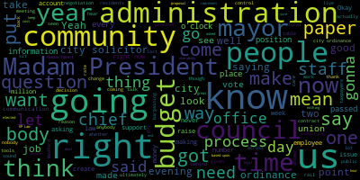
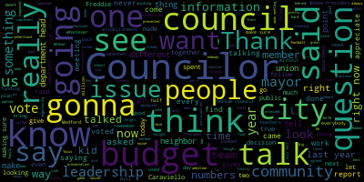
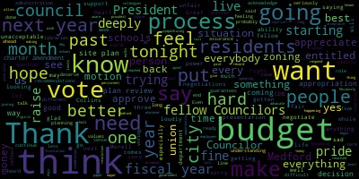

AI-generated transcript of City Council 06-20-23
Back to all transcripts
[Morell]: 13th regular meeting of the Medford City Council June 20 2033 is called to order Mr. Clerk, please call the roll.
That's good.
That's a nice present present seven presents you're absent, please rise and salute the flag.
Announcements, accolades, remembrances, reports, and records.
The records of the meeting of June 6th, 2023 were passed to Councilor Carvillo.
Councilor Carvillo, how did you find them?
On the motion of Councillor Carriello, seconded by Councillor Collins.
All those in favor?
All those opposed?
Motion passes.
The records of a special meeting of the June 15th, 2023 meeting were passed to Councillor Collins.
Councillor Collins, how did you find that?
I find them in order and I move for approval.
On the motion of Councillor Collins, seconded by...
vice president bears all those in favor.
All those opposed motion passes.
Reports of committee 23 dash 320 June 6 2023 committee of the whole report to follow.
This was a meeting on hearings from different departments of the budget.
I believe this was the mayor's budget presentation as well as an overview and hearing from the chief of staff on administration as well.
On the motion of vice president bears to approve all reports of committee seconded by.
Councilor Collins, all those in favor?
All those opposed?
Motion passes.
[Bears]: Motion to suspend the rules to take public participation and papers under suspension.
[Morell]: On the motion of our subpoenas, we suspend the rules to take public participation and papers under suspension.
Seconded by Councilor Sang.
All those in favor?
All those in favor?
All those opposed?
Motion passes.
All right, we are going to take public participation.
to the honorable City Council.
June 14th 2023.
Councilors the undersigned respectfully pray.
Um, Amy C Tanaglia would like to discuss the ongoing situation regarding raises for City Hall clerks would like to discuss raises given to non union personnel would like to discuss working conditions and the difference between union and non union personnel and would like to discuss altercation at the administrator.
Administrations fundraiser held at the Ford
No, we vote on it later in the meeting.
[Tenaglia]: So I'm gonna just, I'm going to get to the point because all of this is just way too much.
It's just unbelievable.
Do you guys all get the packet I gave you?
I want you to look at page one, please.
And this is all non-union personnel that's allowed to get raises.
We asked at the very beginning when we started negotiations over a year ago, we started out with 5.5 and we weren't worth it.
So she said, the only thing we're gonna get is 2%.
Everybody's getting 2%.
If you please look at page one, chief of staff, 8.33%.
Director of communications, 10.38.
director of executive assistant 7.85.
I want to get to page two because this is important.
the elections personnel summary chat.
If you notice the election manager is getting 14.15% raise.
I've never heard of anything like that.
And at the same time, if you remember, she was here a couple of weeks ago during one of the budget meetings, and she wanted to change one of the full time positions into a part time position.
And if it got too busy, they would put it back to full time.
You can't do that with a union position, that has to be negotiated.
When she got hired, she got more money than the previous manager.
So according to them, when she got more money, they dissolved another clerk position so she could get paid.
Excuse me, that's a union position that needs to be negotiated.
Does everybody understand that?
Does everybody understand that slowly but surely, she's trying to get rid of the union?
Okay, that that is not right.
That is not okay.
Now you can go through all of these pages I gave you all the percentages that everybody is getting.
I want to go back to DPW for the second page six, please.
presented the Commissioner 8.43%.
I went through the whole list here.
And I noticed that the head clerk, which is a union position yet again, is missing.
The new position is now called the DPW director admin.
I think they had, if I recall correctly, during one of the meetings, they wanted that they wanted to get rid of
Yes, last year, okay.
They wanted to get rid of the office manager and promote her and give her a $20,000 raise.
That's fine and dandy, but what about us?
So now it's gone, her title is gone.
She has gotten a obviously a promotion with her new title.
And I also noticed that there's only one other
there's one clerk position missing.
There was supposed to be a senior clerk, a principal clerk, and the office manager.
Right now, when I went through all of these, there's one head clerk.
And I think that's it.
So what happened to these union positions?
How is this allowed time and time again?
Can anybody answer me?
Can anybody look me in the eye and tell me that- These are mandatory topics of bargaining, correct?
[Knight]: Excuse me?
These are mandatory topics of bargaining, correct?
[Tenaglia]: Yes.
[Knight]: Yeah, so you guys should be taking care of this at the table.
[Tenaglia]: No, we don't even know about this until we see this paperwork.
I didn't know any of this was going on.
[Knight]: You guys need to enact your rights.
I mean, you know what I mean?
You have rights under the- I don't get it, though.
[Tenaglia]: You people are supposed to be for us.
What is going on?
[Knight]: Amy, time out here.
Time out here.
We're not the administration.
We don't negotiate contracts.
That's the job of the chief of staff per ordinance.
All right, now, I haven't seen the chief of staff in a contract negotiation.
That's a whole different story.
We have KP Law doing that.
[Scarpelli]: Point of information, Councilor Knight.
I think what Amy's talking about is these positions were all voted by members of this council, not unanimously, but it was voted by members of this group.
That's what she's saying.
[Knight]: Yeah, I agree with you there.
But these are mandatory topics of bargaining.
So when the administration is, you know, depleting the number of membership, the number of
employees that are in the membership, you have to look at the work that's being performed.
And if the work that's being performed by an employee that's actually union workers, not in the union, they didn't bring the city up on charges.
You know, we've seen time and time again in this community, the level of respect that's given to organized labor by this administration.
All right, and it's lacking, it's lacking and never before and I mean, I've worked in local government now for
Shoot, since 1999, I represented union workers all across the Commonwealth from Worcester County to Springfield and back, all right, state, local.
And I've never seen anything like this before, where employees are treated like this.
And, you know, I just,
I'm afraid for you for being up here right now, tonight and speaking out.
I'm afraid for you right now from being up here and speaking out tonight.
[Tenaglia]: I could be afraid for myself also.
But there comes a point where everybody just has to do what is right.
Don't go for your own agendas.
Do what is right.
And I don't I don't understand it.
[Knight]: And the reason I say I'm scared for you right now is because I could go down a list of people
have got they've gotten rid of come up here to this microphone and they've spoken out against some injustice, the councils agree with them, and those people are gone.
So we look at Brian Karen's Mike for ready.
Mike Durham, Alicia Nunley, Molly kibbe.
That's five people, right?
That's five people, five people with families, five people who need health insurance.
Five people that committed to work for this community that came up here and spoke on behalf of the people and the taxpayers and the world let go.
I applaud you for your courage, Amy.
I do applaud you for the courage that you have for coming up here.
I think a lot of this stuff really is mandatory topics of bargaining and mandatory topics of negotiation that need to be addressed at the table.
I agree with you that the actions of this body and the vote that some people take, given these people raises, there's no question about that.
The council needs to fund this, the mayor needs to propose it.
And the mayor did propose a significant pay hike for a number of people.
What's the number councilor Bears?
I believe it was 16 requests have been made so far for reclassification of positions and the council is- 18, we rejected 16.
18, we rejected 16.
[Tenaglia]: When nobody listens to you in the negotiations, and your hands are tied, and you have nobody else to go to, this is my go-to right here.
[Knight]: I hear you, and you know what?
When nobody listens to us at this meeting, tonight's the night.
It's our go-to, all right?
Because for a year, we've been sitting there, and we've been saying that we need certain tools in the toolbox to do a job for these people in this community, including you, including the workers in the city hall, and we haven't been given them.
We haven't been given the tools that we need to do the job.
And tonight is gonna be a day of reckoning because I don't think there's anybody behind this rail based upon the debates that I've listened to that's happy with the direction that this community is going in, that's happy with the way that we've been treated, that's happy with the way employees have been treated in this community, right?
And I think that's safe to say, nobody behind this rail based upon the commentary and the minutes that have been approved by this body, that nobody behind this rail is happy with the direction this community is going in.
All right, so think about how frustrated you are.
Now think about how frustrated we are.
We're the last stop.
You come to us for help and we can't get answers.
The only time we can get answers is from January 1st to, you know, maybe, maybe, sorry, June 1st to June 31st, June 30th, you know, right at the, right at the close of the fiscal year.
That's when we get answers.
Hi, Camilla.
Good, good to see you.
[Morell]: If you could just speak into the microphone.
[Camilla]: Personally, I'm not afraid for my job.
Okay.
I'm disgusted.
It's a travesty.
Everything that's been going on.
I mean, bathroom deals.
I'm finding there's a lot of illegal stuff going on.
And I want to know what, who I can turn to legally.
to have this investigated.
Legally, if I can't get help from you people, then I'm going to have an outside source commit.
Well, I think I have the budgeted audited.
I will go to the ends.
Because what I feel there's something going on.
And I don't like it.
I really don't like it.
I don't believe that these people she she's gonna give the man's gonna give raises the people that she knows are in her back pocket or whatever you want to say.
Whoever kisses her butt or whatever I'm going to say but on TV I don't care.
Okay.
But the rest of us mean nothing.
I've been here 38 years.
I worked through COVID.
I didn't stay home.
Okay, I didn't work to the zoom I came in.
I deserve respect.
I don't need to be disrespected.
And none of these girls need to be disrespected.
And I believe the paper should be involved.
I have to get the press.
I'll get the press.
I have to get the auditor in... the state auditor, I will get the state auditor in.
I want to know what KP laws get paid every year.
And let a good solicitor go to bring in that company.
[Knight]: Well, here's the problem, Camilla.
I mean, ultimately, you want to time out point of information, you ask the question, let me answer it.
Right.
So you want to know where you can go and where you can turn, right?
I'd say I'd say turn to the city solicitor.
But we don't have a city solicitor.
We have no we have nobody in the law department that's here represent the interest of the taxpayers.
[Camilla]: The mayor has a the mayor has a private law firm on TV.
Okay, know who you're voting in next November.
That's all I have to say.
Because this city has gone to, I'm not even gonna use the word.
Never have I seen anything like this.
I am disgusted.
And if she wants to try and fire me after tonight, let her.
Because I have legal backing.
I have a right to stand here and say what I wanna say.
And I have a right to tell the people of Medford, she's not a good mayor.
[Tenaglia]: What I've also realized, besides that paperwork that I gave you, I looked on the agenda tonight, and I also noticed that she put out an amended budget for this year, it was put out on June 14.
She is asking for a lot more in salaries than what I read off to you.
So people, the assessor's office and salaries, they're asking for more than $37,000 extra.
I mean, the election committee, now they're putting part time, they're making one position supposedly part time, which they shouldn't be able to do, but they're asking for another $103,000.
salaries?
How was that?
How was that even possible?
How?
I don't know how people can allow this to go on.
You know, I can, can people can somebody tell me something?
Can somebody like at least respond?
Can somebody tell me that this is not okay, but actually back up their words?
You know, everybody here is telling me that all we're behind you, you know, go out and do this.
We'll be right behind you.
And then I hear
that there's a backroom deal that this is all set already.
So all of my words and all of everything that we've tried to explain to you, person to person, not even not even counselor to employee, just as human beings.
Does everybody understand that once this budget is passed, all these people that are already making so much money are getting good raises, and me, who's making what, $56,000?
I can't afford it.
Somebody has to do something.
[Knight]: Well, Amy, I think that's inaccurate.
The raises that have been, the raises that you're referring to have already been passed and they've already been funded.
So regardless of whether or not this budget passed, these pay scales established by ordinance.
everything except for I think Mary's position, the one that you referred to, because that hasn't been passed by ordinance and the human resources position that they keep ignoring us on.
But ultimately, these classifications for non-union titles and the cost of living adjustment that's attached there too, was passed by this body, not unanimously, but it was passed by this body and it was funded by this body.
[Tenaglia]: So everybody, wait a second, everybody's entitled to a cost of living increase, except for, we're not even at the minimum level here.
We're below, we're almost at poverty level here, people.
[Knight]: Right, but you have the power to negotiate in these non-union policies.
[Tenaglia]: We have no power, do you understand what it's like?
Well, we did ask and you guys weren't allowed to come in.
It's like talking to a wall.
It's like, it's better to go get a wall, bang your head against it, and maybe you'll get something done.
But I'm sure everybody here that's going to pass the budget got exactly what they wanted right everybody's going to get what they want.
But let's see if it really goes through.
[Knight]: So just a question so the negotiations between the clerical union and the administration I'm going well.
Really, no, I'm just thinking back to when the mayor put her budget presentation on opening night, and she said how great negotiations are going with all the negotiations and how close they were to settle.
[Morell]: I'm not happening.
[Scarpelli]: Thank you, Amy Thank you so much.
I understand your frustration, and but again this is the fundamental issues we're having
and society, right?
Everybody wants to talk about supporting the union.
It sounds good, it looks good on your paraphernalia you're gonna mail out that you're supported or you're whatever for this, but I want you to realize, and I want my fellow councils to realize, this is something I've been saying from the beginning, any money paper that's come, unless it was urgent, I voted no.
Any vote for raises for non-union employees, I voted no.
I implored, I expressed that to my fellow counselors and they passed, unfortunately.
I voted no.
What I will tell you is the other issue that I see, it's pretty damaging.
When you look behind you, I don't see one male.
I don't see one male employee that hasn't got when they need it.
And I know this council in the past have talked about the rights of women and making sure there's equality here.
And I don't see that either.
So here's the thing, I'm not afraid either.
I lived in this community my whole life.
I've been an elected official since I left teaching in 2008.
I'm not afraid to say what I have to say.
But what I'm sad for you is you're being used as a pawn.
Unions are being used as a pawn, whether it's the lieutenant governor, whether it's the governor's office, whether it's state representatives or whether it's this council.
So what can I tell you?
I can't tell you anything.
You're going through horrible negotiations because nobody is standing up for you.
This is the time.
Right now, I thought today, when I came here, I said, well, this is the time.
We've talked about a council that have worked together pretty closely in the past year, making sure good initiatives get passed, even without any of the tools that were promised us last year.
So this is the time, when we vote later, you're going to realize where you should focus on, where the city should focus on, where unions should focus on.
Because I'll be honest with you, if you keep giving and you keep giving, what is she gonna do?
She's gonna keep taking.
Until what?
You say stop.
Last year we said stop.
And at least we were heard.
At least we were heard.
With the presentation later with the budget, I know Councilor Caraviello has worked extensively in putting some numbers together, that when I think that people hear it, and if anybody would vote for this budget after you hear these numbers, it'll be appalling for me.
So what I could tell you and your fellow colleagues that are getting the short end of the stick again,
is all I could do is apologize from one city councilor to one department in the city that keeps us running every single day.
I apologize that you haven't even have to go through this.
This is a disgrace.
This is sad for me.
[Tenaglia]: Can I ask who here?
Who here did say yes to everybody getting well the non union people getting raises?
Who here?
Who here said yes?
Oh, really?
Really, all four of you had said you were going to stand behind us.
I don't understand it.
I just so you it was a slap in the face.
You lied to me.
You lied to me.
You lied to all these women.
You lied to the employees.
You lied to the citizens.
[Morell]: For a point of clarification.
This vote was early.
This was I mean, you're absolutely entails you feel like this vote was prior to you coming before us.
This vote was prior to what prior to you coming before us to speak at public participation.
This vote was- I've spoken months ago too.
Okay, but I just want to make clear if it wasn't the most recent one.
[Tenaglia]: Is anybody ashamed of themselves?
[Morell]: I'm not, I stand by my vote.
It was a 2% raise over three years.
It was 2%, 2%, 2%.
This is 2%?
It compounds.
[Bears]: No it wasn't.
It was four.
[Morell]: What we voted for was 2%.
Oh my God.
Look at the numbers.
[Bears]: It compounds, it's compound interest.
That's why it's more than 6%.
[Scarpelli]: You wouldn't know what compound is because you weren't given a raise for six years.
So that actually explained to you later.
You wouldn't know that, I'm sorry.
[Tenaglia]: You talk about giving the other people cost of living increases.
Bring their salaries up so they can survive.
Where's my cost of living increase?
[Knight]: Amy, the council did also in that proposal that was given to us, the mayor didn't tell us what classifications were included in that.
And then when we did an investigation and we looked into it, we found that the executive was included in that.
The mayor proposed a raise for herself in that proposal and we cut that out.
And the mayor had also proposed a raise for the council and we cut that raise out as well.
You know what I mean, to stand by what we've said that you know what I mean, rising tide floats all ships and we think that you guys should go so...
[Tenaglia]: you think department heads that started six months ago, three months ago, whatever deserved a raise that they got.
They haven't even been here.
For a year, yes?
I've been here 23 years.
[Knight]: Again, these are cost of living adjustments.
They're not performance-based.
[Tenaglia]: I need a cost of living adjustment.
[Knight]: Right, but you're in a union, so you gotta negotiate that.
They don't, you know, you have a collective bargaining.
[Tenaglia]: Not once has the mayor come in for a negotiation.
Not once has she said to us, I think this is important.
Let me talk to you people.
Not once.
You know, and all of you look like deer in headlights here, but you know what?
You're all getting everything you want.
And I got to go back every time I see a job posting in little little print at the bottom, it says that everything, all the job description, it's, it can include more than what is listed.
So in other words, I can tell you that I'm doing this and this.
But at the end, if they asked me to do even more, that's part of my job description, though it wasn't written there.
So when when do I stop?
I do the budget for the department.
Right?
I did for
20 years, I did facilities, right?
Now they got a whole new person, which is fine by me, because it's not worth the aggravation.
But all this extra work that I personally did because I love this city, and I liked my job is nothing.
It's all gone.
[Caraviello]: Yes, thank you.
[Tenaglia]: Thank you, Madam President.
[Caraviello]: Thank you.
I feel for every one of us.
I was one of the ones that did not support the non-union vote.
And not that the non-union people do not deserve a raise, they deserve a raise just like everyone else does.
But I come from a culture where these are the people that make the city run.
And you're the ones that make the department heads look good.
Bosses should never, ever, ever get a raise before their employees.
The city is similar to a business.
Your raise should be similar to the teacher's raise.
Everybody in the city should all get the same raise across the board.
What makes your job any less important than the teacher's?
What makes your job any less important than the fireman or the policeman or anybody else who works in this city?
We all work for the same thing.
We all work at the same common goal.
This is not, we're gonna pick and choose who we get raises, but this is how this group work.
We pick and choose who gets raises, who gets how much.
Teachers went out there and picketed forever.
Maybe you women should get out there and picket in front, like the teachers did.
[Tenaglia]: Oh, well, we did that and it didn't end up well.
[Caraviello]: It didn't end up well.
But again, everybody should be getting the same rates here.
Different departments shouldn't get it.
You're all essential workers here.
[Tenaglia]: Yes, and I understand- All work during COVID.
[Caraviello]: when you just bought $4,500 to know that.
[Tenaglia]: Yes, I do.
I know all of it.
[Caraviello]: You people work during COVID.
Policemen work during COVID.
Firemen work during COVID.
Everybody worked during COVID.
[Tenaglia]: Did you guys come in for COVID when when you had meetings?
Or were you behind a TV screen?
[Morell]: Amy, I'm gonna let you continue.
We do.
I'm being very generous with time.
I understand you're upset.
You have every right to be upset.
We give people 10 minutes for public participation, we're nearing a half hour, I'm absolutely gonna let you finish.
[Caraviello]: I'm gonna get to- Everyone in this building deserves the same raise that the teachers got, which is the 3%.
[Tenaglia]: I'm sorry, I think we deserve more.
[Caraviello]: Oh, that's it, but let's see.
I just want everybody to know- Nobody is less important than anyone else here.
[Tenaglia]: The president is gonna cut me off soon, which I understand, but I want everybody to know you're being lied to.
You're being lied to and you're accepting it, right?
We're better than this.
I'm so disgusted by what I see on a daily basis, what I hear on a daily basis.
I just, you know, the citizens of Medford need to know the truth.
And sadly they don't know.
And sadly things keep going on and on and they get worse and worse.
And we're left behind, as usual, right 3% raise for me is well 2% would have been 56 cents an hour so 3% wouldn't have been that much more.
What am I going to do with that.
Tell me what I'm going to do with 56 cents an hour.
What would you do with it, what would you do with it.
[Collins]: Mr. Collins.
[SPEAKER_04]: Thank you.
[Collins]: Thank you, President Morell.
Amy, thank you for being here.
I don't feel entitled to you sympathizing with anything that I have to say.
You have every right to be upset.
I just, I don't want you to get up here and put yourself out there and may not respond.
I just want to say, if you think that we're getting everything that we want, I feel like we're not getting anything that we want.
I'm speaking from the heart here, person to person.
I want everybody in the city to get a raise.
We're the city council.
cannot negotiate with unions.
We can't make appropriations.
It's why my drumbeat for the past three months has been about these charter amendments, which I hope that I would get a call from the mayor by today saying that she's something to the AG and she didn't.
That's why my persistent frustration has been with our lack of power during this budget process.
But it's not fair to me that your negotiations are not resolved.
It's not at all fair.
The whole process of bargaining negotiations of the city, I think,
Obviously unfair.
Not everybody should get the same thing.
The people who are paid the least should get the most and it should go up from there.
All that is to say, I don't want you to think, well, you can think whatever you want.
But I want to put on the record, I don't think that what's happening is acceptable.
I am looking at a situation where so much of what we see is deeply, deeply, deeply unacceptable to me, deeply unacceptable and unfair.
And it makes me sad.
It makes me sad, but I am aware of the legal limits of my power.
So when a paper comes before me to give some employees a raise, if I have the opportunity to say yes to a raise for some people, I'll say yes to that.
And I'm going to wish with all my heart that I had the ability to transmit that raise to people.
that have to negotiate for it and I am sorry that I can't do more materially for you and your union in this situation.
[Tenaglia]: You can change the budget right you can change line items and not, or you can't change anything.
That's what I was told what a meeting or two ago, you can reduce, you can reduce and reduce.
That's it, we can add, cut down something that's important, something that they need, make a point.
[Knight]: And I just want to just be on that point we did that last year Amy we did that at what one o'clock in the morning the mayor came up here in the magic money tree in her that grows in her office she shook it bunch of money fell out of it next thing you know we were going to get a lawyer that was going to come and help us out with zoning never happened.
What else we're going to get out of that deal.
City solicitor yeah assistant city solicitor the city council, never happened.
Well, it's something else was supposed to come out of that too I think but you know what I mean.
And then the way that they were going to fund all of these promises that they made to the council was they were going to take the money out of the negotiated salaries account, which is the account that they use to fund your raises.
And this council said, no, you're not taking the money out of that account.
All right.
So if you want to find magic money, you better find it somewhere else because you're not balancing this budget on the back of the working people in this community.
And the mayor went and took the money out of the public utility account.
So now we look at the transfers that are on the agenda this evening, we'll see hundreds of thousands of dollars in transfers so that we can pay to keep the lights on.
[Morell]: Councilor Collins, are you finished?
[Collins]: Yes.
[Morell]: Thank you.
Councilor Tseng.
[Tseng]: I'll be brief, and if I have more, I'll go after.
I know you're upset at us because of that vote that we took a while ago, and I don't think I can say anything that will make you feel better about the situation, and I know a lot of the folks in the crowd tonight, I know you guys personally, and I have to be upfront that I don't think I'm gonna make you guys happy in an instant, but I will say that vote that we took back then was, in my mind, the deciding question for it was, will this really help
the unions that are negotiating contracts, get what they want.
And I think we discussed it in detail back then, the answer that in my experience of dealing in with, you know, different players in this in the city, the answer was no.
And the answer was that whatever would happen would happen other channels, and not through this and I couldn't because of that answer I couldn't use that to justify holding up 2% raises for people who still work for the city or still city workers, and I understand that you guys are going to be super upset about that with me.
Um, but that was the reason why I took that vote.
That's the reason why I still support that.
[Tenaglia]: But why, tell me why, why did you think it was okay to leave us behind again and say it's okay for higher ups, for men, for people that are managers, why is it okay for them?
Tell me.
[Tseng]: Because it wasn't a question of leaving one group behind.
For me, the question was why yes, why no, and what if.
And there were there there were there were there answers for why yes and why no.
So for me, when I thought of what if, what if we didn't do this?
Would it help you guys?
The answer was no, but it would, it would have also left a big group of city employees behind and I couldn't let that happen as well.
[Tenaglia]: So you could only just let us suffer the women behind the scenes have to be over it, Amy.
I want to help you have control over saying no to those other raises.
[Bears]: Right, we had some specific things that came through on raises that we were able to dispute.
We got 30 things put before us and we had employees in the city saying, and by the way, a majority of the positions in that were not department heads.
They're just non-union people who are not department heads.
And they have, you know, some of these people are making 60, $65,000 a year also saying to me, I can't afford XYZ and I need this raise.
And what I had before me, what we had before us was a paper that said,
that said you can give some people something or you can give no one anything and it's going to help nothing.
I'm what you came before us I think two two meetings ago, and we were sitting here and you said vote down the budget.
And I said to you guys, I said, it's not going to get us anything.
It's not gonna get us anything because it's not, we've threatened it.
We've threatened a million things over and over again to vote down this, to vote down that.
We voted down 16 of the 18 things and it hasn't made a single difference in the negotiations.
I tried to attend the negotiations.
I wasn't allowed to attend the negotiations.
And I said before you and got quite a bit of pushback from the mayor's office that I would 100% be on the picket line for a strike because I think four years of no contract is ridiculous.
And I think that the negotiations aren't being done in the way that I would wanna do them.
[Tenaglia]: not in good faith at all.
[Bears]: And that's, you know, one of the reasons I wanted to sit down was to see it for myself and confirm that.
Now, the choices that I have before me, right, and we've had conversations about this here.
I want to open up the budget process.
I want to see more information.
I want us to be able to have real discussions here on this council about how we move forward, about how we fund staff, about how we fund contracts, because that's the purview.
That's as far as we can go here in the purview here.
We can't negotiate.
the contracts and we can't, by all the times that we've tried and all the ways that we've tried, have had no impact on the negotiations.
And when the decision or the question is before us to tell people they're not going to get raises because other people didn't get raises, or effectively shut down the city because people didn't get raises, I have to weigh the harm of that too.
And when I know that those decisions are going to be incredibly harmful, and we're not going to get anything anyway, because we're just going to get waited out,
I have to try to find something that's gonna improve the process in the future because better or worse, it seems that this is how it's been going for four years and the voters could make the same choice again.
And so it's an incredibly difficult position.
I work in labor every day.
I work in an organization where I've worked for years.
I've been a union member.
I have never seen a negotiation go this long.
I've advocated for changes to state law to basically put a shot clock on public sector negotiations because they shouldn't be allowed to drag out this long.
And I'm a supporter of the public employee right to strike because I think that's a way to force people to the table when you don't feel like they're negotiating in good faith.
All I know here is that when we say no to stuff about, because it's about the labor relations piece of things, it doesn't impact the negotiations.
And so that's how I think about these things.
I'm just trying to work as best as I can to make as much progress, to have the information and the open public discussions
so that voters are informed and educated about what the budget looks like.
And I don't think that voting down these non-union raises would have helped the negotiations, because we voted down 15 raises before that didn't help the negotiations.
I don't think voting down the budget is going to help the negotiations, because we voted down a bunch of money papers and we voted down the budget last year and it didn't help the negotiations.
So I'm taking a different strategy.
My question really is what's the strategy, I'd be happy to sit down and talk through the strategic approach and see how we can be helpful and try new things because what we're being asked, and you haven't necessarily made the explicit asked but the ideas of just voting down non union raises are voting down the budget and voting down money papers haven't been effective, and I can't.
repeat an ineffective strategy because it may make us feel better that we said no and stood up to something, but if we still get nothing at the end and somebody else gets hurt, it's just not, that's not fair either.
So I hear how much, I think you should get a market adjustment and a raise.
Like that's what I think the negotiation should be.
I can't even sit in and certainly I'm not on the other side of the table for me to actually negotiate that.
So it's a bad situation when it comes to the contracts and there are steps, there are different things that I would like to see tried that maybe could make movement on this.
But I don't think that voting down the budget or voting down other people's raises is gonna do that.
[Tseng]: And while I still technically up for sorry.
I, I mean, I think, Vice President bears.
I kind of explained the what the debate that was happening in my head really well.
The first phone call I made when we started our budget process with the mayor.
This was before she submitted her budget to us the first thing I brought up was the clerical union.
and me wanting to see more something done on that front.
Now, I've had a bunch of priorities, right?
And, you know, I still have to think about how I'm going to vote on the budget tonight, because there's some things I need to see, and I haven't seen yet, and some things that I wanted to see and have been there through good faith negotiations, right?
When I think about
potential effects of the budget, maybe there maybe there is a case for voting it down, I certainly do believe in that.
But, you know, I can't justify voting hurt everyone because it's an outcome that would eventually hurt everyone instead of, you know, just a little group of people like women.
No, that's that's, that's a very, that's a very grossly grossly false way of putting things but
I think the point has been made.
[Tenaglia]: One other thing I need to say, excuse me, Georgia, just for one second, please.
I just want everybody to know especially the voters out there.
You want to talk about hot you want to talk about like, how we're supposed to be all working together and for each other and backing each other up.
Before Christmas, my mother broke her neck.
She fell at 87 years old and broke her neck.
I asked to be able to work from home three days a week and come in two days a week to do the job that I can't do from home.
I asked.
And I was told, no, there's no working from home allowed.
Excuse me, you wanna know how many people are working from home now?
All non-union personnel.
You could have, somebody could have just looked at me with a little bit of sympathy and said, well, she's in the union, but this goes well beyond it.
This goes, having a house, having being a human being, we get slapped a million times and we keep getting up.
enough.
[Scarpelli]: Thank you, Madam President, I appreciate the time and I would just tell you know, everybody has their own opinions of what they have to do.
I too was a member of the negotiating team.
As a union members in the school department.
I then battled for contracts for teachers as a city school committee member.
I'm on the negotiating team municipality, neighbor community.
I'm a union member, my parents have been union members their whole lives.
One thing we've always learned and we saw it play out right in front of us when the country was going to close.
And what happened?
Each party stood strong until they figured out what was best for what their needs were.
And here we are right now.
And we've all agreed behind this rail, that making sure fair labor practices, making sure that there's equitable, equitable pay when it comes to our non union or union employees.
I said that every single time a vote came up.
And if we stood strong, Amy, my belief, if we stood strong on the no's all the way through,
then it comes to the position where we have to do the right thing for everybody or nobody.
So right now, this is why the city is so divided.
This is why morale, someone told me the other day when I mentioned it after I've talked to many different department heads, believe it or not, that morale here is terrible, and I can see why.
So all I can say is this, what my fellow councilors saying, they're not wrong.
This is what it is.
This is our power.
But I will tell you, the power that we have today to vote yes and no for the contract, for the budget, just like we did last year.
Just like we did last year.
And we thought we won last year, right?
We thought we finally got what we needed to make this body work better.
And what happened?
Not one promise was fulfilled.
Not one.
No different than what you're going through so this is going to be a very interesting evening tonight.
I think the community will see where we stand as a, as a council, where we stand and where we want the city to go, because if it's, if it's going to be, you know, pick and choose, like, it's being done on the city side with non union and dividing us.
If we're gonna see that here, then we're in a bad state for the next few years here, if that's gonna be the case, that stays the trend.
So I apologize and I told you that, and I appreciate you for coming up, I really do.
You know what, they have to see the people that it hurts, because I don't think people see, that's the other piece.
We don't have a newspaper, people don't see it every day, what they see is fluff.
A lot of people like to see the fluff and the happiness.
What they don't like to see is what's happening right now.
You standing up there and saying there are people, there are ladies, women behind you that work hard for the city that are hurting.
So again, I just want you to know, I know the president has given us more than enough time to talk.
So we appreciate that.
But there's nothing else we can do.
So I apologize.
And I appreciate it.
Thank you.
[Morell]: Thank you.
Yeah, thank you.
So anybody else for public participation at this time?
Seeing none, we have papers under suspension.
Madam Chief, sorry, Mr. Murphy, sorry.
Yeah, well, we'll take Mr. Murphy and then Madam Chief of Staff.
Thank you.
Madam Chief of Staff.
[Nazarian]: Thank you, President Morell.
Just wanna state a number of different pieces.
There were a lot of different statements that were made, a number of them, I think.
might have been mischaracterizations of what has occurred over a period of time and I, I understand that there are frustrations this contract that's in discussion has been open since 2019 I understand that you know I think we all understand that something that we want to resolve we are presently in mediation to resolve the mayor myself or human resources director, sorry.
[Morell]: you can't hear.
Can you lean?
I'm sorry.
Managers are killing near the mic.
I don't certainly is this better?
Yeah, that's better.
[Nazarian]: Thank you.
Um, so I'll just quickly summarize.
I was just saying that there are a number of, um, pieces that I think are mischaracterizations, but I also want to acknowledge and understand and are the mayor myself and the human resources director.
We're all working towards trying to resolve this open contract that's been open since 2019.
Um
I truly and honestly, I mean, we've we've been at mediation, the three of us.
So we are at the negotiating table.
Mediation is a unique process.
I can't to preserve the process, the integrity of negotiations.
I'm advised not to comment on the details of those things.
I don't think this is the proper forum to get into the details of it.
[Morell]: Councilor, do you have a question?
[Knight]: I'm just a little confused as to what leads us to mediation, because usually you go to mediation when you no longer can sit at the table anymore and make any forward progress, right?
So mediation means you're at a stalemate at this point in time, right?
You've reached what's called an impasse, is the negotiating term.
You've reached an impasse in negotiations, and we can no longer move further or backwards.
So my question is, if you're working with these unions and these employee groups, how have we gotten to a point where at impasse with multiple groups, if in fact we are working with them?
Because it doesn't make sense to me if we're going to mediation to a third party negotiator, a third party to handle our negotiations, right?
Outside person, right?
Through mediation because we reached impasse, that doesn't sound to me like the definition of working together with somebody.
So I'd just like to get a response from the chief of staff because she always likes to answer questions and provide points of information.
So I'd like to ask the chief of staff, what got us to this point?
Why are we at a point of impasse when these contracts have been open now since this administration got elected?
[Morell]: Thank you Councilor Knight.
[Nazarian]: Thank you President Morell through you to Councilor Knight.
So the timeline on this particular contract and at least one other contract is, again, 2019, we had a pandemic.
This unit has changed representation twice I think that's important to note here, and I'm not certainly not saying that that's their fault.
I have whatever the union wants to do to have representation is perfectly fine for the city.
But administratively, what that does to the process is we cannot negotiate while they're going through a process to go through a change.
In 2021 and 2022, there were two changes.
First, they changed to Feinberg, Dumont, and Brennan as representation, and then they changed to the Teamsters.
Those changes caused unintentional delays to the process.
[Knight]: My question is this, is Feinberg, Dumont, and Brennan an employee organization?
they're not.
And Feinberg, Dumont, and Brennan is a law office.
They're a law office that also works with Local 25.
All right.
So the way that this works is if you're going to decertify from a union, they're a member of the SEIU and they want to decertify.
You can't decertify when your contract is active.
So what happens was the union said, we're going to decertify from SEIU.
And they did.
And they picked up private representation because there's a cooling off period that's necessary before they can apply with another union.
But nothing precluded them from going to the table and negotiating once they decertified from SEIU and once that contract was open.
[Nazarian]: Thank you.
That's right.
Thank you, President Morell.
And we continue to have negotiations when we, when we understood that the clerical union was represented by the law firm.
But then we understood that they were going through another petition change.
So these things do have a way of affecting timelines.
So I think that's important for everyone to know and have that in the back of their minds.
[Knight]: Madam President, I just like to know what the timeline is.
I just like to know what the timeline is.
I'm just asking a question.
[Morell]: Let her finish.
[Nazarian]: Thank you, President Morell.
Um, on June 30th, we're scheduled for another mediation session, and I will say during these mediation sessions, well, first and foremost, the union filed for mediation.
The city didn't file for mediation, but I have no none.
None of us have any issue with the union filing for mediation.
It's helpful sometimes to have another party come in and observe this matter again.
I really do not want to get into a situation where I'm attempting to speak to actual terms because I think
It's a slippery slope and we're just going to be here all night on something like that.
But happy to discuss with anyone individually on the council on those matters.
And obviously as far as the union is concerned, we're happy to have mediation on June 30 and discuss the matter further.
Um, a number of other things were stated, um, but I think it was clearly stated that a number of the raises that were essentially received by a non-union staff were 2%, 2%, and 2%, so I think that was made clear.
Thank you.
I don't know exactly the discussion that was occurring when I first walked in.
I apologize for being late.
I was about five minutes late.
Um, it may have something to do with a misunderstanding as far as a unit, as far as the
certain positions in the DPW is concerned.
If there is, I'm happy to answer the question.
I just need to know what the question was.
And generally,
There's a lot of misconceptions that were stated, and I couldn't go through each and every one of them, but to be clear, the mayor disclosed that when she presented the non-union COLAs, that she was not, she put it before the council and she disclosed and disclaimed that that was something that this council could decide upon.
And this council decided not to adjust the mayor's salary and its own salary, which is perfectly fine.
And I think it's a,
[Knight]: point of information that men present.
I do believe the council asked for a legal opinion as to whether or not that paper was posed with an and sound ethical footing, because what happened was the mayor asked the council to actually approve its own raise and erase for herself in the same year that they perceive it, we never received a response to that so if Nina could follow up on that, that would be good.
[Morell]: Thank you.
Thank you, Madam Chief staff.
Mr Murphy, did you want to.
[Knight]: question Madam President on that.
Can you just tell me who represents the city in the collective bargaining sessions can the chief of staff tell you who represents the city.
[Morell]: Is that your question if the chief of staff can.
[Knight]: Yeah, yeah, whoever that's her name Yeah, that'd be fine.
Who represents who represents the city.
[Morell]: I'm asking you just to address her by her title you don't need to respond saying if that's her name, Madam Chief of Staff.
[Nazarian]: Thank you President Morell through you to Counselor Knight.
Yes, the city has special labor council through KP law that represents the city in union negotiations from time to time.
Thank you.
[Knight]: And just on that note, Madam President, the administration's well aware of city ordinance section 2-680.
Right.
Okay.
And part of that ordinance does read that the chief of staff shall be responsible for representing the mayor and I'll collect the bargaining sessions.
Is the Chief of Staff employed by KP Law?
Is the Chief of Staff KP Law?
[Nazarian]: Madam President.
Madam Chief Staff.
Thank you.
I don't have the ordinance in front of me, but my reading of the ordinance is that that ordinance allows the chief of staff to determine the representatives.
Again, that's my reading of the ordinance.
That does not necessarily mean that the chief of staff needs to be at the negotiating table.
And for the record, I stepped away from the negotiating table for a period of time.
I am back in active negotiations that may or may not include me physically at the negotiating table.
But
I am certainly working on those matters and also with our Human Resources Director.
[Morell]: Thank you.
[Knight]: Madam President, on that point, the Chief of Staff is wrong in her reading of the ordinance because that was not the legislative intent.
And I can speak to that personally because I voted for it in 2016 when it came up.
I was a part of this body at that time.
So a reading of it is incorrect and is not in line with the legislative intent.
And I think that any other member of this council that was on the body in 2016 can also concur with that.
All right, so the way I'm looking at this now is we have an essential function and essential duty of the chief of staff that's been taken away.
The salary is still $135,000, but an essential function, essential duty has been taken away and it's been farmed out to a third party, private third party law firm.
That's an expense.
So when we sit down and we talk about why the council needs a city solicitor, it's to control these expenses and these wasteful spending habits that this administration has.
So when we look at the chief of staff's title in the ordinance that supports the job that you're supposed to do, and we'll go through it, the majority of the duties have been taken away, but yet the salary remains the same.
So when I hear members of our clerical union get up here and quite frankly,
properly express dissatisfaction and disgust because they've been out of the contract for 48 months and then listen to the chief of staff come up here and try to explain our way out of the fact that it's because they're not able to sit down at the table and negotiate properly and then try to spin it by saying that they're precluded from doing it when I know for a fact they're not.
It's just bizarre to me, Madam President.
And I feel like what it is is it's for the cameras and it's not for us.
And it's to portray a picture and control a narrative that's not a reality.
So that's where I am with this.
I thank the chief of staff and president of the clerical union, Mr. Naglia, for being up here this evening and sharing with us their insight on such an important topic in the community.
And I am going to what I'd call use my reasonable deduction to determine who's being more truthful than not.
[Nazarian]: President Morell, I don't think any of that requires a response from me, so I'm going to respond.
[Morell]: Okay, thank you, Madam Chief of Staff.
Mr. Murphy, you're almost here.
name and address to the record, please the heck of a night.
[Murphy]: Chris Murphy, President, Medford senior football associates, if you want to have.
I am up here just to give a sent the thing to the school committee so I just wanted to
come talk to you guys just to have more eyes on some of the stuff we're going to be doing this summer.
We have two big events coming up.
The last time I saw you guys was in November.
So it's good to see you all again.
We have had been a pretty busy
year wise, you know, it seems like football has become like a 12 month thing.
You know, we've done a lot of community events this past winter, we did community cleanup day, we did grave decoration, and we just helped the Medford and Chelsea Kiwanis last week pack 10,000 meals.
which was as soon as the kids kind of turned into a little competition and went crazy with packing meals.
But we've had a great off season.
Just wanted to come up here and talk about two events we're having in the summer.
July 14th, Friday at 5 p.m.
We're dubbing it the event of the summer.
We're going to be doing the first annual blue and white game.
It's going to be a flag football game where the team is going to team up with separate team with joint teams of the Medford Police and Fire Department to do a friendly flag football game.
uh, to get the kids, um, Build a little part, uh, build on our partnership with those 22 entities right now.
Uh, the game will be at Hormel Stadium.
It is open to the public.
We're asking for $5 donation from people that help help benefit the team.
You're all more than welcome to come.
And if you guys want to play a couple snaps, be my guest.
We'll get you a T shirt.
We'll get you some flags and
we'll have a little bit of fun.
The other event we are pushing right now is this year is the 85th anniversary of Medford becoming the Mustangs.
So we're trying to do a series of events.
throughout the summer and season.
So we've been asking the public to, if they have any photos, old videos, old, anything cool that they want to share that, you know, we've been trying to do Facebook posts every day to get some cool info and stuff that, you know, even I didn't know existed, but,
If you do our Facebook page, just message us what you have my emails on there.
Yeah, I appreciate your time.
It's tough.
We don't have a newspaper, but I know a lot of people watch this and I was appreciate that you guys let me come up here.
[Scarpelli]: Madam President.
Thank you.
Chris, again, I want to take the time to I know we expressed it as a council.
to thank the Football Association and the high school football team.
But whenever you think you guys are done, what I saw, what I saw and what I heard with the Kiwanians and feeding the, helping with the food insecurities and working together with Chelsea and making sure that again, Medford stood above it.
So again, I want to applaud the members of your team and the coach and staff for really
really looking at what being a high school athlete is truly all about.
It's not, you know, if we looked at the wins and losses, that's, that's pretty small way of looking at this process.
But the way that this football team, our football team brings so much pride to this community.
And for me personally, um, I just have to applaud the association coach Curly and his staff.
And most importantly, the kids in that team, cause they, they really, um,
really standing above and showing what true superstars they are.
So again, thank you very much for that.
[Murphy]: Well, I can't echo how awesome Coach Curley has been making these kids great citizens.
John wanted to be here tonight.
He had family stuff to do.
So he sent me but
I think the best way I can say is I don't know if you remember this, but 23 years ago, the day before Thanksgiving, you came up and talked to us.
I did.
I don't know if you remember what you said, but I'll share it.
You know, just because you put on a blue and white shirt doesn't make you a Mustang.
You have to earn it.
You have to
you know, get out your, your not only athletes, but your students and your citizens and we take that's something that we strive on and something that we have instilled in these kids and these kids have take that take that the heart and
I think they've gone above and beyond being great citizens in this community.
We're proud of the kids who've graduated and how they've gone and given back to the community.
I can't say enough about the fine young men and women we have on the Nifflin High School football team.
[Morell]: Thank you, Councilor Caraviello.
[Caraviello]: Thank you, Madam President.
Chris, thank you and Coach Curley for all the help you did the other night.
They packed up 10,000 meals for people in the community.
And the benefactor of that was the St.
Rayfield's Food Pantry.
Excellent.
So they thank you very much.
And we unpacked all those boxes on Thursday morning over there.
But again, it means a lot to wear the blue and white in this community.
[Murphy]: Oh, yeah.
[Caraviello]: And again, it's not just winning or losing.
It's a spirit.
I've been part of that spirit my whole life.
My family's been by the spirit my whole life.
And I thank you for being by the spirit your whole life.
[Murphy]: But I think I think you would, you'd say the while back, you know, we've lost a lot of great people in the last year or two.
And you've said, who's going to be there to kind of pick that up.
And thank you.
I'm happy to say that, you know, as long as I'm
my children a lot.
[Caraviello]: I'll be, uh, and you certainly stepped up for some of the people that we've lost over the years.
Yeah.
[Murphy]: I mean, it's, those are some, some, um, yeah, I've, I've learned, I've got great, great mentors and I'm glad that we're putting that on a new generation of people.
I know.
And, uh, like the other night, I mean, the second the guy said, Oh, this table's done this many boxes.
I, you know, the kids we had kind of just said, Oh no, no.
And they,
If there was like a packaging firm that saw how these kids would all have jobs by the end of that night, I think these kids finished with the first table to finish by like 45 minutes.
So like they, you know, they turned into a little competition.
And at the same time, they, like I said, they were able to.
[Caraviello]: It was a good night and they did and they deserve accolades.
All of them that were there.
And Chris, thank you for stepping up and thank you for stepping up to help the community also.
[Murphy]: I said I hope to see you guys July, July 14th and.
Let me know if you want to play.
[Morell]: Thank you.
And thank you for sharing that.
Okay, going to papers under suspension 23-337 offered by Councilor Scarpelli.
Be it so resolved, the Medford City Council sends deepest condolences to the family of Fred Rita, a longtime Medford resident and volunteer for the Medford Youth and United Soccer Programs.
Councilor Scarpelli.
[Scarpelli]: Thank you, Madam President.
Some tragic news.
Again, when Chris brings up
people that have given to our community.
There's a gentleman who kids grew up in Medford, coached his youngest son, watched Freddy Rita give back to the kids in the community.
And when people weren't supposed to give to this much time and effort for certain type of kids,
Freddie would go and find the kids that couldn't afford a pair of cleats, or a pair of shin guards.
And he would make sure that he would buy those cleats and buy those shin guards, and then he'd put them on a team.
And then when at the time there was, you know, this infighting with method you soccer, and some people thought that kids in need really weren't
getting the attention they deserve, Freddie and some others, dedicated members of the community, decided to start a new league called Method United.
And they did that, not because of ego, but to make sure every kid was represented.
And it worked.
And what happened after a few years, that group then became, came together again as a true Method youth soccer organization that we see today.
A true vision of what the demographic of what Method truly looks like.
The canvas that is Medford.
And Freddie's love for the game of soccer and Freddie's passion to help kids was evident.
Freddie's a great story because I saw him a few weeks ago at a baseball game and we were talking and I didn't realize Freddie was an orphan.
And I said, there's no way that an orphan has the ability to raise such an amazing family.
And that's what he did.
He raised amazing children and
His wife, Adele, is just one of the best people that I've ever met.
And unfortunately, Freddy lost his life mowing his lawn.
And it's something that I know my family, myself, we're gonna miss Freddy.
He was very special.
And we send our condolences to his family.
He was one of the great ones.
So thank you.
[Morell]: Thank you, Councilor Scarpelli.
On a motion of Council Scott Kelly, just speak please Madam President.
[Knight]: I just like to join Council Scott Kelly and offer my condolences.
Although I didn't know Fred, as well as George that I do remember him from a very young age, when I was involved in Methodist soccer, and I also had the opportunity to go to college with the sun Steve, and what a good kid.
Freddie Rita was just a nice guy.
You know what I mean?
George hit the nail right on the head.
He was someone that wasn't afraid to put himself, put the community before himself and put himself out there to do the work, roll up his sleeves, get dirty and not seek an ounce of credit for it.
He was a great man.
Like you said, great family.
And I joined my council colleague and extending my deep condolences to the family.
[Morell]: I think it comes tonight.
On the motion of Councilor Scarpelli seconded by Councilor night all those in favor.
I suppose motion passes please rise for a moment of silence.
23-336 offered under suspension by Councilor Sang, Vice President Bears, and Councilor Collins, whereas the city of Medford is enriched by welcoming people from all walks of life, and whereas the month of June is nationally recognized as Pride Month to affirm the dignity, equality, and importance of LGBTQ plus people, be it therefore so resolved that the Medford City Council recognizes, affirms, and celebrates Pride Month, and be it further resolved that the Medford City Council stands in solidarity with the LGBTQ plus community during Pride Month and throughout the year.
[Tseng]: Councilor saying, Thank you, President morale.
I'm so happy and heartened to see our community come together and celebrate Pride Month in the ways that we have this year and last year.
We're truly, I think, embracing and owning it as a city, but I think we would be remiss not to mention the pain that the LGBTQ plus community has been going through in recent years with attacks to them, their dignity and their equality.
when it comes to what's being said in social media, when it comes to inappropriate accusations that are grounded in no reality.
These things, they might seem like national things that are only happening on a national level or in different states, but we've seen these things in the metropolitan schools where there was an incident and on social media this week with regards to the city of Medford and our celebration of pride.
This resolution is really offered as a way to for us on here on the Medford City Council to say that we stand with our LGBTQ plus community, that we want them to feel accepted and at home here in Medford and safe.
[Morell]: Thank you.
[Collins]: Thank you, President Morrell and I thank my fellow colleagues for joining with me in this resolution and I want to thank everybody in Medford who reached out to us over the past couple days to advocate for making sure that the spirit of pride and the flag of pride and the celebration of pride is, you know, echoes ever more loudly from City Hall.
It's important every month of the year to let it be known that
people of all walks of life, especially people who are celebrating Pride Month.
We're glad you're here.
We support you.
We want you to live your best and proudest life every month of the year, and that we here in the Medford city government, we're here to support you in that, and to let you know that you have allies behind this rail.
Thank you.
[Morell]: Thank you, Councilor Collins.
Vice President Bears.
[Bears]: Thank you, Madam President.
I think my fellow councilors have spoken well, and the resolution speaks well, but
You know, I was driving home from work the other day last week and you listen to a story and you listen to these parents and this kid in Texas, and I know it's not here, I know it's far away, but it's here, being forced to move, leave their home, leave their friends, leave their jobs, because their state says, we're not gonna let you get the medical treatment that your doctor
and your family and you want to make sure that you are healthy and safe and living comfortably in your own body.
And
It's just awful.
And so anything that we can do to say that that's not what we're going to do here, I think is very important.
I was a lot worse when I was listening to the story, so I apologize for getting emotional, but I just think that's what this is really about, saying that here we're going to let people do what they need to do to be comfortable with who they are.
That's very important.
Thank you.
[Morell]: Thank you, President Bares.
Any further discussion from the council?
Thank you, Councilor Wright.
I want to thank my fellow councilors for bringing this forward.
I think it's really an important thing to affirm, which a way which I know this council feels and stands, and it's just very important to do right now for the reasons my fellow councilors called out in a time when people are trying to shout down, dismiss, and take back, and really, you know, take us back in time and harm a community that has fought for so long just for people to recognize their humanity.
and celebrating the hard wins in that fight, and knowing that it's something that we have to fight for every single day, and people will always fight to try to take away those hard-fought wins.
So I think it's very important we affirm this.
I thank you all for bringing this forward.
On the motion of Councilor Knight to approve seconded by Vice Mayor Behrs.
All those in favor?
All those opposed?
Motion passes.
hearings 23 dash 319 legal notice.
The Medford notice of a public hearing the Medford City Council will hold a public hearing in the Howard F Alden chambers at Medford City Hall, 85 George P Hassett Drive, Medford mass and via zoom on Tuesday, June 20 2023 at 7pm, a link to be posted no later than Friday, June 16 2023 on free petitions for special permits by raising canes restaurants.
LLC doing business as raising canes, chicken fingers, 6800 Bishop Road, Plano, Texas, 75024.
The petitioner is seeking to construct an eat-in restaurant allowed use in a commercial zone, commercial 1C1 zoning district at 509 to 511 Riverside Avenue, also known as 760 Felsway, parcel ID lot 7-02-27, with a drive-thru requiring a special permit from the Medford City Council pursuant to Chapter 94,
of use is a G two city of Medford zoning ordinance.
The petitioner seeks a special permit pursuant to 94 section 6.1 dot 10 to waive the off street loading requirements as set forth in Chapter 94 section 6.1 dot seven of the Medford zoning ordinance and a special permit as to extended hours of operation pursuant to 94 Chapter 94 section 7.2 dot two of the Medford zoning ordinance.
The petitioner
The petitions seek special permits for drive-thru use, waiver of off-street loading requirements, extended hours of operation requested Sunday through Thursday, 11 p.m.
to 12 a.m.
and Friday and Saturday, 11 p.m.
to 1 a.m.
The petitions and site plans for this project may be viewed in the office of the city clerk, room 103, Medford City Hall, Medford Mass.
The site plans can also be viewed on the city's website at www.medfordma.org slash boards slash community dash development dash board by clicking on current city board filings.
call 781-393-2435 for any accommodations aid to the city of Medford is an EEOA 504 employer by order of the city council sign animal her to be city clerk advertise the Medford transcript in Somerville Journal, June 1st and 2020 2023 and June 8th, 2023.
I know we have the petitioner here.
We also have Director Hunt from PDS that asked that senior planner Danielle Evans, just give us a little intro before we hear from the petitioner.
Danielle is on zoom.
So we'll go to her first and then we'll go over to the petitioner.
There's some conditions from the CD board that they wanted to share.
President's decision, I'm just going to let them speak first, we'll go to the applicant.
[Evans]: Yeah, we just wanted to explain the process.
Because I know there's been some confusion in the past.
So basically, there's several
special permits and a site plan approval that need to be voted on by your board tonight.
The there's the the drive through use, where which city council is the special permit granting authority.
And the drive through use also classifies it as a major project, which triggers site plan review from the Community Development Board.
And because the city council is a special permit granting authority, that means that you're also the site plan review authority.
And in addition to that special permit, there was a special permit for extended hours.
And within the site plan review, there's the provision to waive the off street loading requirements.
So this was circulated amongst the different department heads who weigh in on site plan review.
They provided their comments to Community Development Board.
They held their meetings.
There was a lot of meetings with staff leading up to those meetings with the City Board, and they recommended approval with some conditions which are outlined in the memo that hopefully you will receive today.
Thank you.
[Caraviello]: Councilor Perriello.
Before Daniel leaves, can you have her explain the offsite loading permit?
[Evans]: Did you catch that, Daniel?
Yeah, so, yeah, through the chair.
Yeah, so one of the, so there's parking and loading requirements that are outlined in the table, and this triggers, the eating place with dry food triggers loading code A, which requires
It's one loading space.
However, it's not quite needed.
And there's loading in the plaza as a whole, but that's the way that they operate their business.
They don't need the huge loading dock.
So they requested a waiver from that and the city board recommended providing that waiver.
[Morell]: Thank you.
That's your question.
That's great.
[Scarpelli]: I have one.
Just one question.
I'm sorry.
Uh, Daniel, thank you for being a tight.
How was the participation with the, uh, in these meetings?
Do we have a lot of community input?
Uh, is that something that's that was that that was different?
Uh, it was not as normal as usual.
[Evans]: Um, maybe at least you can weigh in.
I don't remember there being a lot of, um,
folks who had expressed interest in this or were attending just for this matter.
I don't know, perhaps Attorney Desmond might recall, but I don't remember anything that.
[Scarpelli]: So not a big turnout of negatives.
[Evans]: Yeah, I think people were more like excited about it, if anything.
But I don't recall any opposition, but this is the public hearing here.
So there's the big signs over in the plaza.
So if anyone was even curious, they would see those big signs there.
[Knight]: Thank you.
Was the mailing done, Madam President?
[Evans]: Was the mailing done, Danielle?
Yep, to the abutters and to all the,
various abutting communities and state departments required under the meeting law in 48.
And also ran the paper for two successive weeks.
[Knight]: How far out did those notices go?
I know Mayor Longo, when she was a council, wanted to expand it to like 11 miles from where they were doing the project.
[Morell]: How far did those abutter notices go out?
[Evans]: There were abutters and abutters to abutters within, I think it's,
It's so many feet we get the it's the assessors certify.
[Knight]: It was 300 feet by law and then Mayor Lungo when she was a councilor wanted to expand that I think to 1000 or 600 or something like that and then it got passed.
But then I don't think it's been a practice.
[Evans]: It might be true.
[Knight]: Administration change.
[Evans]: I'm not I'm not certain.
I didn't I didn't do the administrative part in this
mailing would have gone through the city clerk's office.
So city clerk her to these might be better able to answer that question.
[Morell]: I can search the corporate history for 400.
[Knight]: And then I just have one more question, Madam President.
The process that Ms.
Evans has outlined this evening, has that been reviewed by legal and been approved by legal as the proper way to enact such a measure that's before the body this evening?
[Evans]: I'm not sure I understand the question.
You're asking if this is the process for the vote.
[Knight]: What I'm hearing is, you know, based upon a new zoning, the city council is not required to do this, this, this and this and now we have a special permit granting authority pursuant to this and so forth.
This is the first time we've seen one of these papers before us where we're the site plan review granting authority.
So my question was whether or not this procedural aspect was reviewed by legal counsel to ensure that we're in compliance with our own ordinance that we draft
[Evans]: I'll defer to director hunt.
[Hunt]: Madam President, this is the process that's outlined in the zoning recodification as approved by the city council.
Thank you.
[Knight]: Right.
So the council approved it.
Now, we have a process that's in place as this process been reviewed by legal to ensure that it complies with what we put together.
[Hunt]: You know, sorry, we, we don't understand what you're asking.
Are you asking if a lawyer sits in on every meeting of this of the process on your own or if you actually went to legal counsel, we're reading the zoning that you wrote that this body wrote, and following the steps in it.
Sorry, we were just trying to provide some background because the council has not had a site plan review like this with so many different things come through in many years.
[Knight]: Right.
And what I'm doing is asking whether or not because the council hasn't seen one of these and so many things have come through in so many years that this process that's being established now for the first time in so many years is legally sound.
[Hunt]: It's, it's the processes was written by attorney Bobrowski in the zoning.
[Knight]: Okay and we've conferred with him and he says this is the way we do it.
[Hunt]: This is what is written.
[Knight]: So no we haven't conferred with legal as to whether or not this is the way that we do it.
and said this is the process that we're going to do I have we not I don't know why every question we ask, it's a yes or no question gets 6,000 different answers.
[Morell]: I guess was there any additional legal understanding that attorney Bobrowski helped us in writing this was there any additional legal consultation in this process, as far as understanding that these are the steps that need to be taken.
[Hunt]: So each applicant has a lawyer and we periodically review work with outside counsel, if we have questions about the various processes in front of us, but this is a very standard site plan review special permits.
This is something that every community that's under 48 follows.
Um, so there's nothing unusual about this process whatsoever.
This is just not something that this, this council has seen in a couple of years.
So we wanted to provide some background, especially given that there are a number of department heads have given done review of this project, and that you have conditions in front of you that the applicant has agreed to.
And so we wanted to ensure that the council was aware of that.
and would incorporate the conditions that the applicants already agreed to that were the requests of the department heads.
[Morell]: So is that enough?
No.
Director, just so I can understand.
So this is, what's before us isn't the result.
This is not triggered by our new zoning.
This is something that was already there.
It's just a series of papers together that has not been presented like this in a number of years, correct?
That is correct.
[Hunt]: Most of this is governed by chapter 40 a although there is this special permits, whether their special permits or site plan review.
That's part of our zoning, we did not change when a special when the site plan review is needed to the zoning.
And this, we did not change if I remember correctly, who's the special permit granting authority in something like this.
We have the petitioner.
Sorry, we don't want to present their case for them.
We just wanted you to know what process they've been in front of, what boards have reviewed it, what department heads have reviewed it, and that there are a number of things that they've already agreed to and that you have those in writing.
[Morell]: Thank you.
I appreciate it.
[Desmond]: Good evening, President morale and city counselors Kathleen Desmond for the applicant.
Before we get into the nuts and bolts to address that issue.
We did provide under the ordinance to signage because there are our frontage was over 200 feet place those on Riverside Ave and one within the parking area.
In addition to that, in terms of providing notice we obtained from the assessor's office and a butters list of all the butters within 400 square feet, which is what is required under the major site plan requirements 400 square feet, and that was provided.
Tonight with me I have a representative of raising Keynes restaurant, LLC Michelle brutal.
Karen Johnson of charter realty development is also here on behalf of those way Plaza limited partnership.
In addition to that we have the project team project engineer Eric rule of all the engineering project traffic engineer Patrick Dunford.
of VHB and our project architect, Jeffrey Portnay, who drew the short straw and has to do the Zoom presentation this evening.
He's with us remote.
Before we get into the nuts and bolts of the site plan, I wanted to let Melissa say a few words to the council as to what Raising Canes is and where they initiated and how they operate their business.
So I'll let her start.
Thank you.
[Brochel]: Hi, good evening.
My name is Melissa Brochel and I'm the property development manager for the Northeast region of raising Keynes.
I want to thank you very much for giving us an opportunity to talk this evening and thank you for your time in advance.
I want to just talk a little bit about what raising Keynes is and how we came to be.
It all started out in the early 1990s as I'm sure most of us remember very fondly.
Our founder and CEO Todd Graves, he started the company with a great idea thinking that
He could open a restaurant with just serving chicken fingers.
His college professor however did not think that that was very successful so that only lit a fire in him to try and figure it out and make it work.
He moved to Los Angeles in 1994 and started working as a Boilermaker.
And then in 1995 he moved up to Alaska and started fishing for sockeye salmon so that he could raise enough money to start his dream.
And that dream is our one love which is our delicious chicken finger meals.
That's what we serve every time you go to a Raising King's restaurant, that's what you will come into.
One of the big things that Raising Canes is very proud of is their community involvement, which is really what I would like to hone in on just as an introduction.
We have six areas of focus that is very important, very near and dear to our hearts as well as to our founder.
Education is the first topic.
We care about students and giving them the tools that they need to succeed in their community.
We also, the second one is feeding the hungry, which gentlemen had that was up here with the Mustang football shirt on had talked about earlier.
That's also something that's very near and dear to our hearts so we will do anything that we can to help local food pantries.
And we also do help support a lot of the community involvement with
the Mustang football team or the Medford youth soccer that was mentioned earlier.
We like to give back as much as we can.
So, along with that helps with the active lifestyle that goes along with supporting walking trails or runs or being able to help fundraise for other other members of the community.
Another area of focus that we currently have is our pet welfare, which as you can tell by most of the signage on our building that raising keen is our dog.
It's the founders dog.
We read he named the restaurant after him so pet welfare is very extremely important to us.
going along with that is the entrepreneurship.
Clearly, Todd had a great idea when he tried to open up his restaurants, and we like to support small businesses the best that we can in the communities that we're able to come into.
the sixth area of focus is really anything else that I didn't cover.
We really do like to just try and give the community as much of an opportunity to be involved with us as we are with them.
And with that being said, I would like to turn it over to Kathy and we'll go through our presentation a little bit further.
Thank you.
Thank you.
[Desmond]: So as previously stated, this is an application for special permit to construct the 3,326 square foot eat in restaurant with a drive through to be situated within the confines of the outdoor shopping center, known as the spells way Plaza located at 760 Fells way, Medford.
The proposed site for raising canes restaurant is located within the C one district that requires a special permit for the establishment of a need and drive through restaurant, the drive through portion of the restaurant specifically pursuant to table of uses a and parking regulations item g two of the ordinance.
In addition to the special permit for the drive-through, we are also seeking a waiver of the loading requirement by special permit under 6.1.10 of the new ordinance.
That is because we were cited for the violation.
There is some issue whether or not 6.1.3, which indicates that loading areas are not required, or indicates that the minimum requirements, not the loading areas, but the minimum parking requirements,
don't apply to buildings under 5000 square feet which is what this is.
In addition to that there is also another provision 6.1 point seven, which allows for consumer retail set a group together on the same property to share essentially the loading spaces, and we would qualify for that as well based on the fact that there's four loading spaces
on the property, but they're located on the southerly end of the property behind the stop and shop, and the other restaurants so we decided to move forward and ask the council, rather to give us a special permit to waive the loading requirement and not have a dedicated space, because it wasn't realistic or practical to assume that that the loading the vehicles would park behind the stop and shop.
building and then and then truck product over so what we have done and what we have asked for in connection with the loading space waiver is also an extended hours of one hour after operation for purposes of being able to have deliveries in front of the building at a time when the parking lot is essentially
empty, and we'll go through that with the site plan but that is the basis of the relief that we're seeking.
With respect to the special permit for extended hours.
That is again Sunday through Thursday, the operation hours will be nine to 11 which are permitted under the ordinance.
We're asking for an additional hour from 11 to 12.
only for delivery purposes.
Friday and Saturday, we're asking for one more hour of operation to 12am with an hour again for delivery from 12 to 11 from 12 to one.
And I think it's significant to stay to that those deliveries aren't every evening, that probably two to three times a week that those deliveries
would occur.
But having them after hours, the the parking lot is not full and it's less disruptive to the surrounding area.
So with that, in terms of what we're looking for relief, I'm going to turn it over to Eric to rule and he'll take you through the site plan and how it all works.
Thank you.
[Knight]: Point of information, Madam President, before he starts, I just want to go back to that.
So Attorney Desmond, the proposal is that all your deliveries are going to take place between 12 o'clock and 9 1 o'clock in the morning in a in a location that abuts a residential neighborhood between 11 to 12 for Sunday through Thursday and not every evening.
[Desmond]: And I believe that the Panera as well accepts deliveries after hours in the same span of time.
[Knight]: It's not working out so great, though.
[Desmond]: Okay, I don't, we didn't have any issue.
No one raised any in community meetings of that kind and I think it's significant to indicate that we also did have a community meeting.
In addition to, in addition to the community development back in December, in December.
in December because we started the process.
We had the meeting in December, the application was filed in January, we went through the CD board application process we came out of that may, and we're here before you tonight on June 20.
[Knight]: And when you went before the CD board this proposal of eliminating the loading dock and then telling them that you're going to apply for a special permit before us to have the loading take place after hours was presented to them in that fashion.
It was, and that was something that they supported.
[Desmond]: It was, it was, it received a favorable recommendation.
[SPEAKER_01]: Good evening for the record Eric the rule or engineering site civil, just take a moment to orient everyone to the site I'm sure we're familiar with it but it's a 31,000 square foot leased parcel within the fells way shopping plaza will be utilizing an underutilized parking area as part of the development you can see it's there in the star.
The lease area is essentially bounded by Felsway and Riverside to the north.
To the west, you have Eastern Bank, and then to the south is an existing shopping plaza drive aisle.
Under proposed conditions,
effectively about a 3300 square foot restaurant with a drive through their 48 interior seats.
We're also proposing 18 exterior patio seats for seasonal seating.
We are providing 16 parking spaces within the least area, which is compliant with the 10 required by zoning, but there are options for overflow parking and some of the underutilized parking spaces outside of the lease area.
Pat will be up here in a moment to speak more about the drive-thru and the functionality and the operations of the drive-thru and the site circulation, so I won't speak to that at this moment.
relative to all the technical details of the site plan, stormwater, utilities, lighting.
Again, that was fully designed, engineered, and submitted as part of this package, but it was reviewed through multiple meetings with city staff, different departments, and through the Community Development Board site plan process that we went through.
So we're comfortable that we're meeting all state and local regulations as it applies to any of the site design standards.
[Knight]: Does the applicant intend to apply for a license for an illuminated light or permit for an illuminated light sign?
[SPEAKER_01]: Yeah, I believe the signage is we would follow up with that but I don't know at this point.
[Knight]: I'm assuming you'd want the light to light up if you guys want to be open to one o'clock in the morning on the weekends, you don't want people driving by it.
Yeah, but there's also houses across the street, people that live there.
[SPEAKER_01]: Understood.
[Morell]: Continue.
[SPEAKER_01]: And then on the next slide, Jeff, you wouldn't mind going to the landscape side.
Effectively, we're providing over 400 new plantings on this site.
Raising canes is very adamant, just gives us the ability to provide a very dense landscaping plan.
They're very proud of their landscaping plan and do a great job maintaining it.
So over 400 new plantings, we've continued the street trees down Riverside.
and we're giving back about 390 new square feet of additional green space as part of this development.
And seasonally, if you go to the next slide, Jeff, we'll see, you know, through the different seasons, we don't always have color coming through on the landscape plan.
So it's easy to do that in the spring and the fall, of course, but in the winter, I'll make sure we have some color coming through.
And this is just some of that illustration of what you could expect there.
So again, I can go through any of the technical details with any questions you might have on that, but I'll keep it at high level right now and I'll turn it over to Pat to talk a little bit more about traffic and site circulation.
[Knight]: Are there any new curb cuts that will be made from either Riverside Ave or the Fellsway to gain access to the property as part of the site plan?
[SPEAKER_01]: No.
[Knight]: Thank you.
[Morell]: There are questions from Councillors at this time.
think, yeah, we'll go into the next and we may have questions for everyone after all.
We're all through.
We'll keep moving.
[Dunford]: Hi, good evening.
My name is Patrick Dunford.
I'm a transportation engineer with VHB.
I'm going to give you just a brief overview tonight of the
traffic impact and access study that we did kind of a high level was a very extensive study but there's something we had reviewed extensively with the city traffic and mobility staff and came up with certain mitigation items which I'll show you tonight.
Before we get to that I guess to follow up on one kind of bookkeeping component to this that being the delivery and the loading.
The graphic that's up right now and also appears in your pamphlet is depicting how these deliveries actually would occur.
The trucks themselves would originate from the south on the Felsway.
coming up the turn onto Riverside and then into the plaza.
And what you're seeing in this graphic is a standard engineering drawing showing the actual turns of the truck, demonstrating that the truck can make these maneuvers without having to travel across parking spaces or create any undue hazard.
We had talked about the absence of a dedicated loading space, but we do in fact have loading to accommodate the use of the site.
And what we're showing here is the truck stopping alongside of the building within a roughly 12 foot by 50 foot area to do the unloading.
As a side note to that one benefit to not having a traditional loading dock.
is that the truck is moving in a continuous path through the site, so it's not backing up.
So at least to that extent, you avoid that beeping, which can be annoying to hear at certain times a day, obviously.
Again, it's not a daily occurrence, probably one to three times per week at the end of the business day.
So this is something we had reviewed with city staff.
They were comfortable with the configuration and the expected operation of the loading.
And again, that was just one of several items that we had discussed.
Overall, the site mission.
[Knight]: So, what you're telling me is that you're going to guarantee that these trucks that are delivering are going to follow this route every single time that they come here at 12 o'clock at night, three times a week or four times a week that they do it from now until the end of time as long as we have this permit.
[Dunford]: The trucks themselves are not going to be arriving randomly.
They originate from a Raising Cane's warehouse facility, Taunton, Massachusetts.
Before the store opens, there's a protocol that will go over exactly how they're supposed to navigate through the site.
So the drivers aren't just showing up going, how do I do this?
This is a pretty prototypical layout for Raising Cane's.
So if they're delivered to another site,
and this will be, I think, the fourth in Massachusetts.
It's basically the same type of operation.
So they'll review it with the drivers ahead of time.
It is within a remote part of the site.
That is, it's not on top of any access driveways to the plaza.
At some point in time, there's always going to be one driver who might get confused.
But by and large, going over this should be the same as any other deliveries that occur.
And again, it's within the site.
So it's not going to be backing up on a public roadways or state highway.
[Morell]: Do you have a way of enforcing that?
[SPEAKER_09]: Because
[Morell]: Well, in Medford we had a 18 wheeler I think that was supposed to be taking a certain route and they didn't and they slammed into an overpass and destroyed it.
So I think we've, we've been a little bit burned on that in the past.
So just want to raise that as an example.
[Dunford]: With any traffic, obviously there's a variable of people driving.
Massachusetts, it's extra special and I've seen certain unique things in Medford as well.
We try to address these things through good design, which I think Bowler has presented a very good design, and going over it ahead of time with professional drivers who are going to be serving the site.
That's pretty much the best we can do.
At some point in infinity, maybe there's an issue where someone has to back up within the site.
But as an engineering professional, there's nothing I see in the layout of the site that would be confusing to a driver or unorthodox to a driver.
So to that extent, we've covered it to the extent possible.
[Knight]: Because you did say they were going to be coming from Taunton, right?
So it's guaranteed their first stop is Medford every time, right?
Because they're coming from, I mean, those are the variables that I'm talking about.
It's like, there's no way we can guarantee that they're going to take the same route every time and go in there the same way every time.
[Dunford]: Well, to access the plaza, there's a limited number of areas that you can come in.
And again, they could come in through the south.
And if they did that, they'd still be entering on the side closest to the building because they know they have to deliver the goods next to the building.
We did make other certain changes within the traffic circulation in that part of the plaza, which I can show you in a moment to limit the number of options to get to the building, which should help make it simpler.
But again, through having designed several of these it's pretty straightforward.
People are people but this is pretty.
pretty safe as far as the delivery options.
[Knight]: And then you spoke about a couple of other Raising Canes that have very similar patterns, I guess, here.
So is it their model that they don't have loading docks?
Any of that sort?
[Dunford]: Well, for Massachusetts, I think this is now going to be the fourth one.
Most of their facilities are out of state.
[Knight]: I don't care about out of state just yet.
[Dunford]: Well, that's the basis for their prototype.
So it's worked in other states.
There's a limited number in Massachusetts.
Two of them are in downtown Boston, one being Boston University, the other being Back Bay.
So those really don't accurately reflect Medford in terms of the more open conditions compared to a downtown setting.
So it is a prototypical building.
with a fairly normal loading pattern.
I can't speak to their other sites if they've required zoning relief for those, but I can tell you functionally where the truck would be parked.
It's not blocking driveways and it's not creating any undue hazard.
Of course not, it's coming at one o'clock in the morning.
Well, midnight, but point taken.
And that's actually by design because you want to avoid conflicts between vehicles, but more importantly, pedestrians.
I wouldn't want to be promoting the truck out there at the busiest time of day where you have people walking to and from the building.
So the timing of the deliveries and the nature of the deliveries, it's a pretty efficient plan.
I think that's the best we can hope for in this case.
[Knight]: I mean, they're efficient plans for the business.
But there might not be efficient plans for the residents that live in the neighborhood.
And I think that's the number one concern right is the abundance right the people live across the street we have residents on Riverside we have residents across middle sector residents on the phone.
And that's where I'm coming from on this but I appreciate it I'm not gonna keep saying we got residents live across the street I think you get it.
[Dunford]: Okay, moving forward I guess on the site circulation, we have another graphic for that here this is similar to what Eric had shown earlier so I won't belabor a lot of the points.
I guess just to start to the top since we were just discussing it.
You can see, kind of in the background there's to do not enter in a stop sign at the very top of the colored area.
What that is doing is today that allows for two-way traffic through that area between the bank and the parcel where Raising Cane's is going to be located.
We felt that might create some undue conflicts with the exiting drive-through topic.
I'm sorry, exiting drive-through traffic which would be heading counterclockwise around the building.
To avoid that, what we ended up doing was making that top aisle exiting the drive-thru one way heading from right to left.
So you're not going to have any customers coming in that side conflicting with drive-thru traffic.
You're certainly not going to have any loading trucks doing the same.
that's going to be put in place through the combination of the sign shown.
And in the background, there's striping indicating do not enter and a stop line for traffic going the other direction.
And again, this is something that was presented both to engineering and the traffic and mobility group.
They were comfortable with that and agreed it was a beneficial change.
And I think other city bodies also would wade in as well, suggesting some sort of change of that nature might be beneficial.
The layout of the site, we had talked earlier, we're not creating any new curb cuts and actually within the property, we're eliminating a few internal curb cuts.
As you come in off of 28 heading south, turning right into the property, that portion remains unchanged with the exception, we'll be adding a new sidewalk there to make it somewhat more walkable than it is today.
And as you then turn right heading towards raising canes for eliminating to curb cuts that exists mainly to accommodate the building in the drive through, but it does cut down the amount of cross traffic, which could create conflicts there.
The building itself, Erica described described earlier, and Jeff our architect is going to talk about some of the other elements shortly.
The drive through.
A typical drive-through for any sort of food establishment has a single lane starting, you order the food, you end up at the window.
A lot of the chains have introduced two lanes where you come up and then merge down to one at the window.
What raising canes, and I think I've seen a few others doing it as well, is now, besides just doing that during the quieter times, during the busiest times of the day, lunchtime, dinner, they introduce a full two-lane operation from the point where you enter the drive-through to the point where you pick up the food.
That is managed with staff wearing reflective vests who would have undergone safety program internally.
where they will take the order and they will deliver the order to the cars in the line which helps reduce the vehicle queuing significantly along with the fact that it's a very I guess focused menu by raising canes where it's strictly chicken finger based and not a wide variety that might lead to longer prep times which in turn can have longer delays.
By having this sort of operation contained within that parcel, we looked at records and traffic studies of existing sites across the country and found that this would be more than adequate to accommodate the vehicle queues that you might see here.
We looked at a worst case basis, too, just to make sure we weren't cherry picking good sites.
It was really making sure we could fit it.
Unlike a lot of restaurant facilities, this is not having direct access onto a major busy roadway.
You have to enter the plaza and then turn into a circulation aisle leading to Raisin Canes.
Because of that, it provides an extra measure of protection from any traffic backing up on neighboring streets, creating any kind of issues.
Likewise, Eric had talked earlier about the parking supply.
We do have, in the immediate pad area,
a parking supply that can accommodate the raising canes demand.
If there are extra busy times, there is more just out of curiosity.
Yes, how many spots on the screen what you're seeing there's 11 in the aisle closest to the building.
And on the left side of that median, there is another nine.
So 20 spots to exactly in that immediate area, the plaza to the south and I guess, as an aside the overall Plaza has 573 parking spaces.
So if someone isn't able to park conveniently right at the front door, they would be able to park in the widely underutilized parking field to the south.
to make sure that's a safe condition.
We are introducing a striped crosswalk, so it's very clear and focused how people are gonna cross that drive aisle to get to Raising Canes.
But we do expect it'll be predominantly drive-through oriented with some of that parking activity also being available.
[Knight]: Just one more question.
Estimated number of vehicle trips per day to the store?
Per day?
No, per week or whatever you want.
I can do math.
[Dunford]: Well, I'll tell you what, per peak hour, what we looked at, two ways of doing this kind of thing.
There's a national organization, the Institute of Transportation Engineers.
They have data for all kinds of fast food or high turnover restaurants.
We looked at that, but then we also took a look at actual raising canes, which was a little bit higher.
And within those counts that we saw, we also took the highest one out of that.
So we're up around 225 trips, roughly, during the busiest one hour of any day.
That's half entering, half exiting.
To put that in some kind of context, that's a little bit more than you'd probably see at a successful pharmacy chain, which I know City of Medford has several.
One thing that's kind of unique to restaurant-oriented businesses like this is the majority of that traffic is what they call pass-by traffic.
Certainly when Raising Cane's comes in, it's going to be new, it's going to be exciting, it's going to draw people in.
Once it's established with these sort of restaurants, and it's not just Raising Cane's, it's the other national chains, this pass-by traffic are people that are coming home from work, five, six at night, pull in to grab their food, continue on their way.
Either way, that traffic's driving by that site today.
Now it just gives them an option to pull in, get some food on their way from work to home.
So it's not increasing traffic to the area necessarily,
That's the pass by traffic.
Obviously there's going to be new traffic drawn.
It's going to be a successful business.
We certainly hope, but the amount of traffic generated through the traffic study we did, which was reviewed by the traffic and mobility department, they agreed that there were impacts to the project, but that they'd be confined to the site.
And I can show you momentarily how we had planned on addressing those.
So
[Knight]: Based upon my math, that's like an average hour, we're looking at 1.8 to 1.9 vehicles in and out every hour.
I'm sorry, every minute.
Every minute, every minute.
1.9 every minute.
[Dunford]: Well, yeah, if it's 60 minutes, so.
[Knight]: Yeah, 114 divided by.
[Dunford]: Yeah, let's say two.
And what we've also found through information from Raising Cane's,
Some of the non canes restaurants we have more complicated meal orders being requested take longer times.
Canes has been able to process people at the window or at the drive-thru spot where they're ordering and picking up closer to a 30 second, half minute.
So they're able to run them through pretty quickly.
And I say quickly, but more importantly, it's orderly.
It's all in a counterclockwise direction around the building.
So the numbers manageable, the drive through has been designed to handle that.
And we also have the parking obviously to create that balance.
If I could jump forward to just actually kind of a visual to help, don't have to spend a lot of time on this one, but this is an actual visual showing one of these facilities down in Houston.
What you're looking at is the canopy extending from the window, which is the darker area that you can see in the center of the graphic.
and the two lanes which would be approaching you, one on each side of the columns.
That's just a visual just to show you what it is, the canopy standard practice, so no one's getting wet, picking up their food, and the architecturals we'll speak to in a moment as well.
Next visual.
And this is a little bit busy of a graphic because it's kind of a busy area in terms of what's going on.
There's a lot going on out here and a lot of it actually is gonna be pretty good now.
There's improvements that were put in place recently by the BioLife project within the plaza a couple summers ago.
They put up a speed feedback sign in Riverside Avenue, did some bike improvements both in the form of bike lanes and bike racks within the plaza.
A little bit above and beyond that, from talking to the city mobility department, the city's actually planning resurfacing and other associated improvements along Riverside Avenue, essentially for the length of the plazas frontage, as we're seeing here right now.
So that's going to be addressing some of the deficiencies that are out there today.
One of those, I guess I should note right off the top and we'll zoom in on it momentarily.
The driveway to the plaza on Riverside Avenue is pretty close to route 28 Felsway.
There's striping out there kind of diagonal pavement markings indicating what's called do not block the box.
Don't block the intersection.
The striping is a little bit faded, that's going to be covered through the city's project, but from talking to city staff they felt it would be beneficial to amplify that a little bit.
To do that we're going to be installing a flashing sign.
So when the traffic backs up from the signal at Riverside.
Yeah, Riverside and route 28.
It's going to turn this flashing sign on.
to the intersection.
Indicating red signal ahead.
Do not block the intersection.
Something to that effect just to bring additional driver awareness to the condition.
Um within the
The right and bottom edges of the site new sidewalk just to make it walkable.
DCR, which controls the route 28 Riverside intersection is in the process of making some walkability improvements at that location, and these will tie into that rather nicely.
consistent with that idea.
And the city's traffic department was not just focused on cars.
They were also very concerned with making sure pedestrian safety was put to the front.
DCR, as I mentioned, is doing work out here, but we're going to be building upon that, adding new crosswalks across the driveways shown on the screen.
One of them is a little bit unique on the right just by the route 28 label where it's a signalized enter only driveway but the pedestrians are left to fend for themselves and they'll show you momentarily how that condition is going to be addressed.
Maybe if we jump ahead one we can just get right into that now.
Just kind of wrapping up some of the higher level improvements here.
So again, this is looking from 28 into the plaza.
This would be one potential access route for someone coming to the restaurant.
And again, pedestrians are really left on their own in this case so we're going to be signalizing that crossing putting in a very clear crosswalk ADA accommodations as well.
and that's something city staff felt strongly about.
We're happy to put it in place.
It's probably more complicated than it sounds, but it has some pretty significant safety benefits, which is why we're doing it.
Similarly, on the next one, if I could jump ahead, we had talked about this earlier, the do not block the box striping.
Again, limited effectiveness today, so we're going to be putting pretty much right at the
that intersection, flashing sign, which one traffic backs up to that point, clearly alerting motorists that something has changed.
They should not be in that area.
And just keeping that open because I know today that's a point of frustration for many people having that intersection blocked.
So we're going to be doing that.
We're also providing within the plaza.
I should have mentioned earlier way finding signage where it's a little bit confusing if you're not from the area to know exactly
how to get out of the plaza once you're in.
So we're going to be promoting them to get out of the plaza through means other than this driveway.
again, this was a very comprehensive, detailed traffic study.
City staff did review it thoroughly, and we came to an agreement that's what's shown up there is what we should be doing, along with the internal layout that was shown.
Be happy to take questions as the night goes on, but I think would do well now to shift to the architecture, just so everyone can see what we're proposing.
And thank you all for your time.
[Brochel]: Hi, thank you again for having us I'm just going to walk through very briefly some of the details of the architectural elevations and Jeff I know that you're manning the zoom now as well so if you have any comments to chime in please feel free.
I'll just take you briefly in the top right or top left hand corner.
the front elevation.
Some of the notable items to speak about here is the one love mural that we have typically at every location.
We'd like to include the city name for that for that mural as well so that we can feel a part of the community that we're coming into.
You can also note that any of the HVAC equipment that would potentially be able to be visible on the roof
is actually shaded in.
We have some barriers that would help us to not make that an eyesore.
There's also an ample amount of window space for the natural light, as well as that would technically be our patio area as well.
We want to move over to the rear elevation to the right.
We can also zoom in there and you can see a little bit of what you would typically see in our drive through when you're waiting for your food.
That area there is also shaded off and that would typically be the dumpster enclosure where we would keep our trash and have pretty much a staging area for the employees as they work through the drive through.
The drive through elevation if we want to touch on that now.
The, you will also see the painted arrow mural, which helps to semi direct traffic.
It's a nice colorful addition to a that brick wall side that we have there.
And you can also see the pickup windows that are shown.
This is our typical prototype.
the prototype.
So we would typically have the two windows on either side, just in case we need to either take an order if it's very busy during peak times, or if it slows down, we would just direct traffic to the the pickup window to your right questions.
And then, finally, the side entry elevations you will see our typical red dog banner, we'd like to have that at every Kane's location and all of the signage is going to be submitted separately from our signage vendor, we will keep in mind all of the comments that have come up tonight about the signage as well.
So this is just another view of the side of our patio area.
and I did want to just touch on the fact that we do include a lot of landscaping.
I know it was mentioned earlier from Eric, but we do spend a lot of time on that, and we do pride ourselves on making sure that yearly and throughout the year that we're able to maintain a fresh look.
We want to give back to the community as much as they give back to us, so we like to keep it better than we found it.
And also, if there was anything, Jeff, on your end that I may have missed, please feel free to chime in.
[Poutney]: Thank you.
Yeah, this is Jeff Poutney, ADA Architects, 17710 Detroit Avenue.
Again, just to mention on the exterior portion, we do use multiple different finishes around the perimeter to break it up, make it pleasing to the customers, different types of brick to different colors.
As mentioned, all the glazing, we do have also accenting around the drive-thru.
A Nichiha panel, again different materials throughout as well as the car panel red one that is our tradition for our one love around the corral on the back again attracts material.
So these are all nice colors complimenting each other, as well just providing an overall nice feature to the overall building.
as mentioned on the next slide here, is the enlargement of the different materials.
So again, it's just not a box of one type of material.
It's just, again, a very pleasing aesthetics to the customer.
[Morell]: Can I just ask one specific question about the building?
The roofing color, is it light or is it a black roof?
[Poutney]: The roof itself is a white TPO roofing, so it reflects lighting for energy as well.
[Morell]: Great, thank you.
That was what my question was based in.
Thank you.
[Desmond]: So, as a morale that will conclude our presentation with regard to the fact I would say at this point that we did work with staff, and those recommendations, and also the conditions that we agreed to are all in the recommendation of
of the Community Development Board.
We worked very closely with traffic and I think there's some very nice improvements to the center based on the collaboration between Todd Blake and our team.
Specifically that crosswalk over 28 where traffic comes in is I think a very important safety precaution that we have agreed to take.
In terms of the loading area just to close I know that there are many items on tonight.
When we looked at that we looked at something that would would protect pedestrians, we wouldn't have a parking lot full of people I think we would have qualified under 6.7 for the four spaces that already exist on the southerly side of the building, but then you'd have to track product from from that loading dock across the parking lot which creates more of a hazard.
to traffic as well as pedestrians.
In addition, the petitioner certainly will agree to no idle and condition that trucks be shut off immediately when they are brought to the site for the duration of the time that they are there.
Thank you.
Thank you.
[Morell]: you want to take your questions first?
[Scarpelli]: Yeah, I just have some questions.
Thank you.
And I know we can answer these questions, Miss Desmond, but I think that the points that were brought up that I want to bring forth as we move on, I think that we're, I think,
any community that has a reputable establishment like raising canes to come into community I think it's a plus.
But I also think that the most important pieces is understanding what the neighbors that really about that location, and how that affects them and I think that that's why these are the questions that I have right now.
Now, I've gone back and forth with different neighbors, and they've called me back and forth, and the talk of using Dunkin' Donuts as an example, being open, having the drive-through, and so on and so forth.
But I think that what's different with this is when they bought their homes, it was always an establishment.
There was Mr. Donut, Dunkin' Donuts, there was something always there.
So this is an establishment that's coming in with established families and homes that are there.
So I just want to just express what neighbors have called me about.
One being, you know, the issues are going to have a noise, adding patrons at one in the morning.
usually they're not the quietest people in the world.
I mean, you know, you look at other takeout locations, you look at, for instance, Wendy's or Burger King, really don't about a neighborhood in that sense.
So, but we've also had issues with noise in those locations, but now coming into a neighborhood and understanding that and presenting that.
The other piece is the actual air conditioning units and the nerve,
I know it's been mentioned before being on the on the subcommittee and chairperson for lighting and signs.
I think it's very important.
a very tough time and making sure we abide by these certain issues and blinking lights.
And it's great that we did these traffic mediations and all this stuff, but all you did now is we've added more lights.
We've added more lights.
So understanding how that is going to work with the neighbors and the people that have maybe a bedroom that abuts it maybe even 100 feet away.
I think that's important.
I think that,
You know the traffic issues, the way the design shows I, I don't, I don't see a real issue with that with the flow that it shows really directed people away so I think that that isn't a big issue I don't I don't think.
But then I don't know if people have told you in that area we have a huge.
huge rodent issue.
And now they're nervous that holy cow, we've had this rodent issue in this community and no one's responded to us.
No one has come back to us.
And they looked at different, they looked at stop and shop and different, you know, facilities that have food.
Now you're bringing that 100 feet, 100 yards away from their home.
an eating establishment so now the nerves are heightened, and I just wanted to bring that up as, as we proceed through this process that these are really the contacts of information I got from from residents in that area so, and I know you know, I'm sure you agree with me.
These are very sensitive topics and they're very valuable but it's something as we move forward that I wanted to make sure I made after your presentation I brought that up because
the residents that reached out to me, I told him, listen and watch the presentation.
That's why I asked previously to Danielle, if there was really public participation, her comments were well, here's today's public participation.
So that tells me we really didn't do much to really even though there were a couple of signs and we hit some of butters.
The neighbors that I've talked to said they really weren't informed.
So again, that's neither here nor there.
That's not your fault or
the city clerk this other reasons, but I just wanted to share that with you.
[Desmond]: If I, if I could with respect to the notice.
Just in terms of we did have before we started this process community meeting and we did utilize the same notice that's that's utilized for this meeting today so we sent out notices to about us within 400 feet.
And we had that meeting, and we didn't have any of those objections.
If we had had some of that before maybe we could have allayed some of those concerns.
Certainly, with respect to the, the roofing panels I think Jeff can probably speak to that Jeff, could you speak to the HVAC panels.
[Poutney]: Yeah, the height of the roof around the entire perimeter not only screens visually the equipment, but also helps dissipate any noise from coming outwards from the building.
And we do use high efficiency equipment, which again helps reduce any type of noise.
[Scarpelli]: Okay, so I know that we've gone through this before with other facilities and other establishments.
It's not, it's really aesthetic, it's not really set to hinder the decimal system, correct?
Decimal level, is that correct?
[Poutney]: Correct, but the noise will not go outward from the building, it will more go upwards towards the sky, the way it's directed because the perimeter is enclosing all the equipment
[Scarpelli]: Right.
But we've had some studies in the past that have shown that if it's not made as a deterrent where the
the make of it isn't made to hinder the noise.
It really, whether it's going up or down, this is, again, this is something new from the neighbors that live across the street on the other side, having, they don't know that until it's done.
So that's why it's coming up here.
Is there a way that something that's aesthetic that can also be, you know, protected by, you know, with the noise level that they could do both?
I mean,
Is that something we can look at?
I don't know that this is these are things that the neighbors have asked.
[Poutney]: And I'm just really so we can look at the specifics for the decibel levels which we can get from the manufacturers.
And many times the units have baffles and insulation inside of them.
Now, not only for efficiency, but also for noise, but we can research into that for the decibel levels.
[Morell]: Thank you.
[Caraviello]: Thank you, Madam President, thank you for the presentation.
I'm glad to see we have a new business coming and something new that sort of big, even though you are the chain is not a big chain.
I've been to your establishment before, and I agree with you, as far as training your customers.
So one thing.
You saw chicken fingers and soda and fries.
There's no, there's no section of menu.
Um, what I do have the problem with, um, is, you know, the hours of delivery.
Uh, and I don't want to beat the horse about the neighbors, but 11 to one in the evening, um, Sunday to Friday or whatever, Sunday, Thursday.
Um, that's a big problem for me.
[Desmond]: Well, in terms of in terms of the hour, so it's 11 just Sunday through Thursday would be 11 would be the operation would close, which is within the ordinance requirements.
And then it would be one hour after that for purposes of delivery received.
So it's midnight Sunday through through Thursday.
And you know, we can we can put conditions in terms of not idling.
and and those types of things but certainly in terms of pedestrian safety and even when you're going to have other vehicles and in the parking area the evening was we thought a better choice safety so much I mean what's what time does the restaurant open about 11 o'clock 11 and nine o'clock in the morning I'm sorry nine in the morning so why why couldn't they deliver in the morning
But then you're navigating more traffic and more pedestrians at that point than in the evening.
And I think that's why we asked for the extended hours, because you wouldn't have the conflict of other vehicles and people who are now entering the plaza for other business.
And I think too that the distribution trucks, Melissa can answer this question, but I think some of them are shared with Panera as well, so that they're distributing the same product.
And Panera is on that evening,
delivery schedule so in terms of having the number of trucks that would be on premises, you would have one delivery that would go from and again, Melissa can confirm that but my understanding is that frequently they're the same distributor, that's just distributing product to them.
So, in asking for the extended evening hours that was part of the, the thinking as well.
[Caraviello]: Do you want to start serving food at nine o'clock in the morning or what time does the rest
[Desmond]: It's going to open at nine o'clock in the morning, and they will serve food at that point.
[Caraviello]: Okay, they will serve food.
My other question is, and this has come up when other restaurants come up, their filter system for when you're frying food.
[Desmond]: I'd have to have Melissa address that question.
[Caraviello]: That was a question we had when we were opening Panera and those other restaurants on the other side of the Smashburger.
[Brochel]: that's fine.
We're going to tag team this one.
We do actually have a grease trap contract that we maintain to make sure that everything is cleaned out appropriately and that there's no smell.
We also do have a pest control contract set in place, which is standard practice for us to ensure that we try and keep everything to a minimum.
We also do have a very strict quality control standard within our crew members that are currently staffed at the restaurant.
as well as periodically throughout their shift, they will have to go out into the parking area, just to make sure that it's clean of trash, that all of the enclosures that should be shut are shut.
And another comment just to go along with the delivery.
As far as the delivery trucks are concerned, I think it was mentioned previously, but
We can instruct our drivers to not idle and to also shut off the trucks when they pull up so that we can do deliveries with a quieter decibel and so that there's not so much disruption for the community.
So that's also something that we try to put in place to mitigate any of the comments that have come through.
[Caraviello]: Where will the dumpsters be located?
[Brochel]: I believe it's on this side of the building.
We have it tucked away and it is a enclosed trash area that the employees are going to be responsible for making sure that that's all taken care of.
Okay.
[Caraviello]: I know you were asking for a after hours permit, isn't it?
And I know this, it's probably three or four rather, but I wouldn't get Kelly's has got a late primary, you get done the bonus 24 hours, you get 24 hours at CVS.
[Brochel]: It's not untypical for us to request a variance for hours.
However, with this type of situation in this specific area, we felt that it was best for our crew members' safety to do it when it wasn't so congested as far as traffic is concerned.
[Caraviello]: No, but I'm talking about the- For deliveries.
Well, there's a deliveries.
But the after hours permit, like I said, there's several in the area.
And I think one of the concerns, when Wendy's came in, I know you're gonna have outdoor dining, outside seating.
I think we made Wendy's come in and take, to stop the outside dining at a certain hour.
[Brochel]: And we would typically do that here as well if we have that hours extension just for deliveries, we will not be able, we will not make sure that we will make sure that there are no customers in the store at that time so that we can appropriately close down and keep the noise to a minimum.
[Caraviello]: The other issue with the late hours is you're gonna have cars loitering in the parking lot.
[Brochel]: Say that one more time, sir.
[Caraviello]: Cars loitering in the parking lot.
[Brochel]: We, again, we do try to- That's nothing, that's out of your control.
It is out of our control.
And unfortunately, if we could, we would try and maintain that the best that we can.
[Caraviello]: People are gonna be eating, leaving trash on the blocks.
[Brochel]: And that goes along with the crew members walking around and patrolling the parking area to make sure that there's no trash and that everything is the way that it's supposed to be.
[Caraviello]: Will they be doing that after hours?
[Brochel]: they will be doing it as their staff members on site the delivery drivers wouldn't necessarily be doing delivery guys but when you want to you want to permit to one o'clock.
Correct.
[Caraviello]: If there's if there's members on site, I pull up at 401 and get some stuff and I'm not I'm not with my friends and we're going to sit in the parking lot and eat them.
[Brochel]: Unfortunately, I don't think we have any way to control that.
[Caraviello]: That's something you control.
But that's that's an issue.
Understood.
With the way they're going to be eating and leaving stuff in the parking lot.
[Desmond]: If I could, the hours of operation that we're asking for on only Friday and Saturday is until midnight.
So we're not seeking a special permit of extended hours at all to 1 p.m.
for service and operation.
Right, but in terms of the extended hour in terms of the operation component of it, it would only be Friday and Saturday until midnight.
That extra hour is only for deliveries in the event this is correct, and you'll be closing 11 o'clock every other night.
[Caraviello]: Correct.
And, and then there's an hour up to the window.
[Desmond]: Correct.
[Caraviello]: Other than a delivery service?
Correct.
At 12 o'clock?
[Desmond]: Correct.
So that extra hour on Friday and Saturday is only till 1 a.m.
is only that extra hour for delivery purposes.
The restaurant will close at midnight on Friday and Saturday and 11 p.m.
on Sunday through Thursday.
[Caraviello]: Okay, but you said that one hour was for delivery services only.
[Desmond]: Right, so it will be closed.
The store will be closed.
[Caraviello]: And did you talk about your rodent program?
with because again, it's brought that up.
There are rodents in the area.
[Brochel]: As far as our rodent protocols concerned, we do set up a national account with our pest control vendor, they come out do a survey to make sure that we have everything in place to keep it, you know, as clean as possible at all times.
We do have a monthly contract with them.
We can increase the frequency should there be any issues, but that's something that we also try to control as well with the amount of trash that we have.
We try to keep that away as best as possible.
[Caraviello]: And when the gentleman was talking about the traffic, rather than the truck coming down the Felsway and turning on the Riverside Avenue, why couldn't the truck come down Route 16 and get on the commercial so it doesn't have to go by any houses?
There's an entrance on commercial street to get into the parking lot.
[Dunford]: Right, again, it's physically possible for them to do that.
What I had talked about earlier was the delivery protocol, identifying the preferred route.
Now, if this council decides they want them to come in another way, it's still ending up at Raising Cane, that's fine.
What we were showing in the graphic that's now up on the screen is that the truck can navigate within that area, whether it's turning right into Raising Canes or left into Raising Canes.
doesn't really matter.
It's ending up at the same point in the same direction.
What I was referring to was logically, and I think most of the other trucks in the area originate from Wellington Circle and come up 28.
To your point, and this would be more of a Raising Cane's operational, if there's a desire to promote a different route, we could certainly look at that, but I know trucks can get into this plaza from a variety of points.
[Caraviello]: Well Budweiser is right on Riverside Ave and all their trucks, they go to commercial so it keeps them off the residential streets.
Just something to think of and say, that's a commercial road.
And I said, maybe that's a better option than coming down the Fellsway and turning.
And I said, it keeps one less truck off there.
[Dunford]: I mean, strictly on the engineering end, I have no objection to it.
[Caraviello]: I don't know if there's any greater.
There's an entrance on commercial.
Yeah.
You get in there, I say, yeah, Budweiser there, you have Bacardi Foods there.
So we have, there's plenty of commercial trucks that go down there, and there's no homes there that really bother anybody.
Okay.
[Dunford]: Point noted.
[Caraviello]: Yeah, I said, I think my biggest concern is the late hour delivery.
[SPEAKER_11]: Thank you.
[Collins]: Councillor Collins.
Thank you, President Rowe.
I appreciate the thorough presentation that we've gotten and appreciate the targeted questions from my fellow Councillors.
I mostly just have a point of clarification.
All of the proposed traffic and pedestrian mitigation that we saw in the presentation, if this is approved, will all of those go forward?
[Desmond]: Yes, that's the agreement and in your materials you have the recommendations of the Community Development Board and attached to that is the representation of VHBS to the improvements that are going to be made that have been agreed on by the traffic engineer Todd Blake and our client.
And actually, all of the department head comments are attached
to your uh your recommendations so they're all there as to what we have agreed to including you know in terms of the board of health um they have a protocol that they want us to follow and and you know certainly we'll do what's required by the board of health in terms of pest control.
[Collins]: Great, thank you very much.
I appreciate the thoroughness there.
I think it's always helpful to see sign off from the CDB, from department heads.
You know, to me, I think that this is something that I'm glad that we're starting the public hearing process about.
This is a large commercial space.
It's an underutilized part of the parking lot.
I think it would be great to see another establishment here for residents to take advantage of.
Thank you.
[Desmond]: And if I could just address Councilor Scarpelli's question about signage and lighting certainly, I think, Jeff, do you have the last slide, which shows what the lighting is it's all downward confined to the center it's the final piece there.
So it's all down lighted into the center, and certainly will work with the city in terms of of signage that application has been put forth yet.
[Morell]: Thank you.
And Councillor Collins, just procedurally, in order to adopt the CD board conditions, we would just have the motion would have to be to approve with those conditions, so we just have to be specified.
Okay, so as this is a public hearing, Vice President Bears.
[Bears]: You did recognize me earlier when I raised my hand.
[Morell]: Did I?
[Desmond]: It's been hours.
[Bears]: Hi, Cathy, how are you?
I have two questions just further on the pest control.
it sounded like you're going to follow the road control ordinance.
They have a vendor.
The vendor is going to come out monthly.
If there are issues, they are going to increase the frequency.
And then also that it's going to be a requirement of the staff.
And this is the part that I'm sorry, I forgot your name, but you may be able to answer this, that at several points during the day, the crew is going to go across the whole site and clean the whole site for waste.
Is that correct?
That's correct.
Okay.
That sounds
I think I'm just going to once we get to the point suggest that we had one more condition, which is that your pest control vendor submits quarterly reports to the health department about the condition of the property, and that would allow our health department to actually make sure that you're following through on what you've committed to.
Okay, and I had one other question that may be for the transportation folks.
It sounds like the on site piece
As Councillor Scarpelli said seems to be reasonable but I think there's a concern that a resident has raised here, and that I've actually experienced many times about the
when you're exiting Riverside Plaza onto Riverside Avenue, in between basically your site and the Panera Bread site, there's massive traffic backups all the time.
Folks trying to turn left can't get out, the right is just constantly backed up.
It seems to me the only mitigation in here is we're gonna repaint the don't block the box, which nobody follows anyway.
And I'm just, is there more mitigation that I'm missing or is there, that's my one concern about the traffic here.
[Dunford]: Again, that was a detailed study so I didn't want to go too far into this but one of the big things going on the city independent of this project is going to be resurfacing Riverside Avenue.
Yeah, I haven't seen the plans for that yet this came up pretty late in the game, but I can tell from working out here since probably around 2000 I first started looking at this plaza Riverside Avenue has always been a problem because it's confusing how many lanes there are.
Depending what time of day, there's three, there's four, there's two.
It's just very, it's kind of a wild, wild west configuration.
Having clear marked striping out there, get the traffic going a little bit more orderly.
It's still going to be the same volume and you still are going to see backups just because of the nature of the signalized intersection with the Felsway.
But it should be at least more orderly with that resurfacing.
The striping by itself, the do not block the box is not a cure all.
That's been out there for a few years and it definitely needs a little bit more amplification.
City's traffic department, the traffic engineer himself actually came up with the idea that it would be great to have the interactive sign where when people are driving, they tend to zone out a little bit.
Striping is great, signs are great, but he wanted something that would interact with the traffic signal.
When the traffic starts to back up,
You don't want to be that guy that suddenly finds yourself blocking a major access and egress point to the plaza on Riverside Avenue.
This sign would now flash and kind of alert you that, hey, something's changing.
Don't block the intersection.
The exact wording of the sign could be just that, don't block intersection.
It could be red light ahead, which was a suggestion, but it's a more interactive component
that amplifies the condition.
And when we say it's a lit sign, it only lights up when the traffic starts to back up towards that intersection.
It's not something like a roadway light.
It's just something you see it sometimes with red signal ahead is one on some roads.
So that should be an improvement over what's out there today.
not going to solve everything.
And a very simple component we put in here, there's some blue arrows right around the center of the site, which we're showing, which we're going to wayfinding signage, basically directing people.
You don't necessarily have to come out in Riverside Avenue at that driveway.
You do have the option to come out just on the top of the Ocean State job lot, turn right onto commercial and come out at that signal.
It still ends up at Riverside Avenue at one point, but not immediately next to the site.
Any one of these things by themselves is not going to fix everything.
All of them together is not going to fix everything.
But these collective measures, when they add up, it helps to mitigate the condition.
Felsway carries somewhere between 25 and 30,000 cars a day.
DCR is doing their part trying to clean up that intersection a little bit.
So combining all these together, the hope is that it's going to make things a little bit better than today with or without raising canes going in.
[Bears]: That sounds like some progress, but do you think it would be possible to do additional wayfinding?
So I guess I'll just get up and point to it.
[Morell]: Sure.
[Bears]: here when people are actually making the decision to go into that egress or to go somewhere else?
[Dunford]: Yeah, and Todd Blake, the traffic director, this was more just to illustrate in principle what we're doing.
He needs to see, just like there's going to be official building plans and official civil engineering plans, we're going to add that component in, the wayfinding, just so for a driver not from Medford in this plaza, they have a clear path out of here.
We're certainly not suggesting just those two signs, but it doesn't have to be 50, which is overkill.
Clear directional signage, pushing them towards the Ocean State job lot or directing them to the other egress points further to the south.
So we can certainly do something to that effect.
And it's not just me, it's a group effort with the city's mobility department and engineering.
[Bears]: Yeah, I think that's gonna be key.
I understand the structural limitations of the area, but redirecting traffic away from that egress point is important.
It sounds like there's also gonna be some improvements to try to stop blocking the egress point, and we'll see how they go.
But yeah, I'm glad you brought up that this is happening in concert with the city resurfacing of that stretch of Riverside Avenue, because I think that's important to factor in here, too, that there's gonna be new pavement.
And yeah, okay.
That's all I have for now.
Thank you, Madam President.
[Caraviello]: You talked about, did you say that the city is going to be resurfacing all of Riverside Avenue?
[Dunford]: I don't know the limits.
I do know Riverside Avenue, at least next to this property.
[Bears]: So it's going, it's all the way from commercial, I'm sorry, not commercial.
I think it's all the way from like hall all the way down to, to the Felsway, almost all the way to Locust.
[Caraviello]: Part of the problem we hear all the time with the late night people in the neighborhoods is the problem with the delivery drivers.
That seems to be really everyone's late night problem.
Those are the kinds that, it's not the people that are coming in to get the thing.
It seems to be that they don't have any respect for the roads around here and not just running around everywhere.
And they're the problem.
in the parking lot, speeding through the parking lot.
So there's gonna have this, I think, there's gonna have to be some kind of control in that parking lot, because everyone's gonna be cutting through there now.
It's gonna be a cut through to go all the way down to the other end.
So is there any talk of controlling that or putting some type of maybe detail in there late night?
[Dunford]: I'm a police detail specific to this project.
Yes, that sort of thing might open and might happen in conjunction with the grand opening but on a regular basis.
That's an entire Plaza matter, not something I know just read the three different owners of that Plaza.
Yeah.
So, that operational sort of issue I can't really speak to myself.
It's a bigger point than just raising canes I guess is all I could offer any concerns with cutting through and such.
and trying to police that I guess would be the point to that.
[Caraviello]: And do you plan to dim the lights when it gets later in the evening?
[Dunford]: That I could not speak to it.
I have to ask property management or raising canes.
[Caraviello]: Yeah.
So dim them a little bit so they're not as bright at 10, 11, 12 o'clock.
We'll keep all the lights on.
[Brochel]: There will be a few that are still remaining on up until a certain hour.
But I did want to speak to very quickly.
I'm sorry, I did want to speak to very quickly the comment that you just had about the drivers cutting through the Felsway Plaza does have a security that goes through the area and also does... I'm just telling you the information that I have.
[Caraviello]: But there's no one ever in the car.
I've been, I've lived in my whole life that cars in the parking lot.
There's really no one over there.
[Morell]: We'll do everything that we can to try.
[Caraviello]: Thank you.
[Morell]: Thank you.
I just have one quick question.
One quick question, then we're going to open the public hearing.
The shrubbery, the trees are being planted.
Is there a maintenance plan for that?
I mean, I think a lot of businesses come in, they plant them some shrubs and then they die.
So I'd just be curious.
[Brochel]: We actually pride ourselves on spending a good amount of money on this landscaping because we want to see it last just like our restaurant.
So as far as that goes, we do have a plan in place to make sure that this stays as nice as possible throughout the year.
Great.
[Morell]: Thank you.
And same with the street trees.
Is that something that?
Yes.
[Brochel]: anything that would be on our property.
Thank you.
[Desmond]: If I could just add as well as part of the Community Development Board meeting, you'll note that this landscaping now goes beyond the 30,000 square foot site, which is the raising cane.
So they've extended that landscaping through the Eastern Eastern Bank footing so that there's more landscaping.
Great, thank you.
[Morell]: Whereas this is a public hearing, we need to open it up.
So I will open the public hearing, portion of the public hearing for anyone who would like to speak in favor of this petition.
So speaking only in favor of this petition, assuming the petitioner, if anyone wants to, any of you say yes, you speak in favor of this, you are, yes, great.
Thank you.
Anyone else on Zoom or in person who would like to speak in favor of this petition?
Jeff, if you could stop sharing the screen just so I can see everyone on zoom.
Thank you.
And we'd like to speak in favor of this position.
Seeing none, this portion of the public hearing is closed.
Anyone who would like to speak in opposition, opposition of this petition?
Just name and address for the record, please.
[Fiorello]: Hi, my name is Chris Fiorello and I live directly across from where they're going to put this restaurant.
I'm right on the corner of Riverside Ave and Felsway, and we have communicated about the rodents, which has become a major issue.
The dumpsters for all the other stores are behind the dumpsters for this are going to be directly across from my house.
I don't care how many times you pick up.
Trash, unless those barrels are covered and covered tightly, there's going to be trash on those barrels.
They're not going to be emptied every day.
And the dumpsters are not going to be emptied every day.
We are already being hit so hard on the Felsway.
I've spent over $2,000 to have my front of my house all enclosed because of the rodents that are terrorizing our neighborhood since they tore up the Felsway.
And now we're going to have more construction and more trash.
And, you know, in the traffic.
I mean, you can put as many flashing lights as you want, and bright stripes but people take a left off of onto Riverside Ave.
And the only way if you're coming up Riverside Ave.
get to my house is to eventually block that space that you're not supposed to block because people are coming out of the plaza.
So you never get a chance to actually get to the light because people are continually coming from the plaza.
So the traffic already is serious.
I mean, I go all the way down to Wellington and go through the rotary and come around to come all the way back to my house because I can't get the Riverside Ave is so congested.
So we have,
Kids that are gonna be hanging out at night, because let's be honest, who's going through drive-thrus at a fast food place at night?
It's kids.
So they're gonna be sitting in their cars, they're gonna be making noise.
My bedroom's right on across from that.
I just don't see it being feasible to have people who are working there
to be patrolling the parking lot.
It's not safe for them.
These kids are going to be working there, they're not going to go out there and tell cars full of kids, it's time to move along.
So I'll be up at midnight calling the police and telling them to come and clear out the parking lot.
So I'm not really sure how that is going to be controlled.
Um, I mean, you've raised a point.
People are going to hang out.
The kids are going to hang out.
The weather's nice.
They're going to be out there chatting and making noise and blaring their radios and their cars that we already listened to with the red lights.
So we've got more rats.
more traffic and more noise.
And it's not that I disrespect the fact that your organization is a good civil organization, but I'm just getting tired of getting hit with everything on the fell's way.
And I don't know how you can make me feel better about the rodents that food brings, the noise and the traffic.
[Morell]: Thank you.
Anybody else who would like to speak in opposition of this paper?
[Merritt]: Name and address for the record, please.
Nate Merritt, 373 Riverside Ave in Medford.
It's not necessarily in opposition, but you don't have another option of like just questions.
So that's why I'm doing it there in the opposition portion.
So out of the city councilors, who here shops at stop and shop?
Okay.
Do you ever go out like five o'clock at night?
have to work.
Okay.
Uh, some that live in the neighborhood do it's great.
It's convenient.
I live a half mile away just for, for the folks there.
I love chicken.
I love small business.
I'm, I'm, I'm a big, you know, capitalist, you know, proponent.
So yeah.
Um, in fact, I like chicken so much that I've been to Chick-fil-A so many times.
I know it's the other company, right?
But they're awesome and they run a good operation.
So I guess one of my questions for you is, are your peak hours going to be around that five o'clock, six o'clock dinner time?
Uh,
which there's already a traffic issue where that don't block the box is always blocked.
It doesn't matter how many lines you put on there because nobody can move.
It gets gridlocked to begin with.
So without a higher level plan, I don't know how some lines are going to fix that issue.
And then for those of us that just want to go to the grocery store, we'll turn down commercial av.
There's some ways to get around there, but I can see that clogging up pretty quick if this place is successful, which I hope it is.
I guess my other concern is the actual footprint.
And again, I'm going to cite Chick-fil-A and Woburn because that place is a goldmine.
And they have a really good operation, similar to what you're talking about with the two drive-through lanes.
They've got their act together.
And it's like a minute or two, if you do your online ordering, you can stop it.
You literally can pull in, get your food, get out.
It's wonderful.
Do you have the right footprint to accommodate the traffic that you might see based on this?
Someone did some market research and said, this is a good area to put one of these restaurants.
And I don't know anywhere else you can get chicken besides Popeye's in Everett, which again has a one-sided access.
It's difficult to get in there.
But have you done the homework comparably to see that if you get the business like you get in Woburn, are you going to be able to accommodate it without causing a bigger problem to the neighborhood?
I appreciate you Rick counselor for addressing the commercial have entrance there's also another truck entrance right for stop and shop on 16.
If you're coming from the south you can turn left and there's that that dumb little sign for stop and shop.
This is turn right and go through the loading area for stop and shop and all those other businesses to that's another access.
Right.
So instead of just commercial where you have all the other, you know, 18 wheelers parked over.
My final question is regarding the hours of operation.
The other restaurants in the area it looks like they close up at nine or 10 o'clock at night on some nights and 11 on others.
Do you think you're really going to have the business to drive having extended or require the permit all the way to having normal business till midnight, and then deliveries at one that you don't have in Boston.
or BU, which quite honestly has a lot more young people that are probably hungry for chicken after 11 o'clock at night.
So those are my comments.
Hopefully you guys can take those into consideration and maybe we can get some questions answered.
Thank you.
[Morell]: Thank you.
Anyone else who would like to speak in opposition of the permit, either in person or on Zoom?
Seeing none.
This portion of the public hearing is closed.
It seems like we probably still have a few questions from Councillors, or if you want to respond to any of the questions that were raised from residents.
[Desmond]: And I may need Patrick to address some of the traffic concerns but first with regard to the hours of operation.
Again, it's Sunday through Thursday is going to be 11 o'clock which is what the ordinance allows and it's only open for purposes of the delivery component from 11 to 12.
[Bears]: Kathy, when we say that, I think we're getting a little confused.
You mean the restaurant receiving deliveries of supplies?
[Desmond]: Right.
[Bears]: Not like delivery orders going out to people.
[Desmond]: Correct.
Delivery of supplies from 11 p.m.
to midnight.
The only hours of operation that is open and only until midnight, not till one in the morning, would be Friday and Saturday.
Again, delivery supplies, if necessary, if needed, on a Saturday evening or a Friday evening from midnight to 1 a.m.
You know, at the risk of insulting my client once, I asked about the Chick-fil-A, and it's a different phenomenon.
And so, you know, they didn't make me feel badly.
It's not the same level of
of interest that the chick fil a draws.
But in terms of handling the customer flow it's to two lanes are going to be open during impact, and it's not a situation where you have a window they actually have people out there live, taking
the orders on their iPads and proceeding through so that it's a much quicker process.
Also, I believe the Chick-fil-A may have more items on their menu.
Part of the success of Raising Cane in terms of delivery times is that they only have the one love the chicken tender.
So that's the only menu plus the two sides.
So there isn't a whole lot of menu to kind of clutter up the drive-through line.
In terms of the truck routes,
For those extended hours certainly the applicant has no, no issue with if the city council wants to condition it on a different drive route through, you know that that can be accomplished we don't have an issue with that.
But, but in terms of the extended hours and looking at pedestrian traffic and vehicle traffic.
We thought that the evening hours would be a better approach than to have a morning approach where we're open at nine and you're going to have.
you're going to have people in the parking lot at seven in the morning walking and whatnot.
I believe those were the questions that were asked.
I hope I responded to them.
[Bears]: Any other questions?
Just the other one, I think, Kathy, was the sealing of the bins for rodent control.
[Desmond]: So the trash is picked up every day.
So there is no days of trash.
The dumpster is emptied on a daily basis.
In addition, it's sealed the dumpster and has panels which are closed.
So it's not an open dumpster that's going to be open to rodents and whatnot to be able to get into.
And they do have the trash removed on a daily basis.
[Bears]: And that includes any barrels that may be outside?
[Desmond]: Correct.
[Bears]: Okay, those are, are they, if you could just come to the microphone, sorry.
[Brochel]: So as far as the trash containers are concerned, they do have a lid that comes over the top that has to get secured.
That is secured every time somebody puts something into the trash, that is protocol for them to shut that.
And then we also have the outside enclosure, which also has an extra layer to prevent any trash from, you know, if it happens to fall out of the trash can, it's staying with
that small area that we have for the trash enclosure, you mean like actual trash receptacles that like a patron would use, we wouldn't have none of that would be outside of the contained area that is all under that coverage.
[Bears]: Okay, so so like even like a barrel out by the front door is as closing.
[Brochel]: Yeah, we, I don't think that we would have that in this situation but as if you're speaking of barrels in regards to our just like a trash receptacle of some kind that I like that's not the dumpster.
Yeah, so a trash receptacle if it's on the outside, again that goes along with our quality standards where our employees there outside would be maintaining that and making sure that that gets picked up and put into the actual enclosure that
Okay, so anything that would be outside that has trash in it would have to make its way to that large enclosure that would have to be covered by the sliding doors that we would put over top of the enclosure to make sure everything's contained.
[Bears]: Right.
And I guess I'm just asking like, you know, you may see on the sidewalk like, I mean, this is Medford we have
trash bins and the door, you open the door you put something in you close it versus you may have a trash bin where there's like an open.
[Brochel]: And I'm sure that we can look into, you know, different trash receptacles to make sure that that anything that's in there that's refuse would stay maintained.
Okay, but we know there's not just like an open thing where Iraq can jump and I'm sure if that was a condition we will.
[Bears]: We will do that.
[Brochel]: Thank you.
[Bears]: For information.
Councilman, what time is trash pickup normal.
[Brochel]: It varies by location, but I can certainly confirm exactly depending on the delivery service.
It's really just dependent on the trash delivery.
[Bears]: With the passage of an extended hours permit, could the trash pickup extend to the extended hours that were approved?
[Brochel]: Correct.
If we had requested a certain time for them to come pick up the trash, I'm sure we could try and coordinate that.
[Bears]: because I'd like to put some restrictions around when the trash can be picked up.
If in fact the permit's going to pass, it's going to allow them to operate to this late an hour in a residential neighborhood.
Madam President, the last thing we want to hear is dumpsters banging and smashing in the neighborhood while people are sleeping.
Right, Mrs. Fiorello?
[Morell]: Any other questions from the council at this time?
I just had, I think Councilor Caravella touched on this.
Does Raising Canyon, or specifically this location, would it contract with like Uber Eats or Grubhub or something that... No.
Okay.
Great, thank you.
You don't do delivery on your own either?
No, okay, thank you.
Do I have any further questions or motion or?
Was that a motion to approve or?
So the public, I did close the public hearing earlier and I continued questions.
So would that be to extend this to, it would be to continue the hearing to the next regular meeting?
[SPEAKER_04]: We do, but you didn't make a motion to, you don't have a motion, so.
[Bears]: You're not saying approve pending, you're saying you'd like.
[Morell]: But I think we need to notify the petitioner when this would be voted on again.
So you would want to call a special meeting of the city council to vote on this?
I'm asking you, is that...
Okay, yeah, I mean, I think so be it July 11 is the next regular meeting we could hold a special meeting.
[Knight]: Does that fall in the parameters of 41 a 65 days right from when we receive it?
[Morell]: Well, yeah.
[Knight]: Yeah, we keep the public hearing.
[Morell]: I close the opposition side.
You can motion to keep it open.
motion to keep it open or reopen or continue it to the next regular meeting?
[Knight]: I think Councilor Bares might have some, he wants to say.
[Bears]: No, I just, I think we're going to, we've had a robust discussion tonight.
I think there's a lot of conditions we're going to add to this.
I think all that's going to happen if we delay till July is that we're going to have to have the conversation again, and we're not going to remember all the details to the level that we have the details now.
So I'm personally comfortable after we had conditions moving forward, approving with conditions pending the six day waiting period, like we have for most of the other special permits we've considered in the past year and a half.
[Morell]: Councilor Knight, would you withdraw your motion in favor and allow Vice President Bears or?
[Knight]: I didn't make a motion.
All I said was I don't want to wait the six day waiting period and I don't support voting on it until the six day waiting period is over.
[SPEAKER_06]: Councilor Collins.
I'm happy to make that motion motion to approve with CDB recommendations and if there's any other conditions we'd like to apply the permit.
[Bears]: Procedurally, we actually have to have several, we have to have two months to vote on the special permits and we have to go on a site plan review.
So it's- Okay.
[SPEAKER_09]: Councilor Caraviello.
[Caraviello]: If we could put down a 30, 60, 90 day review.
[Knight]: Suppose Madam President, where it's a special permit, the special permit should go with the business and not with the address as well, right?
[Bears]: So what I'm hearing is there's a motion to approve the special permits for drive-through use and the extended hours with the conditions of, did you say 90 day review?
30, 60 and 90 day review.
From the date of opening.
From the date of opening.
[Caraviello]: Do you have an anticipated opening date?
[Desmond]: start construction once this is approved and probably December or January, they don't want to push it to next year so I'm thinking late fall.
[Caraviello]: They're looking to open like January, late fall.
[Desmond]: If all goes well, they're going to start construction.
They'd like to get underway and not push construction it may be later than that.
I'm not quite certain what the construction entails for probably six months actually six months to a year.
[Scarpelli]: Council night, but the restriction with the trash pickup.
[Knight]: We already have that?
I'm not in favor of this.
I'm not putting any restrictions on it because I'm voting no.
[Desmond]: In terms of the construction time, we still have to come back once constructed for a convictual license.
I think at that point would be appropriate maybe to put the 30, 60 and 90 day review period, because at that point we'd be in a position where it's been gone through and they're ready to open once they're ready for that convictual license.
[Caraviello]: So Madam President, so that everyone understands, if the council votes no, the restaurant still opens, but they only open till 11 o'clock, correct?
[Morell]: So there's a site plan approval, that's one vote, and then there's a special permit, correct?
[Bears]: Special permits for the drive-throughs and the extended hours of operation.
[Caraviello]: So the people outside understand, no matter how this council votes,
the restaurant is going to open, they'll just have to modify the hours of operation and things like that.
I don't want people to think that a no vote means the restaurant's not coming yet.
I don't want people to think that.
[Bears]: It would also mean none of the conditions that have been negotiated and discussed.
[Morell]: Any other conditions from councilors outside of what's already been stated?
[Bears]: Most of the conditions should go on the site plan review, not on the special permits.
I just wanted to clarify.
Because the site plan review is more expansive, it allows for more.
And also that's where the CDB conditions come in.
That's the zoning relief is actually the site plan review.
The special permits are just limited to drive through and the hours of operation.
All the site plan stuff,
conditions of the traffic, the HVAC baffles, which I got from Councillor Scarpelli, no idling during deliveries, basically under the transportation, road mitigation, or the other conditions that we've discussed, sound and noise, would be under site plan review.
But site plan review isn't considered a special permit, right?
[Knight]: Right, so we can't put restrictions on a special permit.
Can you put restrictions on site plan?
[SPEAKER_11]: You put conditions on site plan?
Yes.
[Knight]: Did that come from Alicia or did that come from a lawyer?
That came from the Community Development Board.
That's why I asked the question initially, Madam President, right?
You know what I mean?
At the end of the day, we need to make sure we're making decisions that are legally sound and strong footing and foundation.
We don't have that opportunity with this administration.
We haven't had it for three years.
[Morell]: Understood.
Councilors, there's also the ability to continue the public hearing until we can have legal representation.
[Knight]: At this rate, Madam President, this thing will pass with a constructive passage because we'll never take a vote on it the way that this administration is with us when it comes to giving us legal opinions and legal advice and access to legal counsel.
We can't put this on the table pending a legal opinion.
We'll never get one.
[Bears]: I would also add that the petitioner has said verbally that they agreed to all the conditions we've suggested.
[Morell]: And just for clarity, we did the last time we had a special permit, we did keep the public hearing open until we had legal representation, which we did the next meeting.
[SPEAKER_09]: procedurally and all that.
[Knight]: I mean, and we did it with BJ's too and then we got advice and then that advice ended up getting us taken to court again and then they called and said, what do you want us to do now?
You know what I mean?
It's like, it's just a, it's a comedy of errors in terms of the representation that we received legally here in the community, Madam President.
It puts us at a very significant disadvantage when it comes to making issues, making decisions on issues like this that will have a vast impact on the quality of life of the people that are about us.
All right, so I don't blame Raising Cane's.
I thank Raising Cane's for coming here and wanting to invest in our community.
All right, but the problem that I have is that the administration's not providing us with the tools to make informed and well-sounded decisions.
Okay, so at the end of the day, what happens?
Who suffers?
The residents in this community, the taxpayers in this community.
Why do they suffer?
Because we're not able to make determinations that are going to impact things like growth, which is probably the most important thing in this community.
So we get a letter that comes out, we get a newspaper article from the Boston Globe that says, you know, Medford's the fastest growing community.
It can grow fast.
The question is whether or not it's desirable.
Is it a desirable place to live?
I don't see Medford as being desirable right now.
It might be growing fast, but I don't see it as desirable.
And part of the reason that I don't see it as desirable is because the elected officials in this community aren't treated with respect or given the tools that they need to do their job properly and ensure that the taxpayers' rights are protected.
So with that being said, Madam President, when it comes down to this paper that's before us this evening, it's something that I can't support.
You know, we talk about economic development and growth here in this community.
We had the opportunity to bring in a 300 plus million dollar development on Boston Ave, life science and biotech.
It gets blown up by the administration, but we get chicken fingers.
We get chicken fingers, though.
You know what I mean?
So that's the vision that we have in this community right now.
That's the vision that we have when it comes to economic development.
Fast food restaurants, nail salons, Dunkin' Donuts, banks.
All right, we don't create jobs that bring a living wage.
We don't create jobs that provide health insurance for individuals.
When we're looking at this job model here, this position, this entity that's coming before us here, the job that it's gonna create aren't gonna pay people a living wage, not gonna pay them enough money to live in this community.
I have serious and significant concerns about a two-lane highway drive-through where people in flag waver outfits are going to be out there waving people through.
I have serious concerns about an illuminated sign.
I have serious concerns about noise traffic and product drop-off, especially with the extended hours in an area that's abutting a residential neighborhood.
You know, these are the reasons that I'm not going to support the bill.
And I thank you for inviting me and providing me the opportunity to explain my vote.
[Morell]: Thank you.
So we have a motion from Councillor Collins, which is to move for approval, including the conditions from the CD board, a 30, 60, 90 day review.
Sorry.
[Bears]: It's the special permit for drive-through and extended hours.
And the conditions are that the permits go with the business, not the license, and that they get 30, 60 and 90 day review from opening.
and then the CD board stuff and the off street loading and all the conditions we've done tonight, that's gonna be on the next vote for the site plan review.
[Knight]: I'd just like the record to reflect Madam President that all these votes this evening are being taken without the advice of legal counsel.
[Morell]: Thank you, Councilor Knight.
[Caraviello]: Madam President.
[Morell]: Councilor Caraviello.
[Caraviello]: I support the bulk of this.
I just can't support the late night delivery for the product.
Thank you.
We had the same problem with Monogram Foods with the neighbors over there complaining about the trucks with the beeping.
We had the same problem over at BJ's with the same thing with the neighbors with the late night delivery.
So that's really my only issue that's holding me up to vote yes on this.
It's the late night deliveries.
[Morell]: So we have multiple special permits so we can take them separately.
[SPEAKER_11]: It's from me, make it from me.
[Caraviello]: Okay.
[SPEAKER_11]: All special permits, stay with the business owner.
Right, it already happens anyway.
There's nothing to discuss.
[Morell]: Okay, so we have the drive-through special permit request.
We have waiving the off-street voting special permit request.
And we have the extended hours special request.
We have the site plan.
[Caraviello]: And the president we've taken separate votes.
Those are gonna be all one vote.
Should be separate votes.
[Morell]: Do you wanna take this site plan last or first?
The order we got it from the CD board is special part for drive through a special part for extended hours.
waiver of off-street learning requirements, and then site plan review.
So I'm happy with that.
Take them over, so.
So I believe Councilor Collins, your motion was to approve the site plan.
So do I have a motion to approve the special plan for drive-through use?
[Bears]: Yeah, so it should be.
Motion to approve the special permit for drive-thru and the permit go with the business of the license and there'll be 30, 60, 90 day review from opening.
[Morell]: Is that what you'd like to apply the 30, 60, 90 day to?
Yes.
[Caraviello]: It should be done all of them really.
[Morell]: So we have motion to approve for drive-thru with the conditions of the special permit go with the building, sorry, with the license and 30, 60, 90 day review.
That motion was from Councilor, President Bears.
Sorry, I lost it.
Yes.
Seconded by Councilor Collins.
Mr. Clerk, please call the roll.
And this again is for the drive-through only, the drive-through use.
This is for the drive-through use only with the conditions from the plant, from the,
of the city board plus 30, 60, 90 day review and the permanent stage of the business and not with the exit, right?
[Bears]: Sure, we're gonna just have to vote the city board conditions again.
Yeah.
[Morell]: I'm sorry.
[Bears]: Just yeah, it's fine.
[Morell]: Vice President Bears.
Yes.
Councilor Kerrio.
Yes.
Councilor Collins.
Yes.
Councilor Knight.
No.
Councilor Strudel?
No.
Councilor Sands?
Yes.
President Morocco?
Yes.
Five in the affirmative, two in the negative.
Motion passes.
We have a special permit for extended hours.
Do we have any conditions with the extended hours?
No.
So we have a motion to approve the extended hours.
[Knight]: Question, Madam President, why wouldn't the same restrictions relative to the permit going with the business and the reviews be attached to this?
They should be, yes.
[Morell]: Okay, so we have a special permit for extended hours with the permit going with the business as well as a 30, 60, 90 day review.
[SPEAKER_11]: Councillor Knight.
[Morell]: Okay, who would like to put that mic?
[SPEAKER_11]: You can say that it was me.
[SPEAKER_09]: Councillor Collins.
[Morell]: Yes.
No.
Yes.
No.
Yes.
No, three in the form of four in the negative the motion fails for excited hours is denied.
[Bears]: Motion to approve the site plan review with the waiver of off street loading requirements.
[SPEAKER_11]: So are we doing a separate vote for the delivery?
[Morell]: If you'd like to keep them separate.
[SPEAKER_11]: That just happened, right?
We just voted it down.
[Caraviello]: For delivery?
[SPEAKER_11]: No, no, we voted the extended hours vote.
Right, that's when they were going to deliver.
[Morell]: No, he's talking about the loading.
Oh.
[SPEAKER_11]: Now we're talking about the separate one for loading.
[Morell]: Vice Mayor Behr's motion to combine it with the site plan review, if you'd like to keep it separate, we can keep it separate.
I like to keep it separate.
[Bears]: Okay.
Okay, it should be one thing.
Technically it needs to be one thing, but that's fine.
[Morell]: Motion to waive the off-street loading requirements.
[SPEAKER_09]: Would that be your motion to approve?
[Morell]: Yes.
Of the off-street loading requirements or motion?
[Tseng]: Does it have to be one vote?
[Bears]: Whatever.
It has to be, sorry.
I think it's fine.
It's on one paper.
It'll be fine.
[Morell]: I was gonna motion to continue the hearing.
[Tseng]: Yeah, motion to continue the hearing.
Okay.
[Bears]: I have a motion from already voted on half the special permits, so we can't do that.
[Morell]: I motion to do this special permit for the waiver.
Yes, that's the next one.
Okay.
So we have Councilor Collins to motion to approve the waiver for off-street learning requirements.
Seconded by?
[Bears]: Second.
[Morell]: Vice President Bears.
Do you wanna keep that waiver with the license with the business?
[Caraviello]: I'm sorry, that- It's an automatic.
[Morell]: Okay.
Mr. Clerk, please call the roll.
Vice President Bears.
[Dickinson]: Yes.
[Morell]: Councilor Kerrio.
No.
Councilor Collins.
Yes.
Yes.
Yes for me for three in the negative motion passes motion to approve the site plan review.
[Knight]: I just question.
[Morell]: I was just gonna say that, I believe is yeah it would be.
And again, to your point, if the special permit is voted no, then the conditions that were made by the city board.
Yes.
Yeah.
And yes.
[SPEAKER_06]: May I clarify?
[SPEAKER_04]: So the vote was called, right?
[Morell]: Not for the site plan.
No, sir.
May I ask a question?
[Collins]: The next motion will be to approve the site plan review.
Is my understanding correct that the CDB recommendations are attached to the site plan review?
[Bears]: So if we- Yes, I haven't finished making my motion yet.
I was asked to wait.
I'm sorry.
What's the sufficiency of the vote?
The five or the four?
[Morell]: I believe it's five.
I believe it's five.
[Collins]: I'm sorry, my question was if the CD board recommendations are tied to the site plan review and do not apply if the vote gets less than five votes.
[SPEAKER_09]: That's my understanding, yes.
[Collins]: Okay, thank you.
[Bears]: Yeah, to approve the site plan review.
including the four conditions from the Community Development Board letter.
And also I believe I have all the conditions the council put forward, which were to require sealed trash receptacles for customer use.
I can just let me know when I can go to the next one, Mr. Clerk.
Put in baffles for the HVAC system to soundproof the system.
Disallow idling during any deliveries to the facility.
Require quarterly reports to the Medford Health Department from the business's pest control vendor.
And Councillor Carvillo if I'm correct you wanted to route the delivery trucks, you wanted to route the delivery trucks down commercial street.
Explore different routing options for delivery trucks including commercial street.
All good.
[SPEAKER_09]: Mr. Clerk, could you please revoke those conditions?
Thank you.
[Morell]: Motion from Vice President Bears to approve the site plan review with all conditions.
Before conditions are set down by the Committee of Development Board,
requirements, sealed trash receptacles, baffles for the HVAC system, soundproofing system, disallowed idling door during any deliveries to the facility.
Required quarterly reports to the Board of Health from the pest control vendor on road control.
different route operations for deliveries, for delivery trucks, including commercial.
Any other conditions that councilors wanted to add?
I know folks have concerns about delivery hours, but anything folks want to add?
All right, so we have a motion from Vice President Bears with those conditions seconded by, motion to approve with those conditions seconded by Councilor Collins.
Mr. Clerk, please call the roll and it is a vote of five to approve, need it to pass.
Vice President Bears.
Yes.
Councilor Kerrio.
Yes.
Councilor Collins.
Yes.
Councilor Diodati.
No.
Councilor Spadafore.
No.
Councilor Sanz.
Yes.
Yes, five in the affirmative, two in the negative, motion passes.
The site plan is approved.
Thank you, that covered it all.
Thank you.
Pending the six day public comment period.
Thank you, Councilor Nye.
Okay.
Two, three, dash.
330 offered by Councilor Knight and Councilor Carviello.
Whereas part of the FY 23 state budget includes a local option law allowing local retirement systems to increase this year's FY 23 by 2%, which is retroactive to July 1, 2022.
And whereas this new law requires a two-step approval process.
First, the retirement board must vote in favor, and then it must be approved by the local governing body for that board.
be it's a result of Medford City Council request a paper from the mayor enabling the adoption of an additional 2% for Metro retirees prior to June 30 deadline for passage, going to counter night, Madam President, thank you very much.
[Knight]: This was something that was brought to my attention by the many retirees in the city of Medford after an alert was sent out.
by PARAC and the Massachusetts State Retirement Board, saying that the city of Medford hasn't fully funded its cost of living adjustment capabilities for the upcoming fiscal year.
So as we see in this ordinance, I'm sorry, in this resolution, Madam President, the Massachusetts State Legislature, in its divine wisdom, did allow municipalities the local option to increase the cost of living adjustment for retirees to 5%.
It allows us to add an additional 2%.
Now, when we look at the cost of living adjustment that was given to retirees this year, it's actually higher than the 2% standard that the administration has put in place and in effect as the standard cost of living adjustment for active employees.
However, we do have an opportunity, Madam President, for us to take a leap forward and take care of some of the retirees, the people that worked here in this community for a number of years,
that made meant for the great place that it is.
Okay.
So when I look at this paper, what the request is, is to ask the administration to send us the request so that we can approve this document.
There's a two part process for which this needs to be approved.
And the first is the retirement board and the second is the mayor.
So I'm asking that the city administration, retirement board, which falls under the purview of the executive, takes the necessary steps to ensure that our retirees are taken care of.
We hear a lot of people come up to these microphones and talk how much they value the employees and what a great job they do and how much they care about the community and how wonderful all these people were.
Well, show it.
Put your money where your mouth is.
know, I'm sure there'll be another narrative or another reason why this can't happen, Madam President, you know what I mean?
And it's probably going to be rooted in not logic or reality, but what's going to control the spin.
But ultimately, at the end of the day, this is the right thing to do.
All right, these people are on fixed incomes.
Okay, many of them live in this community.
They're all elderly, they've reached retirement age.
And if they reach retirement age that means they've put in at least 10 years of employment and service to the general public and the taxpayers of this community and they deserve to be respected, and they deserve to be rewarded.
So with that being said, Madam President asked my council colleagues to support this paper.
[Morell]: Thank you, Councilor Kerrio.
[Caraviello]: Thank you, Madam President, I think Councilor Layton put it eloquently enough, but if I'm not mistaken, I think the retirement board already passed this and it's on the Mayor's desk for approval.
And I've received some calls from people over the last couple of weeks about this.
And again, it's 2%, it's not a lot of money to a lot of these people.
If you ever saw the retirement list,
This is meaning maybe $20, $30 to some people.
The people making larger amounts of money, it's a small bit.
The bulk of the retirees in the city aren't making big money on their retirement plan debt.
So it's a small amount of money.
It should get done.
I don't know what we're waiting for.
Same reason we are.
We have the money, we're sitting on $25 million that we're just doing nothing with.
I don't know what the holdup is.
Just get this through it and get it done.
Pay the people who sacrificed for the jobs here for all those years.
[Morell]: Thank you.
Further discussion from the council on the motion of Councilor Knight, seconded by Councilor Carvillo.
All those in favor?
[SPEAKER_40]: Aye.
[Morell]: All those opposed?
Motion passes.
2-3-S, 3-3-1.
I'll provide cancer Carvillo.
These are all the city council asked the Election Commission to present a corrective version of the 2023 calendar that has to do with statements and time dealing with Friday, July 21 2023.
Furthermore, to event at voting hours for Saturday as we did in the 2021 municipal election cycle and upon doing such to upload the corrective version to this city on the city website.
[Caraviello]: Thank you, Madam President.
If you want to combine this with Councilor Nights.
I'll just withdraw mine, Ricky.
Okay.
Well, this council has asked for a Saturday voting during both the primary and municipal election this year.
I haven't seen a paper here.
We have something here.
I hope this is the
[Morell]: I don't believe we have something in our packets.
[Caraviello]: I thought the election director was going to come this evening and present.
[Morell]: I did get an email from her saying they weren't unable to attend tonight when she was going to email a response tomorrow.
[Caraviello]: Okay, so motion to table this until she comes to.
[Morell]: I mean, you want a table?
I mean, we're putting in a request.
I think she wanted, you can vote for the request and she can respond.
[Caraviello]: Let's pass the paper and then invite her to come to our next meeting.
I thought we already made the request for the Saturday.
[Morell]: I'm talking about your paper though.
I mean, you're asking them to make some changes so we can vote to make changes.
[Caraviello]: Well, there was mistakes on the calendar and when I asked to correct the mistakes and add the Saturday voting.
[Morell]: I'm saying I mean if you want a table of course most of them, I think the most of the way this response.
Okay.
[Caraviello]: Yeah.
[Nazarian]: Matthew said do you have an update and that I do thank you, just on the matter of the Saturday voting.
The election, it's my understanding that the Elections Commission has heard the council's request, and has made that change to their election calendar.
As of their most recent meeting which I believe was late last week, or early this week my apologies.
At this point there is a scheduled early voting to the schedule has changed and adjusted to have three weekdays, and one Saturday, which is consistent with the four days that were presented previously, the Saturday that would be included would be if there's a.
preliminary, it would be September 9 2023.
It's a Saturday from 8.
30am to 2.
30pm.
If there was obviously for the general election, November 4 is the Saturday from 8.
30am to 2.
30pm.
[Caraviello]: But do we have an actual paper?
[Nazarian]: Madam President, through you, traditionally, it's my understanding that, you know, the resolution would go through a process to be presented from the city clerk's office to the mayor's office and so on.
[Caraviello]: And she can come back and present with the correct dates.
Point of information, Madam President.
[Knight]: When the elections manager was up here, they had put this on our agenda, and they had tried to make us vote to support the proposal that they put forward.
But they said that the council doesn't need to support this proposal.
They were just putting us on there to make us aware of it, to put us in a position to support it.
We didn't support it.
We sent it back and we asked them to make those changes, right?
So now we need an official paper from them saying that the Elections Commission has made this policy change, send it back to us and put it on the agenda just like they did previously, unless they're not going to be transparent this time around, because they had to change their mind.
[Morell]: I will make sure I mean, the clerk will make sure we'll make sure that we get that response.
So the motion from Councilor Carvillo to approve seconded by Councilor Knight all those in favor.
I was opposed motion passes 22 dash 332 was withdrawn.
Communications from the mayor 23 dash 320 new honorable President Morrell and members of the city council regarding fiscal year 2024 budget submission amended
June 14 2023 dear President Merrill and members of the city council, pursuant to MGL chapter 44 section 32 I respect the request and recommend the city council approved the proposed fiscal year 2024 general fund budget as submitted the submitted appropriation for all departments including schools except the water sewer enterprise fund is $179,604,106.
account.
[Knight]: I'd appreciate a waiver of the remaining of the reader I think we need some bottom line there at this point.
[Morell]: I have a motion from Council night to weigh the remainder of the reading of the remainder of the paper second by bears all those in favor.
All those in favor.
All those opposed.
[Knight]: Motion passes.
This evening we got, I believe our third and fourth budgets from the administration.
We didn't get the I didn't see the press release that went out about how the administration's put out
three more budgets since the initial one.
But, you know, today at two o'clock, and again at six o'clock we got two additional budgets, right with updates or amendments or reallocations, and I'm wondering if the paper that before us this evening reflects those changes that have been made by the administration.
[Nazarian]: Thank you President morale through you to counselor night.
Yes, this budget does present the budget, as you know, ultimately is in totality the budget that's final presented to the city council.
Earlier versions as you referenced counselor night included some one version included some changes to some typographical issues but the most recent version for this specific paper that came before the version.
essentially but well this version is actually the version that adjust the budget, as requested by the city council and in particular to just the school department budget upward and adjust the library budget upward, it provides the city council with the zoning request.
I want to thank the city council members who have participated in this process, I know the mayor has personally reached out to each and every one of you.
I know that there's been some engagement and back and forth between some of you on this
[Knight]: Did the mayor meet with any of the councils personally in our office to discuss this budget?
Or on the telephone?
Or you for that matter?
[Nazarian]: I'm sorry, could you clarify the question?
[Knight]: Did you meet with any member of this elected body individually to discuss the budget?
[Nazarian]: to discuss the budget.
[Knight]: It's not a trick question.
[Nazarian]: No, it's not a trick question.
I'm expressing that through you, President Morrell, I'm expressing that the mayor had conversations with members of this group.
I'm expressing my thanks for that through her on that matter.
And I'm expressing that through those conversations, there were either conversations, meetings, a variety of different communications occurred based on the various members.
Some members were through text messages, some members were through other means.
[Knight]: So these conversations were outside the scope of the public forum.
[Nazarian]: Which is through you, President Morrell, which is not an unusual or uncommon thing to complete.
Yes.
[SPEAKER_06]: Please continue.
[Nazarian]: Thank you.
So as is presented before the city council, I know that there were comments of one of the most recent meetings that, you know, this budget would not be voted by members of the council unless the zoning matter was presented here.
The zoning matter is presented here.
It's fully funded, that 51,000.
I know there were questions and concerns about that.
I know the other two priorities of the council that were very high issues were the library and the school budgets.
As you know, the, the library budget has been fully funded and as of information we received today, and which we've communicated to the city council, the school department budget is also of course been bridged to ensure that they have the resources that they need.
So I'm happy to answer any specific questions, obviously, finance director Dickinson is here as well.
and to the degree there are additional questions that exist, I'm happy to find the resources to do my best to answer the questions this evening.
[Morell]: Thank you.
Thank you, Madam Chair.
[Knight]: It's on that point of information.
So I'm looking at this paper and it says that this was
the mayor's fiscal year budget amended on 6 14 23.
Today 6 2023.
We've gotten two emails from you wanted six o'clock.
I wanted two o'clock today that further amends the budget.
So what you're telling me now is that the paper that's before us that was amended on 6 15 reflects those amendments that you sent us on 6 20.
[Nazarian]: Madam President, through you know, uh, allow me to clarify, please, Councilor Knight.
Um and I just want to make sure I have the most recent version in front of me.
So I'm referring to your version of
the specific matter.
To be clear, I believe we're discussing the general fund budget, is that your understanding I have, according to the city council agenda for purposes of clarity, resolution number 23 dash 320 Is that correct?
[Morell]: Yes.
[Nazarian]: Thank you.
[Morell]: Yeah, we're just trying to understand did this bottom line number change based on anything
[Nazarian]: It has not.
The version that is in your packet is the most up-to-date version for this specific item.
There is another resolution, which we will discuss it later in the evening, I believe, which has made a bottom line change, but I don't want to confuse this issue.
This is for 2330, 320.
This is the version that is presented for the council to vote.
[Morell]: I would just add for the other.
[Nazarian]: Yes, water sewer.
Thank you.
I will just add that, you know, in my experience, these types of things in front of the legislative body do at times have modifications and corrections that come before the body itself.
In this case, this body obviously is the legislative body.
You know, I have worked in other communities where there's a town meeting body and these types of things are not unusual, where there are adjustments, corrections, etc.
Thank you for your patience.
[Knight]: I did I was just gonna say on that point in these other communities normally when financial data is requested from the legislative body they receive it they're not told that they can't get it even though the ordinance says it should be providing it that the book should be provided to the Council upon request, you know, so you know when we talk about what they do other places.
Let's talk about the good.
But let's talk about the bad that we do here too because what other places do we don't do.
[Bears]: Thank you, Madam President, through extensive discussions between the mayor and council leadership, I believe we were able to reach an agreement that makes progress on our goal for a better budget process and enables us to move forward and create a plan to fix the city's biggest challenges.
Thanks to that agreement, I'm able to move ahead and support the fiscal 24 budget as amended to include increases to the schools library and zoning reform.
We received commitments to create a financial task force with city council members, school committee members and city staff to make a plan to fund the city's major challenges to establish a better budget process based on clear principles of having budget meetings starting in January and February.
A process for the council to submit recommendations to the mayor and receive responses from the mayor prior to the budget being submitted by the mayor, as well as to conduct comprehensive assessments of our operating and capital budget needs.
We also agreed to explore the use of one time funds for budget planning for assessing our staffing needs and our capital needs.
And we also agreed to continue discussions to advance the charter amendments approved by this council in some form.
I think this agreement leaves much work to do, and I plan to work in good faith to implement it, because I truly believe that if we can get this done, we can build a better future that everyone in our city deserves.
That's all I'm going to say.
So thank you.
[Scarpelli]: It's point of information question would be to my fellow councils.
At the beginning of that you said the leadership, how and when was this leadership taken, and we're all of this council privy to that discussion.
[Bears]: When I said Council leadership I meant the President and Vice President.
[Scarpelli]: Okay, so the President and the Vice President met with
you saying you had you met with the mayor and you had the agenda that you and the president had to present to the mayor without the input of fellow councils, five other fellow councils.
Is that true?
[Bears]: We worked with what this council had passed and tried to reach an agreement to get it done.
[Scarpelli]: No, no, no.
Did this leadership team meet with this council person and say, we're going to the mayor as our leadership team.
Did our leadership team come to this councilor that represents the people of the city and say, we have a plan that we want to present to the mayor as a councilor, do you agree?
Did you give me that opportunity?
No.
No.
So I think that this agreement you have is fraudulent.
It doesn't, it does not encompass what this, you can't put, you can't say, Madam President, that the leadership of this council
eliminating some counselors in that decision and say that this isn't a fraudulent decision that you've made?
[Morell]: Absolutely not.
Absolutely not.
Okay.
[Scarpelli]: If it smells, if it walks like a duck, and it looks like a duck, it's a duck.
[Morell]: You can disagree, you can disagree, but to call it fraudulent and to call into question.
[Scarpelli]: I call into question for what you just said.
Absolutely.
Point of information, the counselor came into this chamber, looked at me and said to me and my fellow counselor and said,
We talk with the mayor and we have an agreement.
Who is weak?
Because I'm not weak.
[Bears]: I just said it.
[Scarpelli]: Well, I'm not weak.
And this council to say that my leadership with YouTube, and you represent me one counselor, I don't care about anybody else right now.
You represent this council, you never you to never talk told me about this presentation, you were going to give the mayor and what what negotiations you were going to have with the mayor.
So you're telling me the mayor met with YouTube, and you had an agreement that you think that you were going to work out to give her the votes that she needs to pass this budget.
[Bears]: We had a discussion with the mayor and we created an agreement.
So personally, you had a discussion with the mayor and you had an agreement?
Okay.
And it was based on the seven budget meetings we had, what everybody's asked for, and that we thought that we would get the best of possible of what everybody has said they want.
[Scarpelli]: So on the record.
And because of open meeting, we're not allowed to have a conversation.
Excuse me, excuse me.
He has the floor originally.
[Bears]: Because of the open meeting law, we are unable to talk to all of you at once, it's against the law, right, so you elected us as your council leadership, if you would like to elect a different leadership that's up to you, Matt point of information Madam President.
[Scarpelli]: So, did the leadership talk to counter Carvio.
This is a question I have, did the leadership talk to Councilor Knight?
Did the leadership talk to Councilor Collins?
Did the leadership talk to Councilor Seng?
And did the leadership talk to Councilor Scott Pelley?
Did the leadership do those things?
Because if you did,
and without consulting maybe two or three or four and not all seven, then I'm going to have a problem with that.
And I'm going to make sure that we look into this.
Because if you did that, if you individually talk to each counselor and presented a plan that went to the mayor to negotiate something without all of us together, I find it to be a problem.
[Morell]: I assure you I did not.
And I can say that with clear conscience.
[Scarpelli]: Councilor Villes?
You said leadership.
What are you asking about?
I just asked you the question.
Did you talk to Councilor- Did I violate the open meeting law?
No, no, did you meet, I never said that.
I said, I didn't say that.
I said, I said, did you individually, I didn't say violate an open meeting law.
Did you individually meet with other councilors to present a plan that you were gonna bring to the mayor?
Be careful now, because there are ways to find things out now.
That's the question I have.
[Bears]: Say it again, please.
[Scarpelli]: Did you meet with other members of this council one on one didn't not saying you violate any open meeting law.
Did you meet with other counselors and present the plan that then went to the mayor.
[Bears]: I spoke to counselor saying about a plan.
Okay.
[Scarpelli]: Yeah.
Did you talk to Councilman Carriello?
[Bears]: No.
[Scarpelli]: Did you count Scott's concept?
[Bears]: Because once I talked about it, once President Morrell talks about it, and once I talked about counselor saying that's three, if I talked to anyone else, that's four and it's violating the open meeting law.
[Knight]: So why do we have a meeting?
[Bears]: It's a violation.
Why do you have a meeting then, Zach?
[Scarpelli]: Because why do you have a meeting with us?
Why did you put this up in a meeting?
These discussions occurred between other meetings.
Madam President, it doesn't look good.
It doesn't make it that this council, all due respect, this council's worked hard to work together.
And this council has been standing side by side with all of these negative initiatives that we will follow through, we'll continue with.
Because there's a lot that's gonna be said tonight.
to go through that and then make a decision after talking to only three counselors or two counselors and then going to the mayor personally and negotiating something for what's best, the leadership for what's best for us in this city?
You didn't do that.
Nobody consulted me.
From what I gather, nobody consulted Councilor Cardiello or Councilor Knight or Councilor Collins, as you said.
So I find that a real problem.
Thank you.
I'm sorry.
[Morell]: I'm sorry.
I'm sorry.
I'm sorry.
[Bears]: I'm sorry.
I'm sorry.
I'm sorry.
I'm sorry.
I'm sorry.
I'm sorry.
I'm sorry.
I'm sorry.
I'm sorry.
I'm sorry.
I'm sorry.
I'm sorry.
I'm sorry.
I'm sorry.
I'm sorry.
I'm sorry.
I'm sorry.
I'm sorry.
I'm sorry.
I'm sorry.
I'm sorry.
I'm sorry.
I'm sorry.
I'm sorry.
I'm sorry.
I'm sorry.
I'm sorry.
I'm sorry.
I'm sorry.
I'm sorry.
I'm sorry.
I'm sorry.
I'm sorry.
I'm sorry.
I'm sorry.
I'm sorry.
I'm sorry.
I'm sorry.
I'm sorry.
I'm sorry.
I'm sorry.
I'm sorry.
I'm sorry.
I'm sorry.
I'm sorry.
I'm sorry.
I'm sorry.
I'm sorry.
I'm sorry.
I'm sorry.
I'm sorry.
I'm sorry.
[Scarpelli]: Then I moved to table this meeting for another next meeting.
So we can talk.
[Knight]: Just a quick question.
When did the mayor determine that it was time to have a discussion?
[Morell]: I reached out to the mayor.
I reached out to the mayor.
I decided.
[Knight]: Absent a vote of the council?
[Morell]: I spoke to her as a counselor.
[Knight]: Not as the leadership team, as council of business noted earlier.
[Morell]: She said that as short.
I mean, I spoke to her as a counselor.
He said that as shorthand.
You know, I mean, you want to trip me up trip me up on it.
[Knight]: I'm not trying to trip you up I'm just saying as the elected president I had the same issue with john Falco, and I got my ass kicked for it.
But I called him out on it, and I got a beating on it.
You know what I mean, because I like the president to represent the interest of the body not the interest of yourself.
So when you get elected president of the council.
Right.
different responsibility.
You have responsibility to the people buying this realtor.
Now you did what you did.
It is what it is.
All right.
And I know that you haven't been in the chair a long time, so I get it.
I get it.
All right.
But ultimately, right, we're a body.
We're a body.
We're a body.
Now,
[Morell]: When I look at this- I mean, if you're pointing for me, Councilor Carvillo, do you want, you have your next on the floor.
[Knight]: We're a body, right?
So right now what I'm seeing happened is we have a budget that's before us that wasn't the budget that we got when the press releases went out saying this is the first time you ever got a budget, because it was a fake budget, because the school department never passed their aspect of it before it comes to us, which is the normal practice.
All right, now we have an administration horse trading, horse trading outside the public sphere.
to ensure passage of a budget.
The same administration that runs on transparency.
That's not transparent.
I don't care what anybody says.
It's a classic divide and conquer strategy.
A classic divide and conquer strategy.
So the mayor for three years can fail to respond to the body public.
Fail to respond to the body public.
Then there's closed door deals with select counselors.
And other counselors that are elected by the people of this community are excluded?
You guys think you know about the open meeting law?
I'm gonna tell you right now, I think you're teetering very close, very close to a violation.
Just because you weren't in the same room at the same time doesn't mean there wasn't deliberation.
I'm not making that accusation, but what I'm saying is, perception is reality.
So the perception that I get right now is that the mayor picked up the phone, called a few people into her office, and cut a deal, left the rest of us hanging on the shelf.
So we sat here, and we made votes, and we made speeches, and we made pledges, and we made commitments to the people in this community, to the people in this community.
And sometimes making hard decisions isn't politically expedient.
Sometimes making hard decisions isn't politically popular.
But people didn't elect us to take the easy road.
People didn't elect us to take the easy way out.
So we've sat here and we beat our chests about, oh, we're gonna protect everybody.
We're gonna get this, we're gonna get that.
We've gotten nothing.
This administration's accomplished nothing other than recycling and regurgitating old plans from previous administrations.
And we're sitting here passing it like a rubber stamp, pot and parcel.
Because it's not about Medfit, it's not about the community, it's about what we can get on the way through the door.
It's a disgrace.
It's a disgrace and I'm disgusted.
For the first time in my life, I'm embarrassed to be from this community.
I love this city.
I've loved this city my whole life, and I am embarrassed.
When I go to neighboring towns and other communities, and I get people going, what the hell's going on with your city?
What's going on with your mayor?
What's going on over there?
And we all say the same thing.
I know it's a disaster.
It's a disaster.
I hear every single person behind this rail say it.
I know it's a nightmare.
I know.
I know.
Oh, it's awful.
It's only going to get worse.
Just wait till next year.
And here we are.
Give me the rubber stamp.
Let's stamp it now.
I got what I needed.
Someone might've got a job out of the budget in the closed door deal.
I don't know who got what.
All I know is I got nothing.
All I know is I got nothing.
Not even the courtesy of a telephone call.
I got a text message at 418.
I'm not sure what time you guys met with the mayor, but I got a text message at 418 saying if I have any last minute questions on the budget, let me or Nina know.
A text.
A text.
A text message at four o'clock.
Two hours before a meeting, we were talking about $180 million plus.
Enough's enough with this clown show.
Madam President, I rest my case.
I'm not supporting the budget.
I'm not supporting the budget because I don't feel it's transparent.
I don't feel as though it's an accurate depiction of the finances in this community.
And I don't feel as though it positions us for a future of growth and for a future of success.
All right, our school department is going to fall apart next year.
We're going to have to lay off 33 teachers because all of our SM money is gone.
Nobody cares about that, though.
You know why?
It's going to look good in the press releases this year.
It's going to look good in the campaign material this year.
Time in and time out.
Time in and time out.
What's the number one rule of an elected official?
Once you become an elected official, get reelected.
We all know that, right, Madam President?
[Caraviello]: Let's put the people first for once.
Enough's enough.
[Morell]: Councillor Carvillo.
[Caraviello]: Thank you, Madam President.
And I, too, am quite, maybe hurt and disgusted after sitting on this body for 12 years, being the senior councillor on the board call.
Maybe some of the stuff that was talked about today, I could have supported.
Did I get a call saying, hey, Rick, I'm gonna go in to see the mayor.
This is Robert Peralta.
What do you think?
12 years sitting on this council.
This has never, ever, ever happened to me.
Talk about other administrations with backdoor deals.
My God, this is the thing.
Tonight when we came in, we were informed that this happened.
I tell you, I was close to walking out the door.
It really was.
I think at least a phone call saying, hey, Rick, this is what's happening.
This is what we're going to propose to the mayor.
What do you think?
Didn't even get the courtesy of that.
We talked about all the goddamn cohesiveness of this council all year long, but together, we're together.
And then on the last second, every man for himself here and every woman for themselves.
Sorry.
Transparency out the window.
Unity out the window in this community.
Really, in 12 years, not sitting on this council, never, ever, ever have I been treated like this.
And I'm the senior councilor here.
Not one bit of respect was paid.
I respect everybody in this group here.
Shame on everybody here.
Shame.
Thank you.
[Morell]: Any other councilors, fellow councilors wish to speak?
[Caraviello]: I already spoke.
[Morell]: There are other councilors that haven't spoken.
Councillor say.
[Tseng]: Thank you.
Um, I'm going to speak to the vote in front of us.
Um, and I think we all went into this project knowing that it wasn't gonna be a perfect budget.
I went into City Hall today, not knowing how I would vote on this deal, and it actually really helps me to have a better alternative to the budget that was proposed
before.
Um, now I'm really heartened by the schools and library in the zoning parts, the additions that we've gotten for those three things in the fully, especially the fact that we're fully funding the library and fully funding or zoning ask.
Um, but at the end of the day, when I was thinking about it, um, you know, this was this was just the core of my ask and not
not tied to the structural kind of the structural challenges I saw the Medford budget.
And, you know, before I asked myself, if I before I was thinking about my decision to vote on this budget.
I ask myself the question I try to return to, which is, will this budget make our city tomorrow better than the city today?
And, you know, before I walked into City Hall today, even when I was walking into City Hall today, that question was up in the air for me.
But having a better alternative presented to me, I think, gives me some
I had no better alternative.
[Morell]: Is that a question?
[Tseng]: A better alternative, in my view, proposed to us on the floor here for us to deliberate about this better alternative, for us to talk about whether this deal is worth accepting.
For me, this deal, I think, is something that I think is moving the city in the right direction, maybe not completely there, but
the direction is correct.
And I think it's thanks to the hard work of the residents of the counselors of different elected of activists who are writing and constantly calling and emailing the mayor's office to get that money for the schools to get the fully funded library to get the zoning money to get some movement on the better future budget plan.
And I think we need to acknowledge and celebrate those successes as well.
And you know, I get that.
there's a lot of anger about how this happened.
And I, you know, I wanted there to be a different plan on the floor with some additions to the budget as we were voting on it.
And this helps me get to a more clear stance on how I'm voting on the budget tonight.
[Morell]: Yeah.
Councillor Collins has the floor next.
Do you wanna, would you like to go or do you wanna?
[Bears]: The first opportunity that I had to share with all councilors what this was, was when this paper came up on the agenda 15 minutes ago.
I was the first person to speak and I said, these are the details.
That was the first opportunity, the way the law works, that I can share with everybody what we did.
That's what I did, first opportunity.
Literally the first one.
The council leadership team, we had positions on the budget.
It was clear to the mayor that there was counselors that couldn't support the budget, and she was willing to negotiate something with the President and the Vice President to try to represent the interests of everything we've talked about for the last month.
So we did that, and then at the first opportunity in open session to put it forward and tell you what we did, we did.
So I don't want to hear fraudulent and I don't want to hear dictatorship and I don't want to hear horrible things.
I understand that it feels bad.
I have felt very bad on this council many times when I was not in the leadership, when the leadership made decisions that I didn't like.
And when the leadership ruled my papers out of order and many other things where I wasn't a good, there was no good faith.
There was nothing, there was no even-
If you're interested in a task force that includes us in making decisions about the high school and the fire headquarters and the streets and sidewalks and staffing, or if you're interested in a process where we get to meet six months earlier and get quarterly meetings with the finance department and where we get options to bring our recommendations to her next time.
[Scarpelli]: I'm not done yet.
I'm not done yet.
And if you're interested in... It's a question because I'm sure this point of information is simple.
The question is this, does this body, the city council, are we not supposed to do what this council just said yes or no, what you just said, are we not supposed to be including what you just said, I'm bringing it to you as the first opportunity to you what I'm saying is, our duties as city counselors.
supposed to be given the respect of what you negotiated with as a normal process as a city councilor and that's what we want but you didn't do that that's exactly what we get we're gonna get that next budget we we get it anyway we don't by law we get it anyway obviously councilor collins was next to be recognized
[Bears]: I'm just saying, all the things we asked for is what we were able to negotiate the first opportunity in public session I had to bring it to you.
I did.
I gave you a heads up before the meeting, because as a courtesy, because it's the first time I saw you after we had details worked out.
It's the best I could do under the very difficult situation we were in.
The alternative was we get nothing, we vote down the budget, and exactly what happened last year happens again, which is who the heck knows?
So there's a lot here that's good that we all asked for, and I brought it to you.
[Morell]: So- Councilor Collins.
[Collins]: Thank you.
It's a little hard to introduce words into this.
climate, and I want to acknowledge that and I'm going to try to speak both my fellow counselors and to the residents who are watching and I think that's very two very different audiences so I just want to acknowledge that.
Here's my timeline.
I went to the administration in May, and I said, these are my priorities, and I don't think I can vote for a budget that doesn't have these.
I need an increase to the schools department.
I need more money for the libraries.
I need our zoning money back in the budget.
I need to talk about the clerical union, and I need some guarantees that starting next year, the budget process is going to be better.
And at that time, I think pretty loudly, I said,
I need guarantees.
These are these charter amendments that the budget process is going to be better.
Next year.
That was my bottom line because I found the council's role to be largely unmeaningful and I know that's especially hard to hear right now.
But with this vote, I'm trying to put, and I hope that my fellow counselors can, you know, I don't feel entitled to understanding on this tonight.
But I hope that in time, we can all relate to the feeling of trying to put a desired outcome ahead of my feelings.
And in this case, I have tried to find the utility in being a
protest vote on this budget, and I've seriously, seriously considered it because this budget does not meet my values in many ways.
Even with the increased appropriation to the libraries and the schools and putting zoning money that we should have already had in there back in the budget, it still is not the budget that describes the Medford that we deserve to live in and that our residents deserve to live in.
But I just can't in good conscience say that me voting down this budget, being a vote against this budget, is going to be better for the people who live here
then not.
And I told the administration clearly, more clearly than is comfortable for me as a person, I cannot vote for this budget knowing that the line item is not going to reflect the values that I have, unless we have an assurance that with this budget comes a better budget process next year.
And it's less than I wanted, but it's a role for the council that I don't believe we would have had otherwise.
And it reflects investments in long-term budget planning that I don't think we would have had otherwise.
And I can say,
you know, to residents who probably heard me over the past three weeks saying, I can't vote for this budget if we don't have an assurance that the council, that the residents get to vote on the council's ability to make appropriations starting next year through a charter amendment.
I hope that this, you know, that process is going to continue for me as one counselor, that process has to continue.
We have to put that, we have to put that to the voters.
In this case, I think that this is,
My vote is about trying to make the best of a situation that I can't celebrate, that I can't feel good about, but I'm trying to do the best that I can with what's in front of us.
So that's the context for my vote tonight.
Thank you.
Thank you.
[Morell]: Councilor Carvillo.
[Caraviello]: Thank you, Madam President.
So I worked all weekend on budget.
I talked to the people of budget, but I don't know what's changed in the budget.
So I'll ask my questions that maybe someone can answer now.
Are the schools still facing $1 million shortfall?
[Nazarian]: Madam Chief of Staff.
Thank you, President Rao.
Through you to Councilor Caravaglio.
As you know, the school department had a roughly $72 million number, just shy of $72 million number that was voted by the school committee.
As of this afternoon, we understand that they have worked with the $71.2 million number that's in the budget proposed.
What was that number?
71.2, just round numbers.
[Caraviello]: What was originally proposed?
[Nazarian]: 7171 round numbers.
My understanding for based on information that I received from the school department.
They have found a way to make the $71.2 million work with their fs or funds to get to where they need to be.
So there is essentially no shortfall, so they're going to be taking $540,000 of the SF funds.
It's my understanding it's about 600 at this point in totality, and then there's $200,000 in cuts, which amount to vacant positions that are no longer needed, according to the school department.
[Caraviello]: So at the end of this, we have our ESSER account is just about empty now, correct?
[Nazarian]: That would be what it would essentially roll into fiscal 24 and be utilized, yes.
[Caraviello]: So how many jobs are gonna be limited in the school budget?
[Nazarian]: I have no information to suggest that there, with exception of- Would it be like 35, 40 jobs eliminated?
With exception of the $200,000 that I mentioned, I have no specific information that suggests that there would be eliminated jobs.
[Caraviello]: Okay, so.
So the school budget relies on $3,150,000, now you're telling me it's more, and that's the fronts, and $700,000 from revolving accounts to cover the cost of paraprofessionals, is that correct?
[Nazarian]: I don't have the numbers in front of me.
[Caraviello]: So certainly, but President, we're all through you.
[Nazarian]: I apologize.
I don't mean to interrupt you, Councilor Carvio.
But if necessary, I'm happy to request the school superintendent jump on the zoom to answer this.
[Scarpelli]: That'd be nice if she was that was a question I was going to jump in if I can matter.
So information.
Can you tell us who's on the call as department heads?
[Morell]: I just see TPW Commissioner.
I see Director O'Connor.
I think that is, I'm sorry, Director Hahn.
Yep, and Barbara Kerr was on earlier, but I don't think she's on any longer.
[Scarpelli]: The superintendent isn't on?
[Nazarian]: The superintendent isn't on, but if she is- Again, I'm happy to speak with the superintendent.
[Caraviello]: She knows, she obviously is happy- So do we have any idea what our structural debt and shortfall is gonna be for next year?
[Nazarian]: Well, as the through you, President morale, as the mayor has mentioned, and as has been stated previously, the city is using approximately $4 million in funds that are one time funds.
So that would be the shortfall.
[Caraviello]: So what do we do next?
[Nazarian]: Madam President through you, what we've done for the last several years we're bringing down these numbers to a point where we haven't been used we have presented no revenue replacement for this year's budget, which is a first in the last three years, we've brought that revenue replacement down number down significantly over the past three years, and we've also been working towards bringing these use of one time funds down, that will be the FY 25.
plan and what we need to accomplish in FY 25 because ESSER funds only go through the first quarter of FY 25 and ARPA funds only go through the second quarter.
So we need to make this all work in FY 25 and we are one step closer to that based on this proposed budget.
[Caraviello]: So in 25, so our next year budget, if we're going on the pace that we're on now, the school's probably going to have to shut, but the school's going to be in bigger problems than they're in now.
way back.
All right.
[Nazarian]: Well, President Ralph through you I can't conclude that because in the first year 20 fiscal what would have been the 2022 budget, there was over $13 million used in one time funds, and I say over because the 13 million was revenue replacement.
And that didn't account for other one time fund uses
to actually sustain operating needs.
In FY 23, the one time use of funds was on the order of $7 million if I recall correctly.
And this year, it's $0 for revenue replacement.
But again, there is one time funds on essentially what would be the expenditure side of the budget.
So I can't come to that conclusion because we have been on a downward slope.
[Caraviello]: is over this year.
So we'll skip by the schools.
So I've sat on this council for 12 years now.
In the last three years, we've sat here and begged for money every year.
Well, this administration has a history of over budgeting almost every department here.
Okay, so in 21 planning developments in 32% of the budget was spent.
Police departments
51%.
DPW, 52%.
Fire Department, 57%.
DPW, Water and Soil, 59%.
Citywide, our total budget was $143,794 last year.
We only spent $127 million.
That's why we're sitting on all this free cash.
While we sat here and begged for stuff last year and the year before,
The mayor was squirreling away in her little hiding place.
$25 million we're sitting with now.
When a lot of these problems that we're fighting for now could have been resolved last year and the year before.
We only spent 88% of our budget.
The history, go look at your own budget report.
You've over-budgeted every single year for everything in the city.
That's why we got all this money hanging around.
We're begging for stuff.
I don't know, I just, you know, this is not fiscal transparency at any point.
And I say, and all I say, we sat here and we begged and we begged, and we ended up with nothing last year, and the year before we ended up begging for nothing.
But meanwhile, let's hoard the money and screw away $25 million in account that we don't know what we're gonna spend it.
We're gonna spend it on this year.
[Nazarian]: Madam President?
[Caraviello]: I'm just, really, it's,
[Nazarian]: Thank you.
I'm through to Councilor Carvio, Councilor Carvio.
Look, I disagree with your characterization of the matter.
[Caraviello]: Do you want a response from the chief of staff or no, you don't have that response you put your budget book says it.
[Morell]: Just explain what's in clear gov.
[Caraviello]: I'm only going with the numbers you presented to us, through your budget book.
[Nazarian]: I wasn't given an opportunity to present a full answer.
[Morell]: No, you presented, but that's the budget you presented to me.
Director Dickinson, do you want to offer some clarity?
[Dickinson]: It's a patent.
questions.
Um.
25 million.
I believe you've got the information on why that actually happened.
It came from the 2022 recap.
[Caraviello]: Where literally do we do we not over budget the last three years?
[Morell]: Councilor Carvel, please let me answer that question.
[Caraviello]: Do we not over budget?
[Dickinson]: Well okay.
First of all, you should always over
[Morell]: You've asked, then continue.
Now, Director Dickinson has the floor, please continue.
[Dickinson]: Okay, yes.
For 2022, that budget was over-budgeted.
This year's budget is much closer.
Fiscal 2023 is much closer.
Fiscal 2024, we refined the numbers.
We're trying, that's what we're trying to make sure we're doing.
We're not over-budgeting anything.
and I'm trying to be as close as possible on my predictions for the recap, so we can use every available dollar, so we do not have to use one-time funds.
That's the whole point, is to get the city back to paying as it goes.
And yes, there's a bunch of money sitting in free cash.
There's a bunch of uses that this council could vote for, for using that, but those are one-time funds.
We need to get away from spending one-time funds on operating budgets.
We need to make the revenue pay for what we're doing on an operating basis.
[Caraviello]: I'm saying there's a pattern here of over-budgeting for the last three years by your own budget book, not Rick Caraviello's numbers coming out of the sky.
Who's got a computer here?
Anybody got a computer?
Pull up the budget.
up the budget and see how much money you over budgeted.
Not you per se, because you weren't here.
[Dickinson]: Councillor, I'm not denying that.
I'm definitely not denying that.
That's the thing we're trying to fix.
[Scarpelli]: This is, this council is gonna vote on a budget today.
And we talked about, there was some changes that were made that really made you think of, this is what we need.
So I asked my fellow councilors to listen to what we just heard.
We're gonna take $500,000, $600,000 of ESSER money.
We're gonna settle the budget on an election year to make everybody happy.
And then next year, the teachers that you talk about, the kids that you talk about that you love,
We're gonna be in such dire disrepair.
I don't know how we're gonna dig out of it.
That's what's frightening.
Understand what we're doing right now.
Councilor Caviello presented the numbers that came out of the budget book.
And I appreciate the numbers you shared with me, because these are outstanding numbers that when we talk about funding for this community, of funding for a budget, of funding for a prop two and a half, of funding for these different projects, understand this.
Planning and development $703,000 budgeted 226,000 was used 32% was the budget was spent 32% we spent police 14.3, we spent 7.4 51% of the budget wasn't spent.
DPW 12.9 spent 6.7, 52% of the budget wasn't spent.
Fire department, excuse me, after DPW, these are the big five right now that we're bringing up.
So the total expenditure is we're looking at, we're talking millions of dollars that have been mismanaged that we could have used
that we could have used to fix these gaps in the library, to fix the gaps in the school department, to fix the gaps on the streets and sidewalks.
Instead, this council voted for bonds, 2.5 million, 2 million.
We voted for bonds to do the work that was already in the budget, sir.
These are your numbers.
These are the numbers that came from this city.
To see that we over-budgeted this much money is a gross, a gross mishandling of our city's funds.
Not yours, not mine, this community's funds.
This is appalling.
We talked about millions and millions of dollars that we didn't use.
So listen, I'm looking at apples to apples before we got this information, before we got to finally sit down, because when you get the budget book on the Friday or Father's Day weekend, it's really tough to see.
And when we get to this point and we talk about what are we doing, in most communities, as you brought up, Madam Chief of Staff,
In most communities, like tomorrow night, I'll be sitting in Somerville, it's called Cut Night.
Every department head will be here to support any questions at the council.
That's the respect they get.
The biggest budget line we have is education, and our superintendent isn't even here to answer a question.
Because I had other questions that was brought to my attention after looking at the capital plan.
For instance, the neglected fields behind Medford High School.
that have been out past this day over five years, that if we end up doing a study, which happens every year, it should, and it shows that that field is unsafe, we have to close two of the most important fields down the city.
I don't see anything, which is a huge revenue generator.
And that's what I was going to ask the superintendent tonight, but she's not here.
These are serious issues that we don't have any department head in front of us that we can ask these questions, because I would love to talk to the department heads, because I'm gonna be honest with you.
I've talked to some department heads.
I've talked to people that are in the know, because believe it or not, there are still relationships here, and they're petrified.
George, don't ever speak my name.
I just want you to understand that the confusion they have
with the way we run a budget, they're very confused.
Because when they do their lines, and they then match up what's presented to them, they're totally confused.
And I bet you what, if I do a Freedom of Information Act, and I ask for any communications between department heads to a director of finance, we're gonna see some questions that department heads are very confused.
So when we talk about this budget, when we've been talking about this budget as a union, we've been talking about what the mismanagement has been with this council for months, if not a year.
For what we've been promised, what we weren't, remember that.
Remember, I'm gonna not say the council's name, but remember, I will never let that happen to me again.
The mayor lied to me.
I will never let it happen to me again.
She promises everything last year at one o'clock in the morning.
We get nothing.
Here we are today to consider that you're going to vote for this budget with these questions befuddling.
So these are serious issues.
These are issues that this councilor, I'm going to reach out and find out on what avenues we can take to do a deep dive in this.
I know we do an audit, but this is something that frightens me.
And if Councilor Caviello said it's a pattern, this is one year.
If it's a pattern for three years, what are we doing?
That's a gross mismanagement of our city funds.
That's a gross mismanagement.
And again,
Take a deep breath, go sit down with your budget book, because when I asked this question, if this was real or not, it's in your numbers.
It's in your book.
These are not just a couple of percent, because I've asked a couple of finance directors in neighboring communities.
Rarely you look at an overage about two and a half to three and a half percent, correct?
That's what they look at, usually.
That's the gap that other communities they say that they put into, about two and a half to three and a half percent.
32, 51, 52, 57, 59, that's only five departments that we over budgeted.
So if this council wants to vote for this budget, when you hear these facts and say, this is better for our community, think about it.
Think about it, no matter what was said or what was negotiated, think about what the numbers in front of you say before you vote.
And I tell you, if you support this with this information in front of you,
I hope everybody's watching, because remember, you vote, and you represent every member of this community, and you're their fiscal watchdog.
That's why I appreciate your hard work.
When we talked and you gave me this, I couldn't believe it.
I went back and I looked.
I'm not a really numbers guy.
I went and sat with a few people that I can talk to.
And they couldn't believe it.
[Caraviello]: I spent the weekend with numbers people.
I'm not a numbers guy either.
I sat with two budget people who looked at this and one looked at me like I had two heads.
I'm sorry.
[Scarpelli]: If this is gonna be, if tonight's gonna be a gotcha game or you win or we win, we all lose if this budget passes.
That's all I have to say.
So thank you.
[Morell]: We have Vice President Bears next.
[Scarpelli]: Just if they have a response.
[Nazarian]: The only thing I was going to say at this point, I apologize to MCM for moving the microphone.
The only thing I was going to attempt to say and this was at the point in which President Ralph through you, Councilor car VLO had indicated that, you know, these numbers are.
significantly underneath what was actually spent, is that I do believe that there must be an hour here.
I really do not believe that in fact and I don't know what fiscal year Councilor Caravaglia was referring to and if possible if you could refer us to the specific pages in the budget book or Councilor scarpia scars scarpelli if he has that information.
I do not believe that there's a scenario where the planning division only spent.
what would amount to be two thirds or at least one third of their of their funds.
I don't believe that the police department only spent half what would amount to be half of their funds.
It's virtually impossible.
There has to be an issue here in the information.
And if there isn't an issue in the information, we're happy to correct that.
I just want to finish my statement if I may.
[Knight]: And I want to finish my question, Madam President.
Ultimately, right.
We've been asking.
We've been asking.
We've been asking for financial documentation.
for two years and haven't gotten it.
And now here we are at the budget and you say no, that's a mistake.
Oh, that's a mistake.
Maybe if they shared this information with us that we've been asking for, as the conduit of communication per the city ordinance that the chief of staff was as a badge.
Maybe if some of this do you have a question for me?
Yeah, I do.
I do.
How is it that we're planning a budget based upon figures that are mistakes?
[Bears]: It's just clear that sucks.
[Knight]: It's all this is, you know, so, so, so, so, so, so when it comes to clear that sucks.
And when it comes time for us to do our research, we know clear that's not good so we asked for the information and we don't get the information, but then we're expected to make an informed decision.
And then when it comes down to us actually sitting down and having a transparent discussion, the mayor doesn't divide and conquer strategy.
You know, so that's where we're at in this whole thing.
This is a joke.
[Morell]: You've asked your question.
Madam Chief of Staff, please continue.
I also see Director Hunt as a departmental director.
She has her hand up.
I don't know if she can add some light to the situation.
[Nazarian]: I certainly would defer to her, President Morales she's one of the listed departments that may have some input on this matter.
The thought that I had that I wanted to state at the end was, I think it's an oversimplification if there is truly the delta which I'm sure there are deltas between what was actually funded, and what was actually expand while I don't believe the deltas that were read are accurate.
If there is truly a delta which there would always almost always be a delta otherwise we're presenting a transfer paper.
It's important to note that there are things that obviously happened throughout the year that
[Morell]: Can you use a different word other than Delta?
[Nazarian]: Yes, a difference between the amount that was budgeted and the amount that was actually expended as I said earlier.
So but thank you for that.
So, all I'm attempting to communicate, and hopefully I can actually get through this sentence before someone interrupts me with a point of information would be to say that essentially,
There are times when positions are either vacant or there's a retirement it takes time to replace that position that creates what I call float that float adds to what ultimately falls to free cash if unexpended.
Other scenarios present themselves where costs do not meet the levels that were expected or as we've seen, based on the pandemic purchases couldn't be made because of various factors that relate to the industrial economy and the manufacturing economy.
So, I just want to point out that this is an oversimplification to suggest that we've been over budgeting, and I want to state a correction to what essentially modification to what the budget director stated.
Thank you.
[Caraviello]: This pattern goes back to 2020, 21 and 22.
Go look, go look at your own book that you put out.
These aren't made up numbers.
All right, so you want to say this year that we had some unknown factors?
Well, what happened last year?
What happened the year before that?
What happened the last three years?
[Knight]: Let's just look at the law department as an example, Madam President.
Now, we haven't had a city solicitor or an assistant city solicitor for a year.
Last year, we budgeted what, about $422,000?
We still don't have a city solicitor.
We still don't have an assistant city solicitor, yet the department's budget goes up.
How does that happen?
There's nobody even in the office, but the department's budget is going up.
There's no employees there except for Janice.
There's one person in the office, but the budget goes up.
How is that possible if the positions are vacant?
I don't wanna hear we pass the COLA, because the person that comes in should be starting at step one.
So I don't wanna hear we pass the COLA, because that's just another way to control a false narrative.
[Morell]: Do you have a question, Vice President?
Yeah, how did it happen?
[Knight]: Okay, why are we giving the city solicitor a raise when the position is vacant?
Why is the budget in this the law office going up when the two positions that have funded through the vacant?
[Morell]: Um, I'm gonna go to Director Hunt and then we'll go back.
[Knight]: Yeah, please don't.
[Hunt]: Thank you, Madam President.
As a department head who was here through that whole period, I can explain it with all due respect to Director Dickinson.
He's more recent and wasn't around.
In fiscal year 20, when the pandemic hit in March 2020, we were told to stop spending.
So there was a huge reduction in any projects, all ground to a halt, and a lot of open POs never got paid out because we had to stop work.
And work didn't really resume in any sense of normalcy for a year.
There were a lot of projects that we couldn't do during fiscal year 21.
And in December of 2021, or 2020, so fiscal year 21, we were directed to freeze our budgets again.
and to stop spending so any discretionary spending stopped, which accounts for a lot of the overspending and underspending in my department and fiscal year 22 the budget freezes came in April.
And so we couldn't spend and it became extremely hard to hire.
Fiscal year 23 numbers, the numbers in the budget are from March.
So any department that is heavy in personnel is missing 25% of their expenditures because you're not seeing the full year expenditures.
They're not even year to date for June, they're from March.
And a lot of our projects have heavy expenditures in April,
May and June, a responsible department head does not spend most of their budget in the first six months of the year, they portion it out, and a lot of the spending occurs in late in the year.
That's why these budgets were underspent.
You can see before the pandemic.
the, frankly, I'm gonna have to dig back, but whenever I get a directive to stop spending, it comes from the finance director, tells us to freeze the budgets.
So it would have been Alicia Nunley in fiscal year 20 and 21.
[Knight]: Okay, and didn't we not have vacancies in the finance director's position during that period of time?
[Hunt]: In fiscal year 22.
And in her absence, we would hear from the chief of staff.
[Knight]: Thank you very much.
[Morell]: All right.
Thank you, Director Hunt.
I'm going to go to Vice President Bears, and then Councillor Tseng.
And then we'll go back.
[Bears]: I'm trying to keep it to two sentences after this one.
The answers to the questions that we asked the administration have come back to us by email.
If we read the answers, they show that
The administration has said that ClearGov is a bad software and that the actual numbers for expenditures in ClearGov are not reliable.
That's one of the issues that we had around the surplus question that I asked you at the beginning.
So there's inaccurate, let's not dodge it, Rick.
There's inaccurate information in ClearGov about actual expenditures that don't reflect the real actuals.
That was sent to us weeks ago.
We've had that information for weeks and the question and answers that have been sent to us.
I'm concerned about next year's budget and the cliff, which is why we now work together to get a task force and a budget process starting in January so that we open the whole thing up and have these questions and discussions and the information that we need.
And it's a public commitment.
And you know what?
That's what we needed to get there.
So I'm gonna move to end debate.
I'm moving to end debate.
[Morell]: There's a motion to end debate.
We have to vote on that.
We have a motion from Vice President Bears to end debate.
[Scarpelli]: So we can, so we have other questions.
[Morell]: We can, you can vote again, sending debate.
We have a motion for Senator Behrs to end debate.
Do I have a second from Councilor Knight?
It's a motion, I'm going to take it.
Mr. Clerk, please call the roll.
[Scarpelli]: The question was that we have something public that the mayor is agreed with.
Did she not publicly give us other issues last year?
Do we not have other public issues last year?
Is this what you're going to do?
[Morell]: No, three in the affirmative for the negative emotion fails.
Councilor saying as a floor next.
[Tseng]: Thank you, President role.
If we're looking at where if we're using the actuals in the budget books and clear gov.
I wanted to reinforce, they only go until March, and so we are going to be missing a quarter of the numbers.
Also, because if you're looking at the budget book that was posted online that was made during budget season so those also clarification though but didn't you speak about figures from as well which I was just explaining that if you're looking at what was given to us physically and if you're looking at what was given to us physically and on the website.
They those numbers also only go into March, so for all those years we're going to, we're going to be missing a quarter of the actual point of information.
[Bears]: Could one of you just say that the numbers that for actual expenditures in ClearGov, they are not updated regularly and not correct the correct numbers in ClearGov for the actual expenditures for several of the recent fiscal years?
[Scarpelli]: Yes, that is true.
Thank you point of information point of information.
So, with this information you just gave us.
You just openly told us that the numbers we have aren't true, how can we go to this budget should we vote on this budget.
[Dickinson]: The back end of ClearGov is very problematic and its summaries are somewhat unreliable.
I can tell you right now for fiscal 2022, the total number of turnbacks in budgets in the general fund was slightly less than $5.9 million.
Most of that was due to an inaccurate health insurance number.
$2.4 million was turned back in health insurance.
That's why in this budget, we have looked at those numbers and we've vastly reduced our prediction for what we need for health insurance.
That has allowed us, in part, to actually get away from using one-time funds to fund this budget.
So I'm working with what I have.
2022, the total number of turnbacks was $5.9 million.
I know that.
[Scarpelli]: Is Councilor Sang-Wook done?
[Morell]: Does that, do you have anything more?
[Tseng]: I mean, I was just gonna suggest that if we have more questions, I mean, as just as future practice, we should email them to administration instead of making it a ruckus over.
[SPEAKER_09]: Thank you, Councilor Scarpelli.
[Knight]: Madam President, can you repeat that?
Instead of taking votes as a body, we want us to email... No, you said you want us to email them individually instead of taking votes as a body and raising the issue with the body public?
And not discuss them, yeah?
[Morell]: It's not a motion.
You don't need to interrogate him.
Councilor Scarpelli.
[SPEAKER_09]: Councilor Stark.
[Scarpelli]: Sorry very, very simple.
I find it that it's in doubt that we have a software that the finance director has concerns with and would presented a budget that I find that it's on a slippery slope right now to make a decision.
I also think that my fellow councils are making a decision because publicly things were promised.
As if we weren't remember when we were promised the city solicitor, we didn't get one.
last year when we were given a city solicitor, and we were given the other options that we sat here for and waited for and we got, we never came through.
I don't want you to forget that I want to make sure it's on the public record that I said that, because the reason why my fellow council said they were in favor of this budget because whatever was whatever was discussed and agreed on.
It's discussed in open, and it's been, it's public.
And
what we've never been lied to before.
And again, the reason why I say this, and I know, listen, we still have questions that still haven't been answered.
I asked for a copy of the consultant
who put the safety of our kids in the high school on the forefront of his report.
I've yet to see that report.
All we know- The Welsh report?
Well, it hasn't been discussed in the budget that even though we haven't, the $900,000 was asked because of the report coming from the school committee, the $900,000 was asked in that report
to make Medford High School safe and efficient moving forward, like the addition of principals, like the addition of more paraprofessionals, like the addition of monitors, like the addition of security systems.
So now we're gonna vote on something without taking that consultant and not honor what they've said and agree that we'll let ESSER funding
fix the deficit that we all so strongly were negatively against because of this factor.
Because all we're doing is pushing this down the road.
And openly, Madam Mayor, Madam President, this looks like, as long as it gets through this budget season, because November is a very important season, that let's not worry about that now.
Let's just get through the season.
Let's get through the vote.
That's what I see.
I just wanted to share that with my fellow counselors, and I would yield now.
[Morell]: I think- Thank you, Councilor Carvalho.
The council did ask the superintendent about enacting what was outlined in the Welch report, and she did say that it was included in the budget.
It wasn't specifically called out, but she said it was in the budget.
[Scarpelli]: Right, but the report, we want to see the report, because what I will tell you- I didn't get it.
No, but what I will tell you too is when I talked to the teachers that were actually interviewed, they were so impressed
by the consultant and they had they they finally felt like they were listened to.
But after the meeting that I missed on Wednesday, unfortunately, what I found out from some of these teachers that who, by the way, who are now gone, teachers that have been in the system for years who left, they've had enough, they moved on.
So that's speaking freely.
So when they tell me that come September, if these things aren't in place, we're going to be in the same situation of fear
and safety concerns.
And that's what they've shared with me.
I just wanna share that with you because I haven't seen anything about increase in principals and assistant principals, and we're talking about whatever, and if it is done the way it's funded right now, right?
Madam Chief of Staff, the way it's funded, we're looking at $600,000 right off the top next year.
So whatever we're gonna implement, it might be good for a year, but then it's all gone.
And I just don't think that's a sound
fiscal responsible decision we can make.
I just don't think so.
So thank you.
[Morell]: Thank you.
The report was sent to the council I can thank you.
[Scarpelli]: Okay, if you can, I appreciate it.
[Morell]: We'll go to Vice President Bears.
You had your hand up at some point.
Thank you.
[Bears]: Again, on all of this, like, I think this goes back to what we were talking about at the beginning of this process and what we've talked about with your office, which is like your staffs running around you.
So one of the reasons we wanted that money for budget planning and it's one reason I'm glad we're going to explore it, and what we've discussed because it seems to me there just wasn't enough time to get the right figures into clear gov about actual expenditures.
And that that seems to be the issue or that this clear gov system didn't make it easy enough to do it and it wasn't a priority.
And I think that's created an information gap here where people think one thing and it's not the real numbers because numbers were put out that are not the correct numbers for whatever reason, either capacity or the technology itself.
And I think you know something for me, it would be really good to make sure that
We update the clear gov budgets to have the correct actuals that we have up to date for prior fiscal years for the end of fiscal 23, and then we go into fiscal 24 there's a clear note on there somewhere that says, FY 24 actuals are not complete because the year is not complete yet and we will update them after June 30, because there's this information that went out.
that was not complete and not accurate.
And it's created a disagreement here about what the actual numbers are.
Now, I've gotten other versions of actuals from you guys in different documents.
So I know that's how I knew what was in ClearGov was not the actual actuals.
It's not the actuals from the ACFR.
It's not the actuals from the actual spreadsheets that you've sent over.
So I know ClearGov is not a reliable source for those pieces of information.
So, again, I just think that's something going forward that we wouldn't have had just 3540 minutes of confusion and debate about what the city has actually spent over the last three fiscal years if numbers hadn't been released that were not the correct numbers, and so I just wanted to say that, for the record, on the rest of this I've already made my motion, which is I think we've discussed this, if there are further questions, you know, clearly there was not enough of a supermajority to support the motion and debate but I'm voting on voting.
my concerns about the future are very real.
That's why it's important to me that we're going to have a task force and an improved budget process in the next budget so that we can actually answer these questions.
That's why it's important to me that actual information goes out.
And quite frankly, you know, there's a public commitment here.
And if
If assertions are true that someone wants to go back on that commitment, I'm sure that would be great fodder for the season that is coming up.
Everything that we asked for last- George, everything we asked for- George.
Everything we- Everything we asked for in the last budget is still in the budget.
Yes, it is, George.
I agree.
I am very frustrated that the hiring didn't happen.
I'm very frustrated that-
It's all in the budget still.
We never want it.
[Morell]: Vice President Bears has the floor.
Also, maybe this just- No, no, no.
[Bears]: I'm just saying everything that we got last year is still in the budget.
If you have a solicitor that wants to work here, that's another story.
[Morell]: Thank you.
Councilor Collins.
Councilor Collins.
Councilor Collins.
Councilor Collins.
She forgot.
[Caraviello]: She forgot what she wanted to say.
She's been waiting so long.
[Collins]: No, I'm actually just waiting to be heard.
Thank you.
[Morell]: Thank you, Councilor Collins.
[Collins]: Thank you.
I think I've made it clear that I know how I'm voting, even though this is a very difficult decision, and I think that we have a, I know that not all my fellow councillors feel the same way, and you're entitled to feel derisive of that, and I don't regret you for that.
And I hope you can understand that I'm coming at this from my own sense as well.
And just to reiterate before I motion to approve,
you know, this is a difficult decision.
And when we talk about an individual fiscal year budget, I think it is hard.
We can't not think about all of the budgets after that.
It's hard not to think about long-term planning.
It's hard for me personally as one constituent and as one councilor to not be overwhelmed by the scale of need for everything that both isn't being funded in this upcoming fiscal year budget and everything that is being planned for five, 10, 25, 50 years after that.
And in order to not be paralyzed by that and to make a decision,
I have to think about what's within my jurisdiction, what can I make sure is in the budget, that we're better off having in the budget than wouldn't be, that isn't possibly on the table to be.
So that's where I'm coming from, zoning, schools, library.
And if there's a way for us to get an edge for a more meaningful participation in the budget process starting next year,
I think that's more than we could have gotten.
Otherwise, am I satisfied?
No.
And if you want to tell a story about me being happy with this outcome, that's fine.
That's a story.
But that's where my vote is coming from.
I motion to approve.
[Morell]: Thank you.
Councilor Kerrio, we have a motion on the floor from Councilor Collins to approve, seconded by Councilor Seng.
Councilor Kerrio.
[Caraviello]: I have one last question.
So if we knew Clearglove was wrong from day one, why did the mayor come up here and use it in her presentation?
that night when she made her presentation, when you knew it was wrong.
[Nazarian]: Madam Chair, staff.
Thank you, President Morrell.
I mean, I haven't had much of an opportunity to really state much as far as this particular resolution is concerned that's been presented by the mayor of this budget.
But I don't believe I stated that this budget is wrong and that we knowingly put a put a wrong budget in front of you.
I think Director Hunt provided a tremendous amount of context to this matter with regard to what occurred in prior years.
[Caraviello]: So all I'm saying is, why did the mayor, knowing that it was wrong, use it in her presentation?
[Nazarian]: President Morrell, what I was stating is until this evening, I had no knowledge of the information being wrong.
And I, at this point in time, don't have page numbers to direct me to the specific budgets that are specifically wrong.
Now, all I need is the information and we're happy to look into it.
But to be clear, nobody had any information prior to this evening, as far as the administration is concerned or finance, as far as I understand it.
I did not say that.
I don't I don't speak for the finance director president.
[Dickinson]: He said he knew.
[SPEAKER_09]: Okay.
[Dickinson]: If I may, a lot of the stuff that's in the back end of clear gov.
making these charts, etc.
I knew there was issues with it.
But we needed to get a budget book out because what I'm focused on is the budget for 2024.
And this is a good budget.
We've worked with every single department in the city to tighten everything up.
I'm at my limit of what I can expect on the recap so that we can fund this budget based on our operating revenues.
That's what I was focused on.
I can't say that I know ClearGov's software backwards and forwards, and I can't say that I can, if,
I take a look at the numbers that you're presenting, I can find out where they came from.
And if there are more errors in the back end of ClearGov, I can fix them.
[Caraviello]: And then- We have 10 days to fix it, and we can vote on the budget after they're fixed.
So we maybe can make a better estimation over voting on it.
I'm looking, if I'm following the numbers, I spent the whole weekend looking at a patent.
of over-budgeting, so I only went on the numbers that you gave me.
You should have put out a disclaimer to everybody saying, hey, those numbers are wrong, don't go by them.
[Morell]: Also just for money you move you move.
[Knight]: It was never shame on you shame on me.
Madam President ultimately right we talked about this is this is a communication issue right more than anything else.
It's a communication issue.
Would everybody agree this is a communication issue.
Absolutely.
Everybody.
So who's responsible for communication from the mayor's office.
Anybody, anybody know who's responsible for the communications from the mayor's office?
Who went from the mayor's office?
Anybody?
No, it's not the communications director.
It's not the COVID specialist, communication specialist or the other two people they got in that office.
According to the city ordinances, there shall be a chief of staff of policy appointed by the mayor whose duty shall include managing communication and information both to and from the office of the mayor.
So we talk about some of the problems that we have in this community.
A lot of it lies in the application of the ordinances and the incumbents interpretation thereof.
So when I sit here and I look at a lot of the problems that happen in this community, and I think about the things we get we get all upset about KP law, one of the biggest things we get upset about right, let's read the city ordinance.
Let's read what the city ordinance says.
Okay, about an assistant city solicitor, because the city ordinance says that the mayor may appoint an assistant city solicitor.
Now, can anybody tell me in last year's budget what the assistant city solicitor was?
I believe it was $422,000 was the legal department's budget.
And our city ordinance says that the administration can't spend more than has been appropriated for the department.
But we have correspondence from this administration saying they spent $450,000 on KP law.
which exceeds the 422,000 in the budget.
Whether or not that information is presented to us now as accurate is in question.
But ultimately there's a significant misapplication of the city ordinances in terms of the way that the city is supposed to run.
The first of which being there shall be a city solicitor.
Well, there isn't.
There shall be one, there has to be one, there isn't one.
Then there are controls put in place through city ordinance to prevent wild and uncontrolled spending like what's going on with KP law.
And we don't abide by that either.
But to ensure that we are complying with it, we don't have the financial data before us to allow us to make that determination as to whether or not we're in compliance with our local ordinances.
Last time we raised an issue about an ordinance, the mayor said, well, the city council can just change it.
Last time we raised an issue about process, the chief of staff said, we'll just do it under suspension.
This is the same administration that ran on transparency, the same administration that ran on community.
Okay, so when we sit here yelling and screaming at each other, let's understand, we're not the problem.
Us in this circle behind this rail are not the problem.
You know what we are?
We're frustrated.
You know why we're frustrated?
Because we've been putting a plastic bag and we've been trying to punch our way out for the last two years.
That's why.
So we got Zach and George getting frustrated at each other.
Why?
Because of the administration.
Nicole and I becoming very good friends through this whole entire process.
Why?
Because of the shared concerns and values that we have with the administration.
Doesn't look that way, but that's really what's going on.
That's the fact and the reality behind the situation.
Now, some of us speak a little bit more passionately than others.
Some of us have been around a little bit longer than others.
So some of us have a level of frustration that's a lot higher than other people's.
Some of us have also had the experience of putting up with what I call a BS meter.
We all have a BS meter.
We can all smell it from a mile away.
Some of us are better at smelling it than others.
Some of us allow people to have a little bit more leeway when it comes to wafting their BS around here.
I'm not one of those people.
All right.
I'm not going to sit here and waste my time listening to BS.
That's not what I'm here for.
I'm here to make good decisions on behalf of the taxpayers in this community.
And I can't do that because this administration is fearless.
So we sit here and we infight and we argue and everything else.
We all want the same thing.
We want the respect that we deserve from this administration so that we can do the job that the people in this community elected us to do.
And we can't do it based upon the tools, the resources, the processes, and the procedures that this administration has implemented.
And week in and week out, we express these frustrations.
And week in and week in, we beat our chest.
And week in and week out, nothing changes.
Everything stays the same.
Everything stays the same.
And how do you make things stay the same?
By doing things like divide and conquer.
By doing things like cutting back on deals and making promises you're not gonna keep.
By sending out press releases that control narratives that aren't true, but control the spin because there's no local media in the community.
Those are the realities of the situation.
That's what's going on.
And these are the hurdles that we face as a body.
But for people who are watching this or people that are sitting in the audience saying, Jesus, these people are nuts.
What the hell is going on?
We all want the same thing.
We're just mad because they're not giving it to us.
That's what it is.
Everybody on this side of the rail shares the same value.
They wanna make Medfit a better place.
Everyone on this side of the rail has been asking for the tools to do that.
There's only one common denominator and one common thread.
One hurdle, one reason that we haven't been provided with the tools that we need.
And it comes from across the hall.
And let's not forget that.
Because at the end of this meeting, we're all gonna leave, we're all gonna be pissed off at each other and everything else for no reason.
Because this is what the administration wants.
This is the method that they created to divide a wedge between us.
to make it so that this body can't be effective and that they can continue to move with reckless and abandoned and lack of transparency.
And it hurts the taxpayers.
It hurts the residents in this community.
It hurts the process and it makes people distrustful of government.
When people distrust government, they don't participate.
And when people don't participate, then government operates in a vacuum.
We have an administration that already said they throw a third of the voters off of active roles every year.
When you're taking off the active roles, you know what you don't get in the mail?
Literature from candidates that are running from office.
Wow, imagine that.
Now you're misinformed.
You're an inactive voter that's misinformed, but you're expected to come out to the polls and vote.
Let's think about what's going on here, folks, because we're not the problem.
And we sound like we are, and we're not.
We aren't the problem.
Thank you, Madam President.
[Morell]: Thank you.
At this point, we have far, far exceeded rule 15, which is councilor so speak no more than three times or 15 minutes on a single topic.
Yes, so I do have, yes, so we'll end the motion debate.
I would like to speak briefly.
I just want to make it clear that for me, I have made it clear in budget meetings, I told the chief of staff, I think after our first budget meeting, you know, library, schools, zoning.
The mayor met the full request of the library.
They met the schools where they need to be and I've spoken with members of the school committee understanding that they have what they need to execute.
And we got the zoning back in the in the budget, the city solicitor position remains, it's obviously open the assistant city position system city solicitor position remains obviously so open.
These were what matter to me.
in order to be able to pass this budget.
Is it an ideal budget?
Absolutely not.
Every department needs to be funded far more.
All of our workers need to be paid more, everything.
But we're working with what we have, working with what's presented to me, and I'm voting on the paper before me.
And since day one, again, it has been library, schools, zoning, and making sure that the legal positions in-house were not removed from the budget.
That is why I'm voting in favor of this paper.
We have a motion from Councilor Knight to end all debate.
We also have two members of the public who want to speak.
I'll take those.
I'm just going to take them first.
We do have Director O'Connor.
I'll take you first.
And then we'll go to Mr. Castagnetti.
[O'Connor]: Hi, thank you very much.
I mean, I appreciate that you're coming off of library schools and zoning, considering we're just coming off a pandemic I'm really surprised health isn't included in that but my actual question is, if you do not pass this tonight and I know a lot of your
Yeah, questioning during the budget hearings was, you know, trying to tell us, ask us how understaffed we were and how under-resourced we were.
What exactly would happen if you don't pass this tonight and how much additional work are you then putting on department heads and the departments, considering you were so concerned about how under-resourced we were?
[Morell]: Thank you, Director O'Connor, and I'm sorry.
I mean, I care about every single budget, and I thank you again and your department for all the work.
It is our understanding, it's my understanding that if this budget were to fail and there were not a budget in place by July 1st, the city has to submit to the Division of Local Services a 112th budget, and all department heads would have to develop a 112th budget to go for July and half of August, because as MGL states,
the mayor, the budget that the mayor submits goes into effect 45 days after it's submitted, regardless of action.
It's my understanding.
[Nazarian]: We have some minor refinements to that information, but essentially, that's entirely accurate.
[Morell]: And that's information I think we also actually got two years ago from Attorney Scanlon gave us that same information.
[O'Connor]: So a lot of additional work, I guess would be ridiculously put on the patent heads if this wasn't passed.
[Morell]: That is the understanding.
I believe that's what the mayor is operating under.
Yes.
Thank you.
Do you have anything else?
Director O'Connor?
[O'Connor]: No.
[Morell]: Thank you.
Councilor Collins.
Yes, there is a motion on the floor.
Yes, there is just yes, there's a motion on the floor from Council Collins to approve second by Councilor Seng.
Sorry, Vice President Bears.
Yes, that's Councilor Sangano earlier.
Mr. Castagnetti, name and address for the record, please.
[Castagnetti]: Greetings, I said greetings.
[Morell]: We can hear you.
You're rustling around, but we can hear you.
[Castagnetti]: Oh, shocking, absolutely shocking.
It's a bad, sad night in Madford, let me tell you.
You know, Mick Jagger once said, we need leaders, but we get gamblers instead.
Good night.
[Morell]: All right, so we have a motion on the floor.
I know we had a motion from Councilor Knight to move and debate, but before that we have a motion on the floor from Councilor Collins.
Thank you.
I was also noting that I had to take one before it, so, but thank you for that.
So we have a motion from Councilor Collins to approve the budget as presented to us.
seconded by Councilor Seng.
It's not amended, it's what is.
To approve the budget, to approve, to approve, motion to approve resolution 23-320, approve the budget.
Mr. Clerk, please call the roll.
Yes.
No.
Yes.
That's the same.
Yes.
Yes, for the affirmative three in the night of the motion passes.
23-333 to honorable president and members of this metric city council regarding the fiscal year 2024 water and sewer budget submission amended 614 2023 dear President Morrell and members of the city council pursuant to MGL chapter 44 section 32.
I respectfully request and recommend that the city council approve the
proposed fiscal year 2024 Water Sewer Enterprise Fund budget as submitted.
The total submitted appropriation for Water Sewer Enterprise Fund is $28,965,580.75.
Account details are included within the budget presentation, which is available online at medfordma.org slash mayor slash city dash budget.
The
Water sewer budget, the 2024 salaries is $1,977,439.
2024 ordinary is $23,979.98 and the total request is $25,956,537.
and interest is $1,409,043.75, and the total request is $1,409,043.75.
It's been a long night.
And then we have the $1,600,000 for indirect transfer, which the chief of staff emailed us before the meeting and said it's actually recommended from Director Dickinson not to include this.
So if anyone wants to amend to remove that, and we were given a reason for that.
So water sewer total is $28,965,580 and 75 cents.
I respectfully request and recommend that your body approve this appropriation.
Approve the appropriation of retained earnings in the amount of $500,000 and zero cents.
This amount is being requested to subsidize the fiscal year 2024 water and sewer enterprise fund budget retain earnings or reserves of the water and sewer fund reserves can be used for any lawful purpose.
and conserve and to provide financial security in cases of unforeseen events or to reduce the need for additional revenue from increased water and sewer rates.
Thank you for your kind attention to this matter.
Sincerely, Bernalongo Fern.
Mayor, copy water.
Vice President Bears.
[Bears]: Thank you, Madam President.
The communication we got from the chief of staff is actually removing, the mayor's amended to remove the indirect transfer.
So there's, we can't do that, but she has done that.
And I would also move to sever the two votes one to vote on the water and sewer budget and one to vote on the retained earnings transfer promotion advice was embarrassed to sever the two votes to separate the water and sewer budget from the retained earnings transfer second by
[Knight]: So move on a president provided that I could get a question answered.
Historically, historically, the administration has presented us with this $500,000 request after the rates have been established after the budget's been passed and it's been used for rate relief.
Is that going to be the current philosophy behind the expenditure of this plane that's in this paper this evening.
[Nazarian]: It just to clarify the question.
Councilor night Are you asking if the, I mean at this point in time it's my understanding that the water sewer commission has not taken action on the rates.
I'm not sure if that was your question so I would just phrase it as simply as I could to get to make sure I'm answering your question was asking if this is to offset the cost of consumers counseling.
[Knight]: Yeah, I mean every year we get a bill of paper for $500,000 that asks us to offset the rates to the.
to the ratepayers for water and sewer through the retained earnings account is this going to be is that's this is this that same 500,000 or is this a different 500,000 or is this something that we're not going to see this year?
[Nazarian]: Thank you, President Morrell and Councilor Knight.
Yes, that's the that your understanding Councilor Knight is correct.
[Knight]: So they haven't set the rates yet.
[Nazarian]: That is my understanding President Morrell.
[Knight]: I get $500,000 in rate relief if they do when they do, but we don't know what the rates are going to be.
I think the motion itself would make sense.
[Morell]: So on the motion and vice versa sever the two requests in this resolution seconded by Councilor Knight.
All those in favor?
Aye.
Opposed?
Motion passes.
All right, so we will take the entire water sewer budget first, and that is the $28,965,580.75.
President Morrell, that's amended by $1.6 million.
As amended.
I can't do the math on the floor.
Not now.
Motion to approve.
Which one?
[SPEAKER_04]: the budget.
[Morell]: The amended budget on the motion of vice president bears to approve the amended water sewer budget seconded by Councillor saying Mr. Clerk, please call the roll.
Yes.
Yes.
Yes, five in the affirmative, two in the negative, the motion passes.
Do I have a motion on the retained earnings?
[Knight]: Section 22.
[Morell]: You wanna lay it on the table?
[Knight]: First time in financial reading.
Paper can be passed in one evening.
[Morell]: I have a motion from Councilor Knight to invoke section 22 in that the first time a- It's automatic.
Okay, great, great, okay, perfect.
So that'll be laid on the table and for one month, three months, one month, next week, next meeting.
So our next meeting, July 11th, going to 22-334 to honorable president members of Morrell and members of the city council regarding the fiscal year, 2023 year and transfers to your present rail and members of the city council, I respectfully request and recommend that your honorable body approves the following end of year transfers for FYI, 2023.
transfer to treasurer expenses $40,000 from the reading and get an assessment of the bottom line that I'm present on a motion of Council night to waive the reading and get an assessment on the bottom line seconded by second vices and bears all those in favor.
I suppose motion passes.
I don't think we have a bottom line number.
Can you just, Director Dickinson, can you provide us?
[Knight]: We're transferring X amount of dollars from surplus to deficit to balance the budget, I'm sure, is what he's going to say, something along those lines.
[Morell]: Yeah, can you give us just like the total?
The total is $877,700 from
[Dickinson]: certain sources to other sources.
[Knight]: So certain accounts run a deficit and certain accounts have a surplus.
And what we're doing is the bottom line remains the same and all we're doing is evening out the accounts.
So that makes accounting easy, but at the end of the day, the bottom line hasn't changed, right?
[Dickinson]: The bottom line doesn't change.
[Bears]: that's the truck that we discussed during the electrical budget, and that's why it's coming from keep free cash.
[Dickinson]: Yes Oh, yeah.
Yeah.
I'm sorry.
Yes, that is true.
That is that that was a P O. That was inadvertently can't.
It wasn't rolled properly when we closed fiscal 22.
So the money didn't move forward to fit to fiscal 23 fell to free cash, right?
Simply pays for that electric.
electrical department vehicle.
[Bears]: Yeah, great.
Thank you.
[Morell]: Do I have a motion?
Let's approve on the motion by some bears to approve second by Councillor Collins, Mr. Clerk, please call the roll.
Yes, five in the affirmative, two in the negative motion passes 23-335.
Your Honorable President, members of the Memphis City Council.
Regarding Stabilization Fund Establishment and Funding, dear President Morrell and members of the City Council, I respect the request and recommend that your Honorable body establish a General Stabilization Fund as offered at this time.
[Bears]: Motion to waive the reading.
[Morell]: On the motion of Vice President Bears to waive the reading.
[Bears]: May you refer to the Committee of the Whole.
[Morell]: Just waive the reading.
On the motion of Vice President Bears to waive the reading, seconded by Councilor Sang.
All those in favor?
[SPEAKER_04]: Aye.
[Morell]: All those opposed?
Motion passes.
Motion to refer to the Committee of the Whole.
We have a motion from Councilor night refer to the whole second.
So this is a motion from Council night or for the whole.
[Bears]: Thank you, Madam President.
Given where we're at at this point.
basically, once June 30th passes, we're not gonna have access to any of our free cash until DLS certifies free cash, so that could, last year it was all the way till March, so we would not be able to make any appropriations from free cash between July 1st and next March.
Creating a stabilization fund would mean that we would have access to some of our reserve funding in case it is needed for an emergency or for an unexpected use.
I think it would be good to have some availability for that.
and that's what passing this would get us.
Thank you.
[Nazarian]: Thank you.
[Knight]: Madam President, thank you very much.
First off, this is a good paper.
It's a paper that I actually filed.
This is a paper that I introduced a number of years ago under the Burke administration, and I'm glad to see that the administration has moved on it.
I'd like to have a committee of the whole paper.
I've seen this community do just fine in previous years without a stabilization fund and to think that if we don't establish this this immediate second and appropriate $5 million into it that the city is going to fail, I think is a little bit more of a
a fear-mongering approach than it is actually the reality of the situation.
So in looking at this, you know, the city's been able to survive for all these years without a stabilization fund.
I think we should sit down and we should talk about it a little bit more and define parameters around the stabilization fund.
I know state law dictates a lot of what we can and can't do, but I think it would be nice to codify that and to establish a process and a procedure very much like the better budget plan that's been put out to amend that charter, Madam President, the procedure and a process that makes it transparent and make sure that everybody knows what to understand and how to understand it.
[Bears]: Thank you Councilor Nye for your support for the better budget plan.
Don't get me.
[Morell]: Any further discussion from the council at this point so we have a motion on the floor from Councilor Nye to refer to committee the whole seconded by Councilor Scarpelli.
[Nazarian]: I know this has been stated by vice president bears, but I think it's important for the finance director and myself to be given an opportunity to describe the importance of a stabilization fund.
The vast majority of communities that did that when the paper was introduced the first time we tabled it.
managing staff continue.
So, so it's important I think that the city council understands and I just want to reinforce what Vice President bears said he stated it properly, we terminate our ability to access what cities and towns calls rainy day funds.
Once June 30 passes, we will not have access to those funds.
If there was ever a major catastrophic issue that the city faced that would not be able to be addressed.
You know, I understand that these types of matters take time.
That's why we submitted this paper back in February.
We've resubmitted this paper this evening.
I encourage you to vote on this, and I, with your willingness, Madam President, defer to the finance director in the event he has additional remarks.
Thank you.
[Morell]: Thank you.
[Dickinson]: I'm just quite simply, this has been asked for over and over again by our auditors and by our bond council to maintain our double A plus rating.
Simply, there is a procedure for using these funds.
It has to go to the city council to be voted on if we use these funds.
that.
As chief of staff has stated June 30th.
No free cash.
If something happens before deal us proves for cash for 2023.
There's there's no pot of money we can go to to.
Um fund something in an emergency.
So that is why we're simply taking free cash, and we're
by a vote of the city council.
It's a majority vote majority super majority of the city council so we can use it to fund an emergency situation.
[Morell]: Thank you, Councillor night.
[Knight]: Sounds like it's a pretty big deal, Madam President, and it's 5 million bucks.
We're not gonna have a meeting on it.
been recommended by auditors, been recommended by bond council.
It's necessary for us to keep our A plus rating and it's a $5 million appropriation and we're not gonna have a meeting on it.
[Morell]: Questions and bears.
[Bears]: Would quite frankly, that was my argument when it was first proposed.
So fair argument.
Um, would folks consider holding a committee of the whole next week and considering moving on this before June 30th so that we could access the free cash funds after we've had a meeting.
[Knight]: You're making it sound like they're going to be able to get bond council there at the auditor there and everybody else there in 10 days notice and I don't see that happening.
[Bears]: that's something that you guys could commit to having the necessary parties there to make answer all of our questions so that we could potentially schedule a committee of the whole to discuss it and also potentially a special meeting to approve it.
[Nazarian]: President Morrell, through you, notwithstanding other individuals' availability, we're happy to arrange as many parties that can attend, and I believe Councilor Knight said the financial city's financial advisor, the city's auditor, and if there are others that I missed.
[Knight]: Bond Council.
[Nazarian]: Bond Council, certainly.
Notwithstanding their schedules, we're happy to attempt to arrange it, certainly.
[Knight]: And ultimately, is there anything that precludes this community from bringing this paper forward between now and March?
while our free cash is being certified, knowing that we have more than $5 million in our free cash already.
What precludes us from creating this in 90 days or 60 days, but before March?
I'm just asking.
[Nazarian]: President Morrell, there's no scenario where this is created in 90 days, because again, free cash for FY, what would be FY 22, would have to be certified, which means the full auditing, the full closure of the, I don't want to say auditing, that's probably not the right term, but- The account can be set up, it just doesn't have to be funded with 5 million bucks.
Let me be very clear, and I defer to Director Dickinson.
There is no way to spend any free cash until it's certified each fiscal year.
That is the law.
[Dickinson]: To clarify, the $25 million in free cash that we have right now is the $25 million from the end of fiscal 2022.
It expires on June 30th.
It's gone until we file for 2023 free cash with the Department of- It's not gone, it's there.
[Knight]: It just needs to be recertified, right?
[Bears]: It can't be accessed.
[Dickinson]: It has to be, yes.
It's not going away.
It's not like we're losing 22 million bucks on something off the table.
No, we're just not, we're not throwing it in a garbage can or something like that.
It stays, but we can't access those funds until we get DLS to certify 2023 free cash.
[Knight]: We just passed like a $200 million budget, didn't we?
[Dickinson]: So we cannot vote to use free cash to establish a stabilization fund after June 30th, unless we've got DLS.
[Knight]: Yes, which- We can establish a stabilization fund and not fund it, and then wait for the free cash to be certified, right?
[Dickinson]: I believe that's correct.
[Knight]: We could go through a legislative process and create actual legislation instead of doing this at the 11th hour and making a $5 million appropriation on it.
You know, I think we're putting the horse behind the car.
You know what I mean?
It's like, if we're going to create a process, let's create the process and let's go through the legislative process and create it.
Let's not throw $5 million into an account and then say figure the rest of that out later.
[Bears]: That doesn't make sense to me.
[Knight]: It's like we're creating it and funding it in the same day.
Why don't we create it?
[Bears]: Establish the procedures and protocols for drawing funds out of it and the like, and then fund it.
[Nazarian]: Madam President, just certainly, whatever the will of the council is, it would take a super majority to create this, the stabilization fund.
So whatever the will of the city council is, the only thing I will add here for information.
[Knight]: Does it take a super majority to create it or a super majority to withdraw from it?
Both.
[Nazarian]: Both create it and withdraw it, but not put funds into it.
It only takes a majority to put funds into it.
The only point I wanted to make in addition here is that there are many communities that establish a fund and then they fund it immediately.
Sometimes that funding is not large sometimes that funding is large, the city council could fund up to $5 million this evening, it could choose not to as well.
That this this paper has been before the city council, as of February, the council referred it.
I didn't find any actual discussions in committee.
[Knight]: I'm not sure what to say beyond that we've been on the floor for that amount of committee papers still in the paper now the paper is disposed of by being voted into committee.
[Caraviello]: There's many accounts that they can borrow the money from and replenish it when the free cash is certified.
[Nazarian]: My only question to the city counselors who are objecting to this matter is, what do we do between the time in which free cash becomes unavailable and free cash becomes available.
If there is a catastrophic issue.
I just want you to know the information for that for that crystal ball to be able to tell you when a catastrophic issues going to occur and I'm just trying to assist the community in planning for those issues.
Thank you.
[Collins]: Thank you, President real.
Just to add my perspective on this, I'm ready to get this done tonight I sense that they're my fellow counselors, we don't, we don't have a super majority that's ready to get this done tonight.
But my reasoning is, you know,
I think that the idea of a stabilization fund is a good one.
I think that we probably all share that.
I don't think that's a minority opinion.
Looking back at the past few years and thinking ahead to do we want this online for fiscal year 24 or not, past few years, we haven't been fine.
We haven't been fine.
We've had a pandemic.
Ask residents, we haven't been fine.
What's different about next year is all this one-time funding is going away.
Do I think something catastrophic is going to happen?
No, but if it did, I'd want to know that we did what we could to prepare.
So we don't have to do it tonight.
I think we should do it by the end of this fiscal year.
If that means arranging for a committee of the whole on a special meeting next week, I'll make myself available, but I think that we should do it before the end of the fiscal year.
And we have had several months to think about this.
Thank you.
[Tseng]: Um, I don't want to extend this matter too long but I concur with Councillor Collins.
I think, you know, I think about what ifs, and it's important that we have a fund that we are able to kind of draw funds from in case something catastrophic or really horrific emergency does happen, God forbid.
You know, we I think on the council we come up with a lot of great ideas about how to spend free cash.
Um, I know, Councilor Carrillo posted a bunch actually on Facebook that are really good.
Um, and I think this things like this, maybe we don't we were not able to spend on everything that we want, but I think being able to take from free cash is really important.
And so I would support this.
It doesn't have to move forward tonight, but I really, really would want this to pass before June 30th.
[Morell]: Thank you, Councilor Stang.
Any further discussion from the council?
[Tseng]: Move the question.
[Morell]: I have a motion from Councilor Knight to send the paper to Committee of the Whole, which we have to schedule with all due urgency.
Seconded by Councilor Strang.
[Bears]: Second.
[Morell]: Councilor Scarpelli seconded.
All those in favor?
[Bears]: Aye.
[Morell]: All those opposed?
Motion passes.
I will speak with you and speak with the clerk.
Thank you.
That's the end of our agenda.
Motion to adjourn.
On the motion to adjourn, seconded by Councilor Sang.
All those in favor?
Aye.
All those opposed?
Motion passes.
Meeting adjourned.
Morell
total time: 36.9 minutes
total words: 5742

|
Bears
total time: 25.64 minutes
total words: 4803

|
Knight
total time: 41.03 minutes
total words: 8765

|
Scarpelli
total time: 32.92 minutes
total words: 5562

|
Caraviello
total time: 16.87 minutes
total words: 2983
|
Collins
total time: 9.3 minutes
total words: 1837

|
Tseng
total time: 8.45 minutes
total words: 1492
|
|
|
|
|
|
|
|
|
|
|
|
Back to all transcripts
{kind=link}
{kind=link}
{kind=link}
{kind=link}
{kind=link}